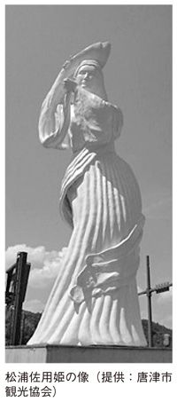
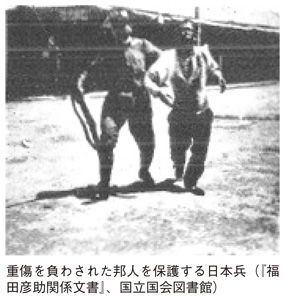

| 「反日思想」歴史の真実 | |
| 拳骨 拓史 | |
| (2013) | |
「反日思想」歴史の真実
拳骨拓史 Takufumi Genkotsu
『歴史通』二〇一二年一月号（ワック）に、面白い話が書いてあった。
アメリカの学者が日中韓の歴史教科書を調べたところ、日本は「ヒストリー」、中国は「プロパガンダ」、韓国は「ファンタジー」であるとの結論に至ったのだという。（宮脇淳子「歴史がないから韓 元気」）
この名言？は、日中韓の歴史問題を考えるうえで、埋まることのない重要な溝 を示 唆 している。
日中韓三ヶ国における歴史教材作成は、すでに日中韓三国共通歴史教材委員会『未来をひらく歴史―日本・中国・韓国＝共同編集東アジア三国の近現代史』（高文研）として行われている。
だが同書には日本側の歴史観や立場といったものは一切考慮されていない。例えば日本が世界征服を目論んでいた証拠だとされた偽書、「田中上奏文」を肯定するなど、歴史教科書とはとても呼べないような内容を多く含んでおり、「日中韓共有の歴史観が必要だ」と主張される方々の〝狙い〟が透けて見える。
日中韓共有の歴史観とは、とどのつまり、中国のプロパガンダと韓国のファンタジーを日本が信じるか否かの選択肢に他ならない。
さもなければ、日本が富 嶽 百 景 などに代表される〝多面的にものを考える〟価値観で、彼らの考え方を変えていくしかない。
かつて中国の文豪、魯 迅 は死の床についたとき、中国人のいい加減な国民性を治すには日本人の真面目さを学ぶしかないと述べているが、このことに気づいている中国人が、現在どれだけいるだろうか。
国内に増幅されたプロパガンダとファンタジーは、やがて感情として集団に伝染していき、人々を狂気の世界へと誘っていく。
その結果行われたのが、「反日デモ」なのである。集団が感情伝染を行うときには、次の五つの心理状態がある。（拙著『日本陸軍に学ぶ部下を本気にさせるマネジメント』扶桑社新書）
① 自我が消滅して、組織のために尽くそうとしたとき
② 集団に属することで、知的批判力が消滅してしまうとき
③ 本能を抑圧する力の減退
④ 集団行為の模倣性の拡大
⑤ 集団に属することで、責任感が減退する場合
特に中国では現在、「蟻 族 」と言われる高学歴ワーキングプアの問題に悩まされている。蟻族とは大卒でありながら、安定した仕事につけず、また安い仕事しかありつけない人々を指している。
現在、中国の大卒者の就職率は八〇％を割っており、高卒は四〇％。中卒は二〇％程度に過ぎない。中国経済発展を担っているのは、彼ら蟻族が安い給料で、休みもなく働いているからなのだ。
人間は、
① 孤独であるとき
② 集団が自分に近い心理的組織であった場合
③ 自分の近くに他人がいる場合
に集団を生み出そうとする傾向があり、「自分と同じ悩みを抱えているグループ」「自分と同じ考え方のグループ」に対する所属意識を強くすることで、安心感と、喜びを感じる。
二〇一二年に戦後最大規模の反日デモが中国で起きたことは記憶に新しいが、デモを煽 動 したのは中国共産党幹部であり、現在の習近平国家主席が指示したとも伝えられている。反日とは「愛国無罪」のスローガンが示すように、彼らの社会に対する鬱 憤 を晴らすはけ口となっている。
韓国でも李明博前大統領が竹島に上陸し、天皇陛下へ謝罪を要求するなどしたため、日本の世論は激 昂 し、多くの関連書籍が発売された。
中韓の反日デモの陰には、反日を商売にする偽愛国団体、国内不満をそらす政治的利用、社会的環境などの要素があるが、これらを評する多くの書籍は直近の反日デモの様相を捉えるだけで、二〇〇〇年にわたる歴史の教訓が導き出されていない。
本書の狙いとは、「反日」中韓二〇〇〇年の歴史を通観することで、反日思想はいつ、どのようにして芽生え、そして私たちの祖先はどのようにこれを超 克 していったかを明らかにすることにある。
もちろん一冊の新書にその全てを網羅することはできないが、「己を知り、敵を知る」者は、戦って敗れるはずはない。今後も続くであろう反日デモを考察するうえで、読者に本書が何らかのヒントとなれば、筆者としてこれに勝る喜びはない。
なお本書の執筆にあたり、乃木神社、唐津市観光協会、蟻通神社（泉佐野市）、東京経済大学図書館、神奈川県立図書館、壽法寺に深く感謝を申し上げます。
「反日思想」歴史の真実 目次
第一章 反日中韓の真実
◆ 論戦であらわれた領土問題における中国の本音
◆ 約八〇年にわたって進歩をみせない日本経済制裁論
◆ 中国を支配していた韓国歴史学の妄想
◆ 韓国が歩んだ歴史問題の系譜
◆ 李明博大統領と親日派への弾圧
第二章 中国・韓国の反日感情の発端
◆ 日本に屈しなかった朴堤上
◆ 日本の節義をしめした調吉士伊企儺
◆ 朝鮮はなぜ虐げる中国を崇めたのか
◆ 中国を尊敬するよう教育された朝鮮
◆ 日韓の距離を縮めた日韓併合
◆ 中国の反日思想の起源
◆ おとぎ話で観る日中相互意識
◆ 教科書が教えない遣唐使を廃止した理由
◆ 日本を理想国家だと吐露した宋の太祖
◆ 中国反日の始まりとなった倭寇
◆ 倭寇王、王直にみる日中歴史観の相違
◆ 朝鮮における倭寇
第三章 反日感情の相克
◆ 西洋諸国の植民地から日本を護るためであった朝鮮出兵
◆ 日本より酷かった明からの援軍
◆ 日本に臣従した中国
◆ 日本人捕虜を活用できなかった朝鮮
◆ 日本と和を失うことなかれ
◆ 開国と鎖国、日韓対立の始まり
◆ 征韓論と朝鮮
◆ 江華島事件がもたらした朝鮮の開国
第四章 近代化と反日思想の変遷
◆ 中国人奴隷を救助せよ！ ～正義の国・日本～
◆ 中国に毅然たる姿勢を貫いた日本人
◆ 日本に向かって放たれた、中国『初』の礼砲
◆ 朝鮮開国への胎動
◆ 壬午事変と甲申事変
◆ 弱国日本と侮る清国
◆ 反日と親日の分かれ目となった東学党
◆ 日清戦争の勝利と三国干渉
◆ 閔妃暗殺は日本人の手によるものではなかった！
◆ 金弘集内閣の崩壊と大韓帝国の樹立
第五章 売国奴と日本への憧れ
◆ 日露戦争へ
◆ レーニン公認！ 日露戦争はロシアの侵略戦争
◆ 反日テロリストも讃えた日露戦争の勝利
◆ 満州人から愛された乃木将軍
◆ 韓国皇帝に「死んでほしい」とせまった韓国人
◆ 日韓併合と売国奴、李容九の絶望
◆ 日本を尊敬した中国人留学生
第六章 虐殺された日本人の近代史
◆ 中国の反日デモの嚆矢と対支二一ケ条条約
◆ 私利私欲にまみれた真実の三・一独立運動
◆ 韓国が隠す独立と建国のウソ
◆ 広がる反日デモと日本人犠牲者
◆ 日韓友好に導いた満州事変
◆ テロリストを讃える韓国と上海事変
◆ 日本人居留民二〇〇名の虐殺
◆ 引き揚げ者の悲劇
◆ 中韓の反日から何を学ぶべきか
◆ 経済が不安定なときは「親日」、安定すれば「反日」
◆ 論戦であらわれた領土問題における中国の本音
二〇一〇年一〇月八日、中国漁船が海上保安庁の巡視船へ激突した問題で、領土問題への関心が高まるなか、私は中国人の会合に講師として招かれ、領土問題について話をする機会に恵まれた。
会場には日本人はおらず、全員が中国人という状況下で、前半に中国側の主張を、後半に日本側の主張を被せるという方法で、日本側の正当性を訴えた。
その際、中国人の領土問題に対する「本音」が垣間見られたので、当時の質疑応答の様子をご紹介しよう。
中国人 「尖閣諸島は歴史的に中国の領土であることは、尖閣諸島の地名が明代の記録に記載されていることからも明らかだ。先生の主張は間違っている」
筆者 「明代の記録に尖閣諸島の地名が出てくるから中国領土であると主張するなら、コロンブスがアメリカ大陸を発見するまで記録には出てこないため、アメリカはインディアンの領土ではなかったと主張するのと同じことだ。大事なことは歴史書に地名が出てくることではなく、実際にどこの国が支配していたのかという点である」
中国人 「尖閣諸島は中国が実際にも支配していた」
筆者 「それはおかしい。日本は一八九五年に尖閣諸島を領土として以来、中国は尖閣諸島近辺より海底資源が見つかるまで、領有権を主張してこなかった」
中国人 「日本の帝国主義によって中国が主張できなくされていたからだ」
筆者 「沖縄返還のときも、『人民日報』でも尖閣諸島の名前をあげて、日本の領土であることを明記している。実効支配していたなら、なぜそのときに抗議をしないのか。大東亜戦争が終わって一体、何十年が経過していると思うのか。帝国主義など無関係だ」
中国人 「中国は確かに尖閣諸島には興味はなかった。中国の領土は広大だ。尖閣諸島などというのは中国からみればゴマ粒くらいでしかなかった。そんなのはどうでもよかった。しかし資源があったことで、話は変わった。それは事実だ。だから、我々は尖閣の領有権を主張する。それの何がいけない？」（大声を上げて興奮しだす）
筆者 「尖閣諸島が日本の領土であることは、国際法的にも明らかだ。二〇〇七年に『ワシントン・タイムズ』は、キーティング米太平洋軍司令官が中国軍事当局者と会談した際、中国側が『太平洋を東西に分割し東側を米国、西側を中国が管理すること』を提案したと報じている。中国が何を主張しようが、それは中国の自由だ。しかし主張には妄想的主張と現実的主張がある。尖閣諸島の領有権が中国にあるというのは、妄想的主張に過ぎない。日本が断固これを拒否するのは当然だ」
中国人 「日本は中国との友好を考えていない。本当に中国との友好を考えていれば、日本と資源を仲良く使おうと主張するはずだ」
筆者 「たしかに中国はフィリピンなどの領土を吸収した際、共同開発に持ち込むことで相手国に譲歩を迫る手法で近年、その版図を広げている。しかし中国がそのようなことを続ければ続けるほど、アジア近隣諸国は中国から心が離れていく。多くのアジア諸国は中国に恐怖の念を持っている」
中国人 「いや、彼らは喜んで中国との共同開発に応じた。日本だけが譲らない。日中友好を考えていない。私は日中友好を大事に思っている。日本の強硬意見をみると、かつての侵略戦争を思い出す」
筆者 「いつまでも侵略戦争、侵略戦争というのはいかがなものか。そもそも日本も中国と戦争などしたくなかった。それは『お互いの』不幸というものだ。第一、日本が侵略したと批判をするが、ではなぜ中国はアヘン戦争で簡単に負けてしまったのか。日本を奥地にひきずりこんで戦ったように奥地に引きずり込めば、イギリス艦隊とはいえ勝てなかっただろう。それを少し大砲で撃たれたくらいで降伏し、各国の侮 りをかった。これは日本の責任ではなく中国の責任だ。アヘン戦争で中国がマジメに戦っていれば、日本も戦争などしなくてよかった。『戦争責任』は日本だけにあるのではない。中国にもある」
中国人 「あなたがどう言おうが、尖閣が中国のものであることには変わりない。国際法など関係ない。尖閣諸島が中国領土であることは、歴史的事実だ。日本はウソをつき、領有権を主張している。日本は口先で日中友好というがそんなのはウソだ。本当に日中友好が大事だと思うなら、なぜ『尖閣は中国の領土です』と認めないのか！ 日本政府は小学校のうちから、尖閣諸島は中国の領土だと教えるべきだ。そうすれば、中国国民は『ああ、日本はなんという良い国だ。日本が好きだ』といって、みんな日本にきて、おカネを使う。日本製品を買う。そうすれば日中友好は盤石になる。日本が尖閣にこだわることは、日本のためにならない。尖閣諸島が日本領土だと主張することは、将来戦争になる可能性も帯びている。それを避けるためには、日本が尖閣問題について、正しい主張（中国領土であるということ）を、国民に知らせることが大事だ！」（興奮・怒鳴り）
筆者 「それは日本からしても同じことが言える。中国が日中友好を大事だというならば、なぜ『尖閣諸島は日本の領土です』と正しいことを中国国民に教えないのか？ それをすれば、日本人は『ああ、中国は何と良い国だ』と、中国のことが好きになる。孔子は『己の欲せざることを、人に施すことなかれ』と説いている。自分がされて嫌なことを、人に押し付けるのは誤りである」
中国人 「そもそも日本政府の対応が悪い。なぜ、船長を逮捕したのか！ 船長をすぐに釈放するべきだった。逮捕されていたため、船長は親の死に目にあえなかった。日本政府は人道上の配慮をもって彼をすぐに釈放してあげるべきだった」
筆者 「それなら中国は犯罪者の親が危 篤 になれば、いつでも誰でもすぐに解放するのか？ 人道上の問題を言うならば、フジタの社員をなぜ今まで不当に拘束しているのか？ （当時）これこそ人道上の問題ではないか！」
中国人 「日本が中国との友好を考えているなら、船長の逮捕などするべきではない。すぐに解放するべきだった。日本政府は愚かだ。私は民主党政権に期待していた。民主党政権になれば、日中友好はより盤石になると！ しかし実際は、なんだあの菅直人首相（当時）は！ 自民党より悪いじゃないか！ 私はね、民主党政権に失望したのですよ！」
筆者 「私とあなたは立場は異なれど、〝民主党政権が無能である〟という考え方だけは、唯一、共有できる点かも知れませんね」（会場笑い）
私の講演はこのようにして終わったが、ここからわかる中国の領土問題における本音は、以下の点に要約できるだろう。
① 、尖閣諸島の領有権について、日本の主張がどれだけ正しくても、中国には通用しない。理屈や法律など関係なく「尖閣諸島は中国の領土」だとの主張を続ける。
② 、中国は尖閣諸島の領有権問題を有利にするため、経済とワンセットにして日本における世論工作を行う。
③ 、中国は領土問題に対して軍事的恫喝を行う。
新聞やテレビなどのニュースを通じ、③ については多くの国民が理解しているが、① と② については、多くがあまり理解していない。中国の本質は「中華思想（中国こそが世界の中心であり最も価値があるとする考え方）」なのであり、正論や道理が通じる相手だと考えるのは、考え違いだと言わざるを得ない。
一九七一年八月、台湾総統府秘書長などを歴任した張 群 （一八八九～一九九〇）が日本を訪れたとき、
「日本は今日まで中国問題を扱ってきたが成功したことがない。中国というのはそんなものじゃないんだ。〔略〕国連がどうかしたからといって、中国はどうなるものでもない。日本が中国をどうするからといって、それで中国はどうなるものでもない。中国は中国人によってのみ動くんだ」（『ドキュメント日中復交』時事通信社）
と語っているが、中華思想とはこのようなものである。
領土問題について、中国に反論すべき日本の立場は拙著『日中韓二〇〇〇年の真実』（扶桑社新書）に記した通りであるが、中国は中国人によって動くという考え方がある限り、日本の主張など彼らは意に介さない。
しかしだからと言って「日本人は知らなくて良い」「反論しなくて良い」ということにはならない。
国際社会で彼らが今後も尖閣諸島の領有権を訴えかけていくことは自明である以上、日本も主張の正当性を訴えなくてはならない。そのためには、日本人自身がこれらの問題から目を背けずに立ち向かう勇気が必要なのである。
◆ 約八〇年にわたって進歩をみせない日本経済制裁論
二〇一二年八月、中国人活動家らが尖閣諸島に上陸したことを契機に、日本政府は尖閣諸島を国有化することを発表した。
中国はこれに反発し、九月一五日に日中国交正常化以降、最大規模となる反日デモを実施。
日系企業は破壊と略奪、放火などにより大きな損害を出すことになった。
これらのデモは習近平国家副主席（当時）により主導され、中国共産党員らが煽動し、デモ参加者には賃金が支給されたことなどが報じられているように、組織的なものであった。
中国人は自分たちより弱いと思えば強気に出て、強いと思えば引き下がる国民性がある。
二〇〇五年に続いて日系企業を狙って襲撃するのは、彼らにとって日系企業を襲撃してダメージを与えることが日本の弱点であると考えているからである。
歴史を通観すれば、この考え方は今から八〇年以上前から、なんら進歩を見せていないものであることがわかる。
中国が反日教育に初めて着手したのは、一九二八年五月、国民党が南京において排日教育方針を決議したことに始まる。
一、国 恥 教材を十分中小学教科書中に編入すること
二、学校は機会ある毎に、国恥事実を宣伝し、我が国第一の仇 敵 が何国なるかを知らしめ、これを反 覆 すること
三、国恥図表を設備し、学生に対し機会ある毎にこれを示し、その注意を促すこと
四、第一の仇敵を打倒する方法に関し、学校において教師学生共同研究すること
ここで日本の活動は武力的政治的侵略であるとし、馬関条約、義和団事件、二一ヶ条要求の撤回、さらに沖縄、台湾、朝鮮、関東租借地の返還を主張する一方、経済的侵略として日貨排斥、国貨使用を提唱。（第四章～第六章参照）
日本が中国を侵略するのは人口が増加しているためであり、日本が行う中国での文化事業までも文化的侵略であると教えた。（陸軍省調査班編『全支排日運動の根源と其史的観察』一九三二年）
彼らは「日本には資源が少なく、人口も少ないので中国に求めなければ生きていけない」、「日本の対中貿易は対外貿易の大部分であるため、日本経済は中国が握っている」のであり、中国が日本との経済を拒絶すれば、日本は自滅すると考えていた。
言うまでもなく、この考え方は事実誤認であった。
一九三〇年時点の統計では、日本の対中貿易は全体の二割であり（中国の対日貿易は四割）、幻想に基づいて反日運動を繰り広げていたのである。
常田力は『日支共存史』（一九三八年）において、中国における反日運動について次のような主張をしている。
「我が国の政治外交を論ずるもののうちには、聡明ぶりを発揮して、日本は支那の富源に依らなければ、将来の発展は絶望であるが如き愚見を、公然発表したものも尠 くなかつた」
「日本は支那に依らなければならぬといふ、経済上に於ける非独立的観念を、先づ日本人の頭から排 斥 せねばならぬ」
「近時人口増加のため産業上の対外活動を企画せねばならなくなつたが、それは何も支那に限つたことではない。支那から物資を求めなくとも日本に何等の支障はない。ただ多少便利だといふだけである。また日本製品を支那に売らなければ、日本の産業が打撃を蒙 ることはない。支那から買うもので必需品はない」
「支那の浅見者流は、日本に対し経済排斥することが、日本を制する絶対の方法と信じた。日本の一部の論者及び実業家もこれに共鳴して、日貨排斥を仰 山 に騒いだ。貿易の要点は有無相通ずるにある。押売りをすることではない。支那が日本の貨物を嫌ふならば、これを売らなければよい。困るのは支那人である」
両国ともに現在でもよく聞くフレーズであると読者はお気づきになられたに違いない。
国交正常化以来、約四〇年間、度重なって「相互理解」という言葉が交わされたが、実際は八〇年にわたって足踏みをしているだけに過ぎなかったのである。
中華人民共和国が一九四九年に建国されてからも愛国教育や反日教育は行われていたが、九〇年代半ばまでは反日は主眼ではなかった。中国の公然たる敵は国民党であり、排外教育の重点もまた、国民党であった。
だが台湾問題は「平和的解決」をするよう方針を転換した結果、日本への批判が前面に出ることになった。
また毛沢東や周恩来など建国に携わった人々は、明治維新を讃え、日本人の国民性についても賞賛をしていたことも影響を与えた。
一九七二年に日中国交正常化が行われてからは、中国に対する侵略は一部の軍国主義者によるものであって、一般人には罪はないということが強調されていき、経済交流などを促進するため政経分離が積極的に行われていく。
だが一九八九年に天安門事件が起き、国民を制御するため今まで活用してきたマルクス主義、階級闘争、社会主義といったイデオロギーが通用しなくなったことを悟った江沢民（一九二六～）国家主席は、国内政治への不満をそらすべく、またこれに代わるイデオロギーとして反日教育を利用し始めたのである。
この結果、一九九四年に「愛国主義教育実施綱要」が制定され、抗日戦争記念館への見学や教科書にいわゆる南京大虐殺、三光作戦、万人坑、七三一部隊などへの記載が大幅に増加することとなった（それまで日本軍の〝侵略〟に関する記載は小学校では一〇％、中学では二〇％であったが、中学校教科書『中国歴史第四冊』［二〇〇一年］では総一六一頁のうち、四一頁が該当しており、大幅に追加されている）。（班偉「中国における『反日ナショナリズム』の論理と心理」、『山陽論叢』一二号所収）
中国が反日運動に狂奔するのは政治的理由を除けば、国民性としての問題もある。
中華思想については前述したが、中華思想に基づく日本に対する〝文化の師〟としてのプライドと日本経済に対する嫉 妬 心 、ライバル心がある。
また朱 子 学 に代表されるように、中国人の観点として多面的な道理は否定される傾向にある。
朱子学の説く宇宙には普 遍 的 な理があり、多面的な視点はないという考えが民族のなかに染みついている。
日本では富嶽百景に代表されるように、富士山を観るにしても百通りの視点から楽しむことができる民族性を持っている。
他人の視点や思想を共有できる考え方があるからこそ、一党独裁や二大政党政治ではなく多党政治ができるわけだが、中国にはそのような視点はない。
次に中国の国民性はかつて魯迅が言ったように「馬 馬 虎 虎 （いい加減）」という特質があり、日本人のような生真面目さなどはない。
抗日運動のバッジや軍服を持っているだけの中国人が日本兵に殺されていることに、ほとんどの中国人は「日本人は残酷だ」と感じていた。だが、そんな中国人に対して魯迅は、
「これはまったく気質の違いによるものである。日本人がマジメ過ぎるのに、中国人はフマジメ過ぎる。中国では看板さえ掲げれば成功だと考えるが、日本人はそうではない。彼らは中国人のように芝居をやるだけ、というのとは異なっている。彼らは抗日グッズを持っていれば、本当に抗日している人間だと思い強敵だと思うのだ。このようにフマジメな者とマジメな者がぶつかれば、どうやってもヒドイ目にあうものだ」
と述べているが、現在においても中国の反日デモにはポーズとしての反日が多く混ざっていると言われる。
実際、中国の愛国教育は見識ある中国の人々からも批判の対象となっている。
二〇一二年、中国国民としての愛国教育を導入すべく、香港の学校へカリキュラムを変更するよう中国政府が求めたことに反発し、「教育に名を借りた洗脳だ」と四〇万人もの大規模なデモが行われた。
このため、さすがの中国政府も「愛国教育の導入は任意である」と軌道修正をせざるを得なくなった。
また中国で人気の歴史講師イアン・ション・フェイ氏が、『中国文化革命』について扱ったインターネット動画講義で「日本の歴史教科書は中国の教科書より、歴史の歪曲が少ない。中国の歴史教科書に記述されている内容は、真実が五％程度で残りは純然たるデタラメだ」「チベットは中国建国以後、特定の独立状態を維持して来た。チベットは国旗も持っている」「ダライ・ラマ一四世は中国の侵攻に対抗した功績で、ノーベル平和賞を与えられた」と述べたため、非難にさらされた。
自国民さえ認めるウソと捏造を教えているのが中国歴史教科書なのであり、日本の教育までこれらに遠慮してウソを教える必要などまったくない。
基本は当時から何ら変わっていないのだ。
東京高等師範学校（現・筑波大学）教授であった佐々木秀一『時局と教育的対策』（一九三八年）によれば、戦前の国民党における反日教育も「彼等は、自己に都合よき場合には歴史上の因果関係を肯定し、然らざる場合にはこれを否定する」とし、自分たちが多民族の領土を略奪したものを当然とする一方、アヘン戦争以降に喪失した領土については不当であると主張するのは自己矛盾であると指摘している。
では当時の反日教育はどのような内容であったか。『時局と教育的対策』から二、三の事例を紹介しよう。
〈地理〉
割 譲 地
日本の中国侵略は約五〇年前、我藩 属 琉球を奪ひ、沖縄県と改称したるに始まる。日清役後、我が台湾、澎 湖 列島を奪ひ、福建に近逼す。日露役後、また我が藩 属 高麗を併呑し、両国境に境を接す。
〈小学唱歌集〉
国恥記念歌
高麗国、琉球国、與台湾
少なからざる地すべて彼に併 呑 せらる
（中略）
奴隷となり僕婢となるの日、眼前に迫る
此国辱何れの時か消えん
朝鮮や沖縄、台湾の領有権は言及しているが、日本帝国主義によって奪われたと主張する尖閣諸島の領有権について、何ら触れていないのが興味深い。
戦前のアメリカにおける親日派として知られたシドニー・ギューリック牧師（一八六〇～一九四五）は『日本へ寄せる書』（一九三九年）において、
「支那における排日運動は極めて徹底したものである。一般民衆に排日思想をふき込む許 りでなく子供の排日教育にも力を注ぎ、このためには歴史上の事実さへも歪め、虚偽の歴史を教えて子供の敵 愾 心 をそそり、憎悪の念を植え付けていった」
「例えば満州は支那本土の一部であるにもかかわらず日本がそれを奪ったと教える。しかし歴史上満州が支那の一部であった事実は未だ一度もなく、逆に支那本土が満州の属国であった歴史上の事実がある位である。これなどは全然逆な事実を教えるものであるが、その目的は一に満州から日本の勢力を駆逐しようとするところにあったわけである」
と述べているが、このような教育を受けた子供たちがどのようになったかについては、江沢民以下の世代を考えれば、おのずから明らかだと言えるのではないか。
そして江沢民による愛国主義教育を受けた世代が、今後の中国を牽 引 していくことを考えれば、朝野をあげて反日教育こそ早急に改めるよう中国に改善を求めることが喫 緊 の課題であるはずだ。
確かに中国では胡 耀 邦 （一九一五～一九八九）総書記が失脚したように、親日であることは批判の対象となりやすく、政治生命を失いやすいという側面があるため、中国が慎重になることは容易に推察がつく。
しかしながら二〇一二年の反日デモの際、インターネットを通じて暴徒と化したデモ隊を非難し、日本への反日デモを改めるべきだと主張する意見が中国国内でも数多くあったことを考えれば、かつてのような中国政府による一方的な情報統制は通用しなくなってきているのは確かである。
◆ 中国を支配していた韓国歴史学の妄想
今から一〇年程前、韓国の留学生たちと歴史問題について議論をしたことがある。
そのとき、留学生から「日本人は自分たちに不都合な近代史を教えようとしていない」という発言があった。理由を尋ねてみると「韓国では歴史教科書の大半が近代以降で占められており、日韓関係が主軸である。それに対して日本の教科書は近代史の記載内容は薄く、日韓関係についてはさらに薄い」と言うのである。
これに対し、私は「韓国は日本に併合されたため、韓国の近代史とは対日関係のみであるが、日本は韓国のみならず欧米やロシア、東南アジアなどとも関係を深めていった。近代史の記述について韓国と同等の水準で記載すれば、教科書は百科事典のようになってしまう」と反論しておいた。
だが当時の私が気づかなかった観点が一つあった。それは「韓国の歴史教科書は、なぜ近代史だけが異様に多いのか」という問題である。
当時は反日史観による影響が、このようないびつな教科書を生み出していると考えていた。だが第二章から述べていくように、韓国は日本統治時代に入るまで悲惨な歴史を歩んできた。
同時に自分たちの歴史を軽視したため、日本と異なり歴史記録が残っていないのである。
韓国では三・一独立運動（こちら を参照）以前では、普通学校の教育において歴史教育は行われていなかった。
この理由を戦後の日本や韓国などでは、「日本が朝鮮の歴史を抹殺しようとした」などと言われているが、そもそも李氏朝鮮時代において、韓国史は朝鮮半島の人々に全く顧みられていなかったのである。
宣教師であるシャルル・ダレ（一八二九～一八七八）は、この様子について『朝鮮事情』で次のように述べている。
「漢文で書かれた様々な朝鮮史の本は、それらを一読した人によると、誇張された朗読用のテキストに使われるため、多かれ少なかれ想像上の事実の雑多な寄せ集めに過ぎないということである。朝鮮の学者たち自身も、これらの文献になんらの信用もおいておらず、また決して研究対象にすることもなく、中国の歴史書だけを読むことにしている。（中略）学者たちはといえば、それを開いて見ることさえ恥辱だと思っている」
これが当時の朝鮮知識人の姿なのであり、それを棚に上げて日本統治だけを非難するのはお門 違 いも甚だしい。
これは単に歴史書だけにとどまらず、自分たちの文化さえも顧みず、多くを破壊していったのである。
朝鮮の歴史を教えるようにしたのは、むしろ日本統治下においてであった。
朝鮮史を指導するように朝鮮総督府へ求めた日本人に、東北帝国大学（現、東北大学）初代総長や京都帝国大学（現、京都大学）総長などを歴任した澤 柳 政 太 郎 （一八六五～一九二七）や在朝鮮日本人教育者らだった。
彼らが韓国史を教えることを訴えたのは、日韓の国民が提携して歩むことができるように、日韓交流史を学ぶことで民族対立を融 和 しようと考えたからであった。
しかしながら、当時の韓国には日本系の学校以外に、欧米の宣教師や韓国人教育者らによって設立された学校もあった。
これらの学校では韓国の歴史について教えてはいたが、日韓対立を煽り、民族意識の高揚を目的として教育していたのである。（権五鉉「「朝鮮人本位教育運動」に現れた歴史教育論：三・一運動直後の韓国人による歴史教育改革論」、『社会科研究』［四六］一九九七年三月）
彼らがそのように画策した理由は、第六章にて述べる予定であるが、日韓の融和は当時の欧米列強の望むところではなかった。
韓国の歴史学は日本によって拓 かれたが、大東亜戦争終戦後も民族国家建設のため、韓国史教育の関心は高まっていった。
一九七三年には韓国史は独立教科となったが、一九九二年からは国史科は廃止され社会科のなかに統合されることになった。
就学時間の短縮も含め、記憶が重視される歴史の授業は学生の勉強熱を低くし、教師自身も歴史専属の先生が不要になったことで韓国教育界の歴史学は退潮を招いていると言って良い。（金宝林「一九四五年以後韓国歴史教育の変遷と最近の傾向」、『日本教育学会大會研究発表要項』六三、二〇〇四年八月）
最近になって、韓国史は再び独立教科へと復権したが、昨今、インターネットなどで「ウリナラ史観」などと揶揄される韓国史の誇大化は、韓国史学会のレベルが退潮していることと無縁ではないだろう。
具体的には「韓国はかつて北東アジアの覇者であった」「北はバイカル湖、南は沖縄、西はメソポタミア、東はアメリカ大陸」までが韓国の領土であったと主張を定着させようというものである。
大田大学校哲学科の林均澤元教授は、『韓国史』（韓国書鎮出版社）において、「唐の時代に、高句麗、新羅、百済が中国領土の大半を支配していた」「統一新羅の領土は、現在の東シベリア、モンゴル、華北地域など中国北部全体、華中地域、チベット自治区、新疆ウイグル自治区など広大なものとなり、唐は華中地域や華南地域をおさえるにとどまった」などと、荒唐無稽な話を展開している。
また韓国の圓光大学校教授が広西チワン族自治区の百済郷を調査し、「この地はかつて、百済の植民地だった」と発表し、中国側の怒りを招いたと報じられている。
二〇〇七年に大統領選挙に立候補した政治活動家の許京寧氏は、「三国時代にヨーロッパまで伸ばした韓半島の故土を取り戻すのが私の夢だ」などと主張した。
もっとも許京寧は韓国ではお笑い芸人のような扱いであり、先の圓光大学校教授の話題なども韓国では大きな反響もなかった。
相手が日本となれば韓国起源説は朝野あげて熱心であるが、中国になるとさすがに躊躇するらしい。
いずれにしても、このような話が唱えられるということ自体が、韓国の歴史学の退潮を示していると言って良いだろう。
◆ 韓国が歩んだ歴史問題の系譜
韓国が中国に対して遠慮することは歴史問題だけではない。領土問題にしても同様である。
中国と韓国には海中岩礁「離 於 島 」（中国名・蘇岩礁）における領土問題がある。
離於島は中韓両国ともに「自国のＥＥＺ内にある水中暗礁」だと主張し、韓国がこの暗礁に海洋調査施設を建設したことで、中国との対立を深めている。
二〇一二年、済州島の議会が九月一〇日を「離於島の日」と定めるよう条例化を進めようとしていたが、韓国外交通商省が廃案としている（二〇〇七年、二〇〇八年にも提出している）。
日本に対しては「独島の月」「対馬島の日」などを制定し、根拠無き領有権を公然と主張しているが、大国である中国には遠慮する好例だと言えるだろう。
日本は韓国にとって与 しやすい相手に他ならず、強気に出ればさがると考えているため、強硬な姿勢を示すのである。
たとえば、韓国の初代大統領となった李 承 晩 はそもそも両班出身であり、独立維持のため大韓帝国皇帝高宗により外交の使者としてアメリカに派遣され、そのままアメリカに留学、併合以降、在米の朝鮮要人として活動していた。李承晩も当初は亡命政府の樹立など積極的な独立運動に携わっていたものの、独立運動がその名を借りた社会主義運動へと転じていくと、アメリカでのロビー活動を専らにするようになった。
もちろん李承晩自身が反日であり、朝鮮の独立を目指していたことは事実である。しかし、彼が初代大統領となったのは結果論であり、日韓併合後に組織だった大きな独立運動を行っていたわけではない。反日は韓国において大きな政治テーマでなかったことがわかるだろう。
それが、あたかも李承晩が「偉大なリーダー」と認識されることになったのは、李承晩が自らの政権基盤を正当化するのに、独立の志士といった面を強く押したからである。これは北朝鮮の金 日 成 も同じだ。
そして李承晩は、大統領就任後のさまざまな失政、政争を糊塗するのに、国民への反日教育を開始し、政敵には「親日」のレッテル張りを行って追い落としていった。当時、国家を運営する能力のあったのは、日本統治時代に朝鮮総督府で行政を行っていた韓国人たちである。あまりに自明の事柄だが、李承晩は日本の下で働いていたのは「韓民族への裏切り」として、プロパガンダを行ったのだ。
日本統治時代、近代化に適応できた韓国人はおそらく生活が改善したと思われるが、そうした人々への妬みもあっただろう。李承晩は、近代化を日本の統治にすり替え、近代化を享受できない一般大衆の批判を、韓国人に根づく「反日」に転嫁させたのである。まさしく「反日」が政治思想でなく、政治の一手段に過ぎないことを表している。
これに輪をかけたのが歴史問題をめぐる対立である。
韓国で最初に大きく日本の歴史問題が報じられたのは、一九八二年に遡る。
一九八二年、日本の文部省が「教科書の『侵略』を『進出』に書き換えた」と大手新聞各社が報じたことに、中国・韓国は強く抗議することになる。
実際、「侵略を進出に書きかえた」というような記述変更などはなく、新聞社による誤報に過ぎなかったが、日本政府はこれを打開するため、以後の教科書検定基準に、
「近隣のアジア諸国との間の近現代の歴史的事象の扱いに国際理解と国際協調の見地から必要な配慮がされていること」
との一文を設けた。つまり日本の教科書を検定する際には、近隣諸国への配慮がなければ許可しないというのであり、「近隣諸国条項」と呼ばれる悪法である。
日本ではこれが誤報であったことは、多くの人に知られているが、中国や韓国では未だにこれを真実であると信じている人は少なくない。
韓国ではこれを契機に当時、「克 日 論 」（日本を知り日本に勝つ）が叫ばれることになる。
当時、親日と言われた朴 正 煕 韓国大統領が暗殺され、混乱を極めた政局をクーデターによって鎮圧した全 斗 煥 は、一九八〇年に民主化を求めるデモを武力鎮圧（光州民主化運動）したことにより、高まりつつある民衆の不満をそらす必要に迫られていた。
朴元大統領が日本から多額の支援金を受けていたことも、「親日家」であるとして批判される理由になっていたため、全斗煥大統領はこれを利用すべく「反日」と「親日」を超えた「克 日 」という新しいスローガンを用意したのである。
その事蹟というべきが、一九八七年に建設された韓国の独立記念館である。多額の寄附金を募り、約五〇〇億ウォンで建てられた独立記念館は、日本軍による銃殺刑や拷問などの様子が蠟人形をつかって虚実入り乱れて再現されており、訪れた人々の多くは口を揃えて「まるでお化け屋敷だ」という悪趣味なものとなって仕上がった。
一九八一年当時には、「我々は国を失った民族の恥辱をめぐり、日本の帝国主義を責めるべきではなく、当時の情勢、国内的な団結、国力の弱さなど、我々自らの責任を厳しく自責する姿勢が必要である」と韓国自身の非を認める発言もしていただけに、独立記念館の開館は日韓関係の未来を考える際、全斗煥の行動は残念でならない。
克日論は次の盧 泰 愚 大統領の時代でも行われたが、ソウルオリンピックの成功や好景気に支えられ、それほど大きく反日へ舵をきることはなかった。むしろ日本の良いところを学ぼうという「知日論」「模日論」などが新しく芽生えてきた。
日韓関係は韓国が軍事政権から民主政権へと移行してから、より悪化することになる。
金 泳 三 大統領の時代には、細 川 護 首相が韓国併合について謝罪を述べたのに対し、永 野 茂 門 （一九二二～二〇一〇）法務大臣（羽 田 孜 首相時）が、「日本で言う大東亜戦争というものが、侵略を目的にやったか。日本がつぶされそうだったから生きるために立ち上がったのであり、かつ植民地を解放する、大東亜共栄圏を確立するということを、まじめに考えた。私は南京事件というのは、あれ、でっち上げだと思う」と発言。永野法務大臣は就任後、わずか一一日で更迭されることになったが、韓国の世論は沸騰した。
金泳三大統領は一九九五年一一月一四日には、江沢民との会談で「日本人の間違った行儀を必ず直しておく」などと発言し、さらに「日韓併合は誤りであり、朝鮮半島の南北分裂は日本に責任がある」と述べたため、日本を怒らせることになった。
特に一九九五年は韓国の光 復 （独立）から五〇周年の節目（実際に大韓民国が樹立されたのは一九四八年）となるため、日本の朝鮮統治時代のシンボルというべき旧朝鮮総督府府庁を解体する所行に及んだ。
この建物は花 崗 岩 によってできており、近代建築の観点からも文化的見地からも取り壊しに反対する声は少なくはなかったが、日 帝 残 滓 を清算するという政府方針と世論におされ、一部を残して破壊されることになった。
また同年には竹島に接岸施設を設置したほか、軍隊を常駐化させるなどの要塞化を推進。現在まで続く竹島問題を引き起こすことになった。
さらには韓国独立五〇周年を記念した「歴史立て直し事業」のなかで、日本により断絶された朝鮮風水の地脈を復興しようと杭除去運動を開始した。
これは日本が風水によって朝鮮民族の精気を奪おうと杭を打ち込んだとされるもので、「日帝風水謀略説」とも呼ばれている。
朝鮮半島は風水に対する信仰が根強い地域であったため、日本が鉄道を敷設したり、建物を造ろうとすると風水を断ち切るとされ、各地で反対運動が巻き起こった。
これは齋 藤 実 朝鮮総督が、「工事を止めてしまえ」というほど、アタマの痛い問題であったが、最終的には朝鮮王であった李 垠 （一八九七～一九七〇）の同意によって進められることになった。だが、韓国では未だに根強く日本軍による陰謀説が根づいている。
金泳三は、この工事で埋め込まれた杭が朝鮮を呪うものであるとして、これらの除去作業を命じたのである。
だが日本ではそもそも風水などそれほど根付いていないように、荒唐無稽な話以外の何物でもなく、事実、韓国で引き抜かれた多くの杭は、単なる測量用の杭に過ぎない。
しかしながら韓国では現在でも測量技術に対する理解は低く、二〇〇六年には「山の頂上部で発見されたのだから、測量用である可能性は薄い」などとメディアが平気で報じる始末である（山頂などに測量用の三角点を設けることは日本人なら高校生でも知る常識であろう）。
次の大統領となった金 大 中 （一九二五～二〇〇九）は「韓国と日本の関係において、私は門を開く役割を担いたいと願っている。何よりも両国の指導者の思慮のなさと過ちからくる、両国民の間にある不信と憎悪の門の、何と固く閉じられていることか」（『金大中獄中書簡』岩波書店）と述べているように、政治活動を始めた当初から、日本との軋 轢 の原因となっている歴史問題を克服しようとした。
「韓国政府は、過去の問題を持ち出さないようにしたい。自分が責任を持つ」と述べたほか、映画や音楽など日本文化も開放することを表明し、日本との垣根を取り払うよう尽力をしている。
さらに一九九八年に訪日し、天皇陛下と拝謁した際にも、植民地支配には言及せず、戦後日本の発展と平和主義を讃え、韓国への支援を求める内容となっていた（訪日に先立ち、政府として天皇を表す「日王」の呼称を改め、「天皇」を使用することを公式に宣言した）。
もっとも二〇〇一年に「新しい教科書をつくる会」が教科書修正を求める運動を起こした際にはこの活動を外交問題として捉え、クレームを入れてきているが、金泳三時代と比べると日韓関係に尽くしたという意味では評価できるとする声もある。
だが彼の最大の失点は、北朝鮮に接近したという点である。北朝鮮に多額の支援を行うことと引換に、自らの地位を安定させるためノーベル賞受賞の工作資金を捻出したことは、次にも北朝鮮支持をする盧武鉉（一九四六～二〇〇九）大統領の時代へと続き、日韓関係が最悪になったことは言うまでもない。
日本統治時代を全く経験していない盧武鉉が大統領になると、日韓関係は大きく暗転する。
就任当初は未来志向を謳い、対日重視の姿勢を見せていたものの、裏では元人権派弁護士として活動した略歴が示すように、日本に対する「歴史の清算」を求めるようになってきた。
小泉純一郎首相（当時）が靖国神社へ参拝することを表明すると、「過去の戦争を誇り、栄光のように展示していると聞いている」「（靖国神社は）過去の戦争と戦争英雄を美化し、これを学んだ国が隣りにあり、こうした国が膨大な経済力と軍事力を持っている。（韓国など）その近隣国が過去に何度も苦しめられたことがあるならば、国民は未来を不安に思わざるを得ない」と、靖国神社参拝を批判したほか、首脳会談をキャンセルするようになった。
さらに韓国にいる親日派の財産を没収するため、「親日反民族行為者財産調査委員会」を発足させ、親日家だと認定された人々の子孫のもつ財産を没収することを合法化させ、日本側の制止を無視して竹島の海洋調査を行い、日本に対しては「武力行使もありえる」と恫喝し、事実、島根県内の防衛庁（現在の防衛省）施設に対して軍事攻撃を行うよう検討していたことが明らかになった。（『ワシントンポスト』、二〇〇六年四月二一日）
またアメリカ軍に対し「日本を米韓共通の敵として、仮想敵国にしよう」と要請し、関係者を当惑させるなどしている。
盧武鉉大統領はこれだけにとどまらず、日本海を「東海」と改称するよう求め、新しく「平和の海」と呼ぶように提案するなど迷走をつづけた。
盧武鉉大統領の異常なまでの反日の原因は、日本統治時代を経験していない世代、つまり反日教育を受けた世代の弊害だと言われているが、日本では年長者の女性を中心に二〇〇四年の韓国ドラマ『冬のソナタ』ブームが起こる一方、若者を中心として二〇〇五年には嫌韓ブームが助長されることになった。
盧武鉉大統領による負の遺産は、今なお日韓関係を損なう障害と繫がっているのである。
◆ 李明博大統領と親日派への弾圧
李明博（一九四一～）大統領は在日韓国人出身であることから、盧武鉉時代によって大きく損なった日韓関係を改善させるものと期待されていた。
当初は李明博大統領も「未来志向な解決」を述べ、「わたし自身は新しい成熟した韓日関係のために、〝謝罪しろ〟〝反省しろ〟とは言いたくない」「日本は形式的であるにせよ、謝罪や反省はすでに行っている」などと発言した。
多くの日本人はこの発言に、新しい日韓関係を夢想したが、李明博大統領の真意は日本が歴史問題に対し、韓国への謝罪や賠償を自発的に行うよう促すことであった。
そのため日本の学生に竹島は韓国の領土であることや、日本統治の残虐性を教え込むため、修学旅行生を韓国内へ誘致することを発表したほか、従軍慰安婦への賠償金について「日本政府は法律的でなくとも人道主義的な措置を必ず取るべき」であると主張した。
補足すると「法律的でなくとも人道主義的」という表現が示すように、日本の韓国への賠償金問題は一九六五年に日韓基本条約が締結され、国交の回復が行われたときに「完全かつ最終的に」解決されたのであり、従軍慰安婦への賠償金を対象に含めなかったのは韓国政府の問題である。
つまり法律的には片付いているが、日本に賠償を追加するよう求めるのが韓国側の姿勢なのである。
もっともこのような韓国による歴史捏造に対し、反発をもつ人々もいる。
二〇一二年九月には、韓国で親日派向けのコミュニティをインターネットで開設した一三歳の男の子が警察に捜査される事件が起きた。（『韓フルタイム』二〇一二年九月六日）
そのＨＰには、旭日旗を背景にして「大日本帝国」というバーナーを掲げ、「竹島は日本の領土」「日本が朝鮮に基礎的市場経済を移植してくれた」との主張が記載されていた。
一三歳の少年は、「私は売国奴ではなく、日本を心から助けたいと思っている親日家」「独立運動家たちは朝鮮の光復（独立）に何も役に立たなかった」と言って、韓国旗を燃やした写真を掲載した。
今回の逮捕は、韓国国旗を燃やしたことによって「国旗・国章冒罪」に抵触したことが理由だが、これ以外でも韓国では約二万件以上の親日サイトが二〇一二年六月から拡散されはじめ、政府は削除や通信遮断などに追われることになったということである。
いかに日本が好きであれ、自国の国旗を焼くという行為は決して感心できたものではないが、反日一辺倒というイメージがある韓国の若い世代に、確かに親日の芽が育っていることは理解できる。
一方で盧武鉉などに代表される反日教育世代の台頭により、日韓関係は大きな転換期を迎えつつあると言えるだろう。
中国が行う日本批判は、大きく「歴史問題」「尖閣諸島などの領土問題」「台湾問題に絡む日米安保体制に対する牽制」という三つに分けることができるが、韓国も「歴史問題」「竹島問題などの領土問題」という二つの問題を抱えている。
そしてこれらは歴史問題を軸とし、相互が結び合っているのである。
二〇一三年二月には韓国で新大統領が就任した。そして三月には中国では習近平による新しい全国人民代表大会が開催された。そして日本でも安倍晋三が首相へと返り咲いた。
だがこの新しい時代を観るうえでも変わらないのは、歴史問題なのであり、特に中韓の反日の歴史というものをよく理解する必要がある。
それは近代史という狭い範囲ではなく、有史以来、日中・日韓はどのように反目し、どのようにこれらを解消していったかを学ぶことは、今後を生きる我々の教訓となるであろう。
これから中韓の反日思想二〇〇〇年の歴史をみていこう。
◆ 日本に屈しなかった朴 堤 上
反日に狂 奔 する中国と韓国が報道されると、テレビの識者たちは反日の淵 源 をいずれも近代以降に求めようとしている。
確かに直近の問題については、その考え方で問題はないのだが、民族性への考慮がされていないため、視聴者に問題解決の糸口を与えるものにはなっていない。
では朝鮮はいつから反日なのであろうか。
じつは朝鮮人が日本を軽蔑し、怨敵視する風潮は、新羅時代までさかのぼることができる。
新羅の宰相、朴 堤 上 は日本に人質にとられた王弟を救出するため日本を訪れるも、捕まってしまった。
日本は朴に対し、臣下となるよう呼びかけるが、朴は「自分は新羅の豚となるとも、この国の貴族にはならない」と断り、処刑されてしまう。
朴の妻は夫の死を知ると、これを悲しみ海の彼方日本を眺め、やがて殉死したという。その後の伝承では、悲しみのあまりに石となったとも言う。
この話自体は、『三国史記』（一一四五年成立）、『三国遺事』（一二八〇年頃成立）のなかに収録されているのだが、その後、李王朝第四代国王である世宗（一三九七～一四五〇）が、『三 綱 行 實 図 』（一四三四年成立）を刊行することで朝鮮大衆へと広まっていった。
『三綱行實図』とは、儒教の道徳書で君臣・父子・夫婦間で守らなければならない道理を朝鮮や中国の忠臣・孝子・烈女などから一〇五人を抽出し、おとぎばなしのように子供たちへ絵本形式で語りきかせるための書物であった。
この本はその後も数百年近くにわたって重版を重ね、当時の朝鮮人たちの常識となっていくが、前述した朴堤上の話もこの中に収録されており、日本に対する敵 愾 心 を強くさせる根源となっていった。
◆ 日本の節義をしめした調 吉 士 伊 企 儺
じつは日本にもこれと似たような話がある。
五六二年、任那を滅ぼした新羅を征討するため、調 吉 士 伊 企 儺 は出陣するが、上官が戦い方について無知であったため、捕縛されてしまった。
新羅は伊企儺の妻子らを人質としたうえで、尻をださせ「日本の将、我が尻をくらえ」と言えば命を助けてやると脅した。
だが、伊企儺は「新羅の王、我が尻をくらえ！」と絶叫したため、息子ともども処刑されてしまう。
妻である大 葉 子 は、日本軍に対し、
韓国の 城の上に立ちて 大葉子は 領巾振らすも 日本へ向きて
と歌ったところ、伊企儺らの壮絶な死を目の当たりにした日本軍将兵らは、唱和して、
韓国の 城の上に立たし 大葉子は 領巾振らす見ゆ 難波へ向きて
と、返歌したという。彼女のその後は記録されていない。
女性が悲しみのあまり石と化したという話も、日本にある。
五三七年に、松 浦 佐 用 姫 は新羅に出陣するため恋人、大 伴 狭 手 彦 と別れることになったが、別 離 を悲しんで七日にわたって泣きはらした挙句、石になってしまったという。

この伝承はかなり古くから伝わっていたようで、『万葉集』にはこの伝承に因んで詠まれた歌がいくつか収録されている。
日本人の多くは伊企儺が貫いた日本精神の節義を知らないが、朝鮮では脈々と語り継がれるということは、朝鮮が〝恨〟の精神文化であると呼ばれる所以であろう。
朝鮮民族にとっての「恨」は、恨みだけでなく、憧れや悲哀など様々な複雑な感情を表している。彼らの「恨」の形成の裏には、時の王権や両班によって苛 斂 誅 求 を極めた支配や、過去より幾度となく異民族によって征服させられたことによる抑圧と屈辱の歴史が、その根底をなしていると考えられる。
いずれにしても朴堤上の哀史が朝鮮のおとぎ話となって人々の頭にしみこみ、豊臣秀吉による文禄・慶長の役とあいまって〝反日思想〟が千数百年にわたって注入される淵源となったと考えられる。
◆ 朝鮮はなぜ虐げる中国を崇めたのか
これとともに、日中韓をめぐる歴史には、もう一つの謎がある。
朝鮮史をひもとけば日本が朝鮮に攻め込んだ数よりも、中国のほうが圧倒的に多く、また人民を蹂 躙 した数も内容も比較にならないことは一目瞭然である。
それにも関わらず、なぜ朝鮮人は彼ら中国人を「大 国 人 」と呼んで尊敬していたのだろうか。
この違いを受難の歴史が現在から近いか遠いかという問題で考えるのは簡単であるが、私は歴史的視点からこの問題を捉えたい。
中国が朝鮮半島を支配下においたのは、新羅が唐の属国となったことに始まるが、その際、自らを「大唐国新羅郡」と卑下し、中国的な姓一文字の名前（金、朴など）に創氏改名させられた。
元 の支配下にあった際には、高麗国王は代々、元から妻を娶 らなければならず、また名前も常に「忠」の字をつけることを義務づけられた。
「忠」とは言うまでもなく、元への忠義である。
また処女で美人の女性は元へと献上しなければならなかった。いわゆる「貢女」である。
貢女は自分たちで選ぶことは許されず、中国から貢女を選ぶ「採紅使」が来ると、朝鮮側は貢女を選抜する機関を設置し、巡察使が各地を物色してまわった。
貢女の季節がくると、処女を献上するため国中の婚姻が禁止されたと『高麗史』に書かれている。
一二七四年には元が一四〇名の美女を連行し、忠烈王・恭 愍 王 の時代には貢女は一七〇人以上、四四回に上った。
これは高麗時代だけでなく、李王朝になっても太宗から孝宗の時代にかけて明・清に一四六人が九回にわたって献上されている。
太宗の時代では、候補者に美人がいないことに激怒した中国の使者は、朝鮮の官僚たちを棒で打ちすえるなどしたため、朝鮮側は民衆に対して処女を隠したものや顔に傷をつけるためクスリを塗るなど、選抜から逃れようとしたものは厳罰に処すと命令するに至っている。
貢女として連行されていった女性は数千人にのぼると考えられているが、『三朝実録』などの編纂に参与した李 穀 （一二九八～一三五一）が言うように、娘が生まれたら秘密にしたまま暮らし、娘を隠していたことが発覚すると村全体が処罰の対象となったものの、カネがあるものは賄賂をつかって切り抜けた者もいたようである。
また高麗では、元の度重なる献上品の要求で国庫が貧窮し、政府は「功の無い者でも金を納めれば官位を購入できる」と、売官まで行う状況へと追い込まれていった。
後金（後の清）が明を滅ぼそうとしたときには、明を救出すべく朝鮮は挙兵するが、返り討ちに会い（丁 卯 胡 乱 ）、一六二七年、後金を兄、朝鮮を弟とする和議を結ばされた。
その後、清が朝鮮に臣従を要求すると、これを拒否して清軍に完 膚 なきまで叩きのめされた挙句（丙 子 胡 乱 ）、一六三七年、李王朝第一六代国王である仁祖は、平民の着る粗末な服装に着替えて、受降壇の最上段に座るホンタイジ（清の二代皇帝）に向かって最下壇から三 跪 九 叩 頭 の礼による臣下の礼を行って許しを乞うた。
ホンタイジは、朝鮮に対して自分の徳と仁祖の過ちについて記載した碑文を石碑に刻ませ、建立させるとともに、清からの使者を接待するため、迎 恩 門 を建立。
使者を朝鮮国王みずからが三跪九叩頭の礼で迎えた後、慕華館で接待を行うようにしたのである。
朝鮮がこのような過酷なまでの中国の支配から脱却することができたのは、一八九五年、日清戦争によって日本が勝利したからであり、日本が清に李氏朝鮮の独立を認めさせるまで続けられることになったのである。
◆ 中国を尊敬するよう教育された朝鮮
では朝鮮では中国のこのような所業を恨んだかといえば、そのようなことはなく、幾度となく侵略されても、ますます中国を敬服したことは歴史がしめす奇想天外なる事実である。
李氏朝鮮時代、初学者のためにつくられた教科書に『童 蒙 先 習 』（一五四一年成立）という本がある。
この本には「漢の武帝が朝鮮を討ち滅ぼして、行政区域を改良して四郡を置いた」と記載されているが、そこに書いてある読訓には、「之を討ち滅ぼされ給ひ、四郡を置かせられ給へり」と最高級の敬語が書かれている。
わかりやすく言えば、「中国軍は自分たちのご先祖様たちを、たくさんお殺しあそばされまして、私たちの領土を散々にお踏み荒らして頂けました」と、いかにも感激、身にしみるが如く書いてある。このような教育を幼少の時からされたなら、その子弟がどのように育つか明白であろう。
朝鮮を語るうえで特徴的なのは、「小中華思想」と「事 大 主義」と呼ばれるものである。
小中華思想とは、中国が古代から抱いていた中華思想、すなわち中国大陸を制する自国こそが文化・思想ともに最高であり、それ以外は蛮族であるとする考えであり、中国をもっともよく模している自分たち（朝鮮）は中華に次ぐ国だと自認することで優越感を抱く思想である。
事大主義は、「大に事 える」という読みの通り、大陸に対して恭順するという外交政策を指している。
このような朝鮮特有の思想が芽生えたのは、自分たち朝鮮では中国に勝てないという現実的な脅威から、反抗や抵抗、嫌悪で対応するより、協力・信頼・好意で対応するほうが無事でいられるという半島国家の生き残る智 慧 によるものだったと考えられる。
自分たちで意識したかどうかは別として、子供のうちから、中国を尊敬し自らを卑下することで生き残る道を模 索 してきたのである。
仁祖の第二王子（後の孝宗）の師 傅 （守役）であり、李王朝の政治に影響を与えた宋 時 烈 （一六〇七～一六八九）は、自らを「明の遺臣」であると称し、明皇帝の霊（神宗と穀宗）を祀る萬 東 廟 を建立した。
これにより多くの朝鮮人は自らを「夷 狄 」（蛮族）だと見下すようになり、自分たちの祖先は孔子や老子など中国の偉人たちであったと家系図を偽装するようになった。
古笥会（韓国に開国派指導者、金玉均を顕彰する会）の専務理事であった金振九によれば、日清戦争当時を振り返り、
「私の幼少時代は『ナーニ、日本人が東から攻めて来れば、大国人（支那人のこと）が西の方から押しかけて来て、追払ってくれるんだ』と、口ずさみして、心も体も凡てを挙げて、大国人に凭 れ、且つ国家も個人も、運命を挙げて支那に委せたのであります。これは無論、寺子屋の先生とか村中の長上者から、始終聞き慣れているからであります」
と述べている。
逆に日本統治時代を経て、朝鮮のほうが中国を凌駕するようになると、朝鮮人はあれだけ尊敬していた中国人を蔑視するようになっていったのである。
◆ 日韓の距離を縮めた日韓併合
このように考えれば、「小中華思想」「事大主義」といわれる朝鮮独自の思想は、じつは教育によって生み出されたものであることがわかる。
自らが生きるためとはいえ、このような偏狭な教育を施さなければならなかった朝鮮の歴史には深く同情するが、現在の日本の歴史教科書に対して執 拗 に言う〝日本による朝鮮統治の悪行〟を書くように求める姿は、かつて自分たちが受けてきた鬱 憤 を、日本にもなすりつけようとしているようにも思えてくる。
逆に日本統治時代を経て、日本の統治が公平であることが理解されてくると、一九一九年の二・八独立宣言を執筆した朝鮮の作家、李光沫や三・一独立運動で主導的役割をはたした人々までもが、大東亜戦争へ突き進む日本に対し、もろ手をあげて応援をするようになっていった。
李東華は、一九三三年に上梓した『国防と朝鮮人』で次のような詩を披瀝している。
日本は世界に君臨しつつある
礼賛せよ。日本を。世界の日輪を
そして朝鮮よ飛べ。日輪をめざして
荒鷲は眼を見開いて、日輪に逆つて突進するといふ
朝鮮よ。日輪に向ふ荒鷲となつて飛べ
日本は世界の日輪だ
烈々たる日輪の輝きは、その精神力にある
廟 行 鎮 決死隊三勇士の豪 勇 果 敢 なる行動を思へ
人間が手榴弾となつて、敵の鉄条網を爆破したのだ
精神日本の極地。乃木将軍の血はここにも流れて居る
日本と韓国は日韓併合によって、お互いにその距離を縮めることに成功したのである。
後述するが、このことは韓国の反日思想を解決させるうえで、私たちに重要な示唆を与えるものとなっていく。
◆ 中国の反日思想の起源
では一方において、中国における反日思想の起源はどこにあるだろうか。
日本が最初に中国を激怒させたのは、聖徳太子（五七四～六二二）が隋の煬 帝 （五六九～六一八）に送った「日出ずる処の天子、書を日没する処の天子に致す。恙 無 しや」という手紙である。
この書簡を読んだ煬帝は、外交担当官である鴻 臚 卿 に「無礼な蕃夷の書は、今後自分に見せるな！」と、烈火の如く怒ったという。
しかしながら隋は当時、高句麗征伐への準備を整えている最中であり、日本との友好が大事であると考えたため、六〇八年に裴 世 清 を日本へ使者として派遣した。
日本を当初は小国と思い蔑視していた裴世清は、日本の港に到着すると息をのんだ。そこには日本の最新鋭軍艦が三〇隻ならべられ、その威容を見せつけていたからである。
『隋書』によれば、裴世清は帰国してから「日本の人々は中国人と同じであり、彼らが〝蛮族〟と呼ばれるのは理解できない」と語っている。
その後も日本からの遣隋使はつづけられた。
ここで大事なことは、日本の教科書では聖徳太子が自国の力量もわきまえずに、隋に対して無礼な書簡を送り届けたかの如く教えられるが、中国ではこれ以降、日本を紹介する際には必ず「日出ずる処の国」であると紹介されている点である。
聖徳太子の行動は一時的には煬帝を怒らせたかも知れないが、日本側の要請をのませたという部分において、日本外交は誇るべきものであったといえる。
◆ おとぎ話で観る日中相互意識
では具体的に中国が日本に対して反日感情を抱き始めるのはいつからであろうか。
中国は大国であるゆえか、日本を意識しておらず、いわゆる反日感情が芽生えるのは後年になってからである。
むしろ日本の方が前述したように聖徳太子以来、「自分たちは中国と対等である」という意識を芽生えさせ、中国への対抗意識をもやしている。
日本がどのように中国を捉えていたか。それはおとぎ話のなかにも取り込まれており、そのいくつかをご紹介しよう。
『枕草子』（九九六～一〇〇八年成立）には、「蟻 通 明 神 」という次のような日中知恵比べの話が集録されている。
唐の皇帝が日本の天皇をなんとか騙して国を奪おうと考え、難題をぶつけて日本人の知恵を試そうと考えた。
その難題とは、
「丸く削った棒の根元と先はどちらか」
「二匹の蛇どちらがオス・メスか」
「七曲りにくねくねと曲がった玉の穴に糸を通せ」
といった内容であったが、孝心深い中将が七〇歳になった両親から、
「木を急流に直角に投げ込み、流れていくほうが末だ」
「尾を若枝で寄せ、動かぬほうが雌だ」
「蟻に糸をつけて穴に入れ、一方の口に砂糖を塗っておけ」
と教えられ、この難題を解決したため、中国の皇帝は「日本はかしこかりけり」と言って、二度とそのようなことをしようとはしなくなった、という話である。
伝承により微妙な相違はあるものの、別の話ではこの両親は神人であるとして、現在、大阪府泉佐野市、和歌山県伊都郡かつらぎ町、和歌山県田辺市にて蟻通神社として祀られている。
平安末期に成立した『江談抄』（一一〇四～一一〇八年頃成立）には、奈良時代を代表するスーパースターというべき、吉 備 真 備 （六九五？～七七五）をめぐる逸話が残っている。
真備は遣唐使として中国に入国したが、あまりにも諸道に秀でていたため、唐の人々のねたみをかい、幽霊がでるとされる楼 に住まわされた。
真備が楼にいると幽霊が現れるが、この幽霊は安倍氏であり、遣唐使として来たがここに閉じ込められ餓死をしたと言う。真備は子孫の安倍氏が出世しているという話をすると幽霊は大喜びし、唐の事情を全て真備に告げる約束をする。
以後、唐の人は真備に『文 選 』を誤読させて恥をかかせ、囲碁を唐随一の名人と打たせてあざ笑おうとし、「邪 馬 台 詩 」を読ませて恥をかかせようとするなど真備を貶 めるための計略を次々に行うが、幽霊の助けを得て真備はこれらのピンチを乗り越えていく。
業を煮やした唐人は、最後に真備を楼に閉じ込めて餓死させようとするが、真備は一〇〇年を経た双 六 を用いて唐の太陽と月を封じ込める術をかけた。唐の人々はこの奇 瑞 に恐怖して真備の帰朝を許したという話である。
また、能にも『白 楽 天 』と題されるものがある。この能では、唐の皇帝は当代随一の知恵者である白楽天に「日本の知力を試せ」と勅命を出し、白楽天は日本を目指して船出する。筑紫までやってきたとき、そこで釣りをしている老人に遭遇した。老人は白楽天を一目見るなり「あなたは白楽天だな？」と言い当て、白楽天を驚かせる。そこで白楽天は眼前の風景を漢詩に詠むと、老人は即座に和歌に翻訳して返歌した。驚く白楽天に「日本では、生きとし生けるもの、すべてが歌を詠む」と教え、白楽天をさらに驚嘆させたのであった。
この老人の正体は住吉明神であり、日本の危機を救うため、老人に化けて現れたのであった。そしてその姿を現し、「自分の力がある限り、日本を中国に従わせはしないから帰国されよ」と告げ、神風を吹きおこして白楽天の船を中国へと押し戻したのであった。
このように日本の説話から理解できる当時の日本の中国観とは、一言でいえば日本は中国と対等、もしくは神霊の加護を得さえすれば勝てる国という認識であったと考えられる。
しかしこれだけでは、日本の〝自己満足〟に過ぎないと考える読者も少なくはないのではないだろうか？
じつは中国の百科事典というべき『太 平 廣 記 』（九七七～九七八年成立）には日本と中国をめぐる面白い逸話が記載されている。
日本の王子（皇子）が唐を訪れた際、碁の名手、顧 師 言 と対局したという話がある。この勝負は拮 抗 し、顧師言は「君命を辱めることになる」と汗をかくほど苦戦するが、かろうじて日本の王子に勝つことができた。
王子は顧師言にその腕前を尋ねると、唐では三番手であると聞き、王子は「小国の第一位は、大国の第三位に及ばないのか」と嘆じたと書かれている。
この日中囲碁対決が実話か否かは不明だが、中国に渡った皇子は高 岳 親王（七九九～八六五？）しかおらず、八六二年ごろの話となる。
高岳親王は父・叔父である嵯 峨 天皇の即位により皇太子となるが、薬 子 の変（八一〇年）（※平城上皇の寵を得ていた藤原薬子らが上皇の重 祚 と平城京への遷 都 を嵯峨天皇に強要し、失敗に終わった事件）により廃 太 子 となった。その後、出家して空海から密教を学び、不退寺、超昇寺を建立し、その後、唐に渡るものの、仏教弾圧政策（会 昌 の廃 仏 ）の影響により仏教は衰退の極にあったことから、親王は長安で優れた師を得られず、天竺を目指すものの、羅越国（マレー半島の南端）で薨 去 したと伝えられている。
ここで大事なことは、囲碁の勝ち負けではなく、日本が中国と互角にわたりあっているということだ。中華思想の国である中国が、野蛮国の日本に知恵で追いつめられている。最後に中国が勝つというのは、ご愛嬌。事実としては、それまでの中国史上では考えられないことが起きつつあったのである。
このように日中知恵比べ物語をみてみると、中国側の物語では、日本は中国を後一歩で倒すかも知れない国。そして日本側の物語では、中国は神霊の加護を得れば勝てる国。といった認識でいたと考えられる。
物語の結論は違えど、その相互の国家レベルへの認識には大きく齟 齬 はなかった。この当時の日中関係をみるうえで、貴重な話だといえるだろう。
◆ 教科書が教えない遣唐使を廃止した理由
平安時代とは説話だけではなく、日本が中国と対等であるという意識を芽生えさせた時代であった。その象徴というべきは、日本の「学問の神様」、北野天満宮の天神様で有名な菅 原 道 真 （八四五～九〇三）である。
近世において学者から大臣まで出世したのは吉備真備と道真の二人だけであるとされることからも、道真が学問の神様とされているのは言われのないことではない。
この菅原道真は日中関係史における一大業績がある。
それは遣唐使の廃止を決断したことである。
道真はその廃止の理由について、四点をあげている。
① （当時）中国では内乱が続いており、唐と日本が親しく交流できるかどうか疑問であること。
② 遣唐使の多くは遭難するなどしており、国家有為の人材を失う可能性が高すぎること。
③ 遣唐使は唐の優れた技術や文物を吸入することであったが、日本と唐の文化は同等であり、もはや学ぶべきものはない。
④ 遣唐使とはもともと日中交流のために開始したのに、いつの間にか朝貢使のように扱われており、国辱である。
朝廷はこの上程を「妥当」と判断し、六三〇年からはじまった遣唐使は、道真の提案によって八九四年に廃止されたのである。
ここで大事なことは③ の部分であり、道真の提案に対して誰ひとり異議をはさんでいない。
これは当時、日本が自分たちは中国と同等であると自認していたことに他ならない。
そしてこれは中国も同様であったのである。
たとえば張 九 齢 （六七三～七四〇）という唐代の宰相が書き残した玄宗皇帝が聖武天皇（七〇一～七五六）に宛てて送った「勅日本国王書」という手紙がある。
ここには、
「日本国天皇に勅す。貴国は礼儀の国であり、神霊の助けによって互いに大海原を行き来しているが、いまだ貴国との間に心配事を生じたことはない」
と書かれている。
言うまでもなく当時、このような表現を諸外国に対してすることはなく、日本に対して社交辞令をこえた敬愛の念をしめしていたことがわかる。
唐代の詩人として名高い王 維 （七〇一？～七六一）の「送祕書晁監還日本國」には、「海の東にある国、日本は非常に優れた国家である。聖人の教えに従い、君子の趣がある」とあるように、中国の知識人層では少なくとも、日本に対する尊敬の念が普及していたと考えられる。
大宝律令の編纂にも参加した粟 田 真 人 （？～七一九）が、遣唐使として港についたとき、現地の中国人が、
「前々から聞いていたが、海の東に大倭国があり、君子の国とも言い、人民は豊かで楽しんで暮らしており、礼儀もよく行われていると聞いている。今、使者（粟田真人）を見ると、服装も大変清らかで本当に聞いていた通りだ」
と語りかけたとも伝えられている。
粟田真人については『旧唐書』にも、
「真人は好んで経文や史書を読み、文をよく理解し、容姿は上品である」
と書かれているほどであり、藤 原 清 河 （？～七七九）が遣唐使として玄宗皇帝に拝謁した際には、
「貴国は賢明な君主の国である。その使者をみれば、その挙動は礼法にかなっており、すぐに日本を礼儀君子の国とする」
と言って、画家を呼んでその絵を宮中に所蔵したとされる（このとき、清河以外にも、吉備真備、大伴古万呂らも肖像を描かれている）。
余談になるが、清河は玄宗皇帝により特進（正二位）に列せられ、その後、揚州竜興寺の鑑真を連れて日本へ帰国しようとするも失敗。
生涯を唐で終えることになった。日本政府も二度にわたって清河を迎えようとしたが果たすことができず、唐の女性との間にできた娘だけが帰国することができた。
遣唐使にはそれ以外にも空海や最澄など中国で賞賛された日本人は少なくないが、それは拙著『中国が憧れた理想の国日本』（草思社）に記しているため割愛する。
いずれにしても日本による「日出処天子」「東天皇」というイメージ戦略や日本屈指の優れた人材を遣唐使として送り込むことで、中国が日本に対し好印象をもっていたことは明らかであり、中国も日本を対等といわないまでも、一等国と観ていたのであった。
◆ 日本を理想国家だと吐露した宋の太祖
日本に好印象を抱いていたのは唐代だけにとどまらず、次の宋代になっても続いていた。
九八四年、日本の東大寺の僧侶・奝 然 （九三八～一〇一六）は、宋の太宗である趙 匡 義 （九三九～九九七）に謁見し日本の国情について述べたところ、趙匡義は、
「日本はたかが島国に過ぎない。しかし天皇は天 地 開 闢 以来、万世一系であり、その臣下も子々孫々とその位を継承しており、途絶えることがない。これは本物の聖人の道であろう。中国は国家が統一されても易姓革命が多発し、すぐに国家が崩壊してしまうので、子供たちにまで位を継承することが非常に難しい。私の徳は聖人に及ぶべきものはないが、つねに自分の身を正し、国を治める方法を研究し、今まで怠けたりしたことはない。日本の万世一系こそが私の理想である」
と述べている。
ここで説明が必要だろう。中国には代々「易 姓 革 命 」と呼ばれる考え方があった。易姓革命とは、天下を治めている者に徳がなくなったのなら、ほかの有徳者が革命をおこして政権を奪っても良いとする考え方である。
逆をいえば天下をおさめているものが有徳者である限り、その治世は永遠に続くことになる。この発想にもとづいて、趙匡義は日本の治世が六〇数代にわたって続いていることを知り、日本の皇室こそが私の理想だと述べたのである。
また遣唐使は廃止されたものの、民間レベルでは奝然のように入宋する者もいたが、彼らのレベルもかつての遣唐使に劣らぬ俊才が多かったため、日本の名を大いに高らしめることができた。
宋の僧侶で仏教史家でもあった賛 寧 （九一九～一〇〇二）は、日本に対する知識が豊富であったことが知られている。
説話的な話になるが、江南の徐 諤 という人物が珍品のコレクションをしていたところ、〝昼には柵の外で草を食べ、夜には柵の中に帰って寝る〟という牛の掛け軸を手に入れた。
誰も意味がわからず首をひねっていたところ、賛寧は、
「日本の南海の水はあるときはなくなり、海底がわずかに姿を見せます。すると日本人が貝殻を拾いますが、そのなかには真珠が数滴あります。これを絵の具と混ぜてモノに塗ると、昼には隠れ、夜には現れるのです。
東海の山では激しい風が吹き、海岸に石が落ちることがありますが、これを絵の具と混ぜてモノに染めると昼に明らかに、夜には暗くなるのです」
と答えたことが、『皇 朝 類 苑 』（一一四五年成立）に記載されている。
夜光珠や蛍石を連想させる話であるが、おそらくは当時、日本の工芸品として中国でも珍重されていた蒔 絵 ではないかと思われる。
いずれにしても日本に対する知識が、中国国内でも確実に広がりつつあったことをしめす話であると言えるだろう。
また日本の重要文化財となっている『送海東上人帰国図』（常盤山文庫所有）は朱子学を大成した朱 子 （一一三〇～一二〇〇）の門人である鍾 唐 傑 と竇 従 周 の作品であるが、ここで描かれている帰国せんとする上人とは、言うまでもなく日本人である。
この画には船に乗る僧侶と岸部に残る人々が互いに別れを惜しんでいる様子が見事に描かれており、中国の人々が日本の僧侶に敬意を抱いていた証拠であろう。
後年の話ではあるが、中国思想史で朱子学と並び称される陽明学を大成した王 陽 明 （一四七二～一五二九）と親しかった日本人がいたことはご存知だろうか？
陽明学といえば明治維新に関連した人々の大半は陽明学を信奉しており、ざっと名前を挙げるだけでも、高杉晋作・西郷隆盛・山田方谷・河井継之助・渋沢栄一・尾高惇忠・横井小楠・春日潜庵・真木保臣・鍋島閑叟などがいる。
王陽明と親しかった日本人の名を、了 庵 桂 悟 （一四二五～一五一四）という。
了庵桂悟は臨済宗の僧侶であり、朝廷などで禅の講義などを行っていた。
ところが七五歳にして遣明使に選抜されることになる。さすがに高齢なので本人もかなり固辞するが、ほかに代役を勤められるものがいないから、ということで派遣されることになる。今でいえば七五歳で宇宙旅行にいくようなものだ。だが、悪天候などによってなかなか渡航できず、明に入ったのは一五一一年。八六歳となっていた。
この遣明使の目的は貿易であった。日本は明に売却する予定で日本刀を八〇〇〇本ほど持ち込んでいた。ところが明はそれまで一本一八〇〇文だった値段を、急に三〇〇文にしたうえ、三〇〇〇本だけで良いと言ってきたのである。「これでは話が違う！」と了庵は明の朝廷にたいして質問をぶつける。ところが明は明確に答えない。怒り頂点に達した了庵は、
「この要求がのめないなら、金はもはやいらない。だが、明との通商は金輪際ないと思え！ 日本と中国の国交はいまこれをもって断絶する。いままでは貴国の要求によって倭寇を抑えていたが、それは反故にするから憶えておけ！」
この要求にビックリした明の朝廷は、日本の要求どおり八〇〇〇本の日本刀を購入することになる。だが値段は三〇〇文のまま動かない。そこで了庵は、
「私は将軍の命令をうけてはるばる明まで来たのである。だがこのままでは将軍に会わせる顔がないので、ここで自決する。私が連れてきた同志六〇〇人を統率することはできないので、私の死を知って暴動を起こしたら、後はよろしく頼む」
と再度、恫喝したのである。
一般の商人が一転して倭寇になることはすでに見てきたことである。ただでさえ強いのに六〇〇人が倭寇になって暴れまくられたらたまらない。ついに明は屈して、日本の要望どおりの商談が成立したのであった。
この話の一部始終は『壬 申 入明記』に記されている。
現在の日中交流を思うとき、この了庵の外交手腕に学ぶ点がいくつかある。
了庵の交渉は高圧的な印象をうけるが、明の朝廷に宛ててだされた手紙は、日本の年号をつかわずに明の年号を用いたりしており、むしろ明を尊崇しているようにも見えるような文面となっている。
この文面のどこまでが了庵の本音なのか、本気で中国を尊敬していたかはわからないが、内容が過激なだけに非常に興味深い。
中国は中華思想の国なので、人一倍気位がたかい。了庵は中国の顔に泥を塗らない程度に、主張するべきところは毅然として主張したのである。だからこそ、その目的を達成することができたのであろう。
了庵は明に滞在している間、王陽明と親しくなった。王陽明は了庵の識見・人格を高く賞賛し、了庵が日本に帰国するときには「送日東正使了庵和尚帰国序」という詩を王陽明から贈られるほど、二人の友情は深まったのであった。これも了庵の人柄がなせる業であろう。
閑話休題。
宋が日本に対して一目を置いたことは、他にも『隣 交 徴 書 』には、「大日本国皇帝捨経記」「大日本国藤原公施物記」という名称が見え、前者は後冷泉天皇、後者は藤原師実をさしているが、わが国に対して「大日本」との呼称をつかったのは、おそらくこれが最初であろう。
とはいえ、すべてが順調であったわけではなく、一〇七三年には入宋僧が帰国する際、宋の神宗から信書を託された。ところがこの文中に「日本国に廻 賜 す」との文言があったため、議論が紛糾し一〇七八年になってようやく答使を遣わしている。
また一一一六年に徽宗が送ってきた手紙には「謙遜の風を崇 び」などと日本に一目置く記載はあるものの、「貴国は東夷の長」などといったような日本を朝貢国と見なす華夷思想を払 拭 するにいたっていなかったことがわかる。
いずれにしても隋から宋にかけての中国における日本観は中華思想の影響は見られるものの、ことのほか良好であったと言えるだろう。
逆をいえば、彼らの中華思想を満足させることを前提として、日本と中国の良関係は成立していたとも言える。
しかし日本からすればこのような地位に甘んずるはずもなく、日本と中国の対立は必然的なものとなっていく。
◆ 中国反日の始まりとなった倭寇
中国が反日意識を芽生えさせるきっかけとなったのは、〝倭 寇 〟である。
「倭寇」という名称自体が使われたのはかなり古く、高句麗の広 開 土 王 碑 （四一四年成立）の碑文中に見られる。
倭寇は当時「日本の侵略」という意味で使われた言葉であったが、後に「日本の海賊」をしめす単独の名詞となったほど中国・朝鮮で恐れられた。
現在でも反日デモの際などに、「倭寇」という蔑 称 が使われたりしている。
この倭寇、私たちは学校で「日本の海賊」と教えられたが、その強さはたんに「海賊」と一括りでいえるようなものではなかったらしい。
倭寇の軍はしずしずと
千変万化の陣がまえ
ほら貝の音に胡蝶とび
一列にならび長蛇走る
軍扇さっとうちふれば
全軍たちまち影もなく
また忽然とあらわれて
あたり一面刀の花
更に贋物も加わって
禍に乗じて中華をさわがす
（松枝茂夫訳『三言二拍』）
と歌われているが、元代の文人である呉 萊 （一二九七～一三四〇）は『論 倭 』の中で、
「漢代の日本人は弱小で制圧しやすく、唐代では白村江の戦いでは簡単に打ち破るほどであった。しかし、今の日本人は昔の日本人ではない。昔は日本が弱いといっても、せいぜい中国の軍隊を防ぐ程度であったが、現在ではこちらに向かって攻め寄せてきている。日本兵は軍備を整え、船を使って神出鬼没に攻撃してくるため、沿岸の兵隊がやってくる時にはもはや跡形もない。元軍は疲れ果て国家の権威は地に落ちた」
と嘆いているように、元軍はその強さ・敏 捷 性に振りまわされたのである。
海賊としての倭寇が出没するのは、元寇以降になる。これは元・高麗軍によって甚大ならざる被害をうけた対馬などの住民が、元寇の復讐と戦乱であれた土地で生活するために、元・高麗の領土から物資を奪還する目的があったとされている。
元寇は〝文 永 の役〟（一二七四年）〝弘 安 の役〟（一二八一年）に二度あったが、日本に攻め寄せる元・高麗軍は、陥落させた島々でほしいままに殺戮・暴行をくりかえした。
挙げ句には、九州へと攻め寄せる元軍の船には、女子供の両手に穴をあけて全裸で軍船の外側につないでいた。これは日本軍に対する見せしめと、矢よけの意味があったとされる。
さらには『高麗史節要』によると男女二〇〇人の子供を奴隷として拉致していることが書かれている。
周知のように日本は元寇で勝利するものの、元・高麗軍により殺害され、略奪された土地の再生は容易ではなく、人々は日々の生活に窮することになった。
日本が倭寇化する契機となったものは、弘安の役から約一〇年を経た一二九二年、日本の商船が元と通商しようとした際、船中から武具が発見されたことによる。
これは自衛用の武具であったにも関わらず、元の官僚らは、日本に対して不当な関税と差別的対応をとった。
元がこのような対応をとったのには、両国が険悪になっていたという事情もあろうが、生活に窮する人々はついに暴力的対応をとった。
その結果、一三〇四年には元は日本船の攻撃に対応するため沿岸防御を強化せざるを得なくなり、以降、元は倭寇の襲来に悩まされることになる。
『道 園 集 』（『明 州 繫 年 録 』所収）によると、一三〇九年には日本の商人たちによって、明州（寧波）の城中はほとんど焼き払われたという。
元の受けた衝撃は大きく、その後、倭寇に対応するため海防を厳重にしていくことになるが、一三一七年には倭寇を〝大敵〟と称するまで恐れるようになっていたのである。
そもそもは日本の自衛のためにやった活動ではあったが、継続すれば海賊行為となる。
倭寇の襲撃は元と高麗の崩壊まで延々とつづくことになる。これによって、元も高麗もその国力を削がれていき、滅亡を早めることになったのである。
先の『三言二拍』には、
舟も軍もひしめき合い
男も女もおろおろそわそわ
肝をつぶして逃げ惑い
口をそろえて言うことに
倭寇のなんと狂暴で
それにひきかえ官軍の
頼りにならぬくやしさよ
手足まといの年よりや
女房子供をふりすてて
何より我が身が大切と
命からがら逃げていく
貧乏人も金持ちも
いざとなったら同じこと
都会だろうと山奥だろうと
逃げられる所に逃げるまで
（後略）
とあるように、元軍は完全に倭寇に翻弄されており、先の呉萊は、
「日本人の強さは高麗ごときが及ぶものではない」
とまで書いている。
元の王 乙 という人物は、「海寇」と言う漢詩のなかで、「髑髏盛酒飲清風」（倭寇のドクロで凱旋の酒をあおる）などと詠んでいることからも、その憎悪のすさまじさがわかる。
大国・中国が日本に対して、これほどまで畏 怖 を感じたことは日中関係史上、初めてのことであった。
そこでこの問題を解決するため、呉萊の打ち出した対日政策とは、元の軍事力を背景に日本を脅迫し、一方では日本の商人に利を食わせて懐 柔 するという政策であった。
まるで現在の中国政府の日本への対応をみているような政策だが、それだけ日本を中国が恐れていた証拠と言える。
日本を恐れることは、元が滅亡して明の時代となっても同様であった。
明を建国した朱 元 璋 （一三二八～一三九八）は創業の忠臣をことごとく粛 清 していくのだが、その一人の胡 惟 庸 （？～一三八〇）が処刑となった罪状は、「日本と結 託 して明に反逆を企てた」というものであった。
これは全くのデマであり、朱元璋による謀殺であったのだが、日本と結託して明を滅ぼすというデマが成立するほど、中国は日本を怖れていた証拠であるといえるだろう。
いずれにしても中国において倭寇は、豊臣秀吉（？～一五九八）による海賊停止令まで続くことになったのである。
◆ 倭寇王、王直にみる日中歴史観の相違
もっとも日本人が倭寇として活動したのは前半期のみであり、これを「前期倭寇」という。前期があれば後期があるわけで「後期倭寇」の大半は朝鮮人や中国人だったのである。
これは『朝鮮王朝実録』には「日本人は一、二割程度で、あとは朝鮮人である」とあり、さらに『明史』の記載では「日本人は三割程度」と書かれていることから、倭寇といっても実際は中国人や朝鮮人がほとんどで、日本人は一部に過ぎなくなっていた。
その代表とも言えるのが、中国の倭寇の頭目、王 直 （？～一五五七）の存在である。
二〇〇五年、長崎県五島市の有志が王直の墓を建立したことに反発し、中国の大学院生が「民族のくずを称賛する行為で、民族感情を害された」として訴訟をおこす騒動があった。
この碑は二〇〇〇年に建立したばかりであったが、南京の大学教員が「処刑された海賊の墓碑を日本人が整備するのは許しがたい」として、この墓碑を破壊する事件が起きていた。
王直とはどのような人物であったのだろうか？
王直は幼いときから頭 脳 明 晰 であったが、任俠の人となっていた。その後、海上交易は儲かると気づき、明の海禁政策の緩みをついて、密貿易を行うが失敗。その後、密貿易を取り締まる明の手を逃れ海賊となり、徽 王 と名乗った。
その後、明軍の攻撃を受け、平戸藩領主である松浦隆信に招かれてここを根拠地とした。それに対して明もまた王直追撃の手を休めない。王直は日本の海賊たちと提携し、四方の海を荒らしまわった。
対応に苦慮した明は、王直の行動を公式に「交易」とみとめ、さらに官位を与えると使者を送る。これを喜んだ王直が明に帰順したところ捕らえられ処刑されたのであった。
この王直、中国からみれば単なる賊徒かも知れないが、日本からみれば恩人なのである。
というもの、この王直は平戸藩に入港してからは、中国や西洋諸国の交易を活発にできるように甚大な努力をしているからである。その結果、平戸藩は「西の都」と呼ばれるまでに発展することになったからだ。
いまでも平戸市には王直の銅像が建っている。日本人は王直への恩義を忘れていない。かたや逆賊、かたや恩人。われわれはこの王直をいかに評価すべきか？
もし日本が中国側の主張をとりいれ、平戸にある王直の銅像の下にプレートを建て「我が国は、王直とともに倭寇として、多くの国々、とりわけアジアの諸国の人々に対して多大の損害と苦痛を与えました」などと書いたなら、歴史を一面的にしか見ていない偏向史観者だと笑われるだろう。
やはり日本人なら堂々と、「日本に甚大なる経済効果をもたらした恩人だ」と主張すべきである。
つまるところ、日中歴史問題を解決するには「歴史観は共有できない」し、「共有しあう必要もない」ということを理解する必要があるということだ。中国には中国の歴史観があり、日本には日本の歴史観がある。その違いを互いに認め合うことが、歴史問題を〝相克〟する道なのである。
◆ 朝鮮における倭寇
中国において倭寇が始まったのと比べると、朝鮮での開始は少し遅い。
朝鮮史で倭寇〝らしき〟行動が見えるのは、一三二二年六月に朝鮮側の船を掠め、翌月には朝鮮軍と全 羅 道 で戦闘するに及んだのが初出である。
しかしながら『高麗史』によれば、一三五一年に巨済島から対岸の固城にかけて侵入したことが倭寇の最初であるとされ、一三七七年に高麗使の安吉祥が持参した国書にもこの年から海賊行為が始まったと記載されている。
実際、一三二二年から一三五一年の間には倭寇の影響はあまり見られないものの、一三五一年からは倭寇の襲来は、高麗滅亡（一三九二年）までの四一年間、わずか二年だけ襲来がなかったのみで、ほとんど間断なきままに続いたのである。しかも、倭寇襲来が激しい年では、一年間に二三回もの襲来があったことが記録されている。
倭寇の襲来は激しかったものの、元々は元寇によって窮乏した生活のためにしていたことであり、土地侵略に対する野心などは微 塵 もなかった。
倭寇が生活のため始まったことであることは、彼らの一番の関心が倉を襲撃してコメを奪うことであることからもわかる。
朝鮮で略奪した最高記録を見ると江 華 島 で四万石ものコメを掠 めた（一三六〇年）ことが記録されている。
いささか誇張されているとしても、朝鮮側が倭寇によってかなりの打撃を受けたのは間違いない。
次に倭寇が行ったのは、船舶の略奪であり、一三五四年には四〇隻、翌年には二〇〇余隻の船を奪われたとある。
倭寇が船舶を狙ったのは当然ながら、コメなどの積荷を狙ってのことであり、一四〇五年には、一四隻の船を奪ったうえ、積荷であった四〇九〇石のコメを奪ったことが記録されている。
もちろん朝鮮側も手をこまねいていた訳ではなく、一三五八年には漢人の張仁甫らに依頼して船舶を護衛させたが、倭寇は風に乗じて火を放ち彼らの船を焼き払ったため、甚大なる死傷者が出たという。
朝鮮は倭寇を警戒し、海路を使わず陸路からコメを運搬するなどの対応をとらざるを得なくなった。
倭寇は他にも朝鮮人の拉致を行っている。これは奴隷として使役することで、安価な労働力を確保しようとしたものであった。
少し補足すると、外国人の拉致というのはこの時代、朝鮮からも頻繁に日本が受けていたことでもある。
朝鮮半島は六六八年に新羅によって統一されたものの、貧しかったため幾度となく日本へと海賊行為に及んでいることは、拙著『韓国人に不都合な半島の歴史』（ＰＨＰ研究所）にて述べたとおりであるが、日本と異なることは、海賊行為の一部が朝鮮の〝王の命令〟によって行われていたことである。（八九四年、寛平の韓寇）
朝鮮側による日本への被害が最大であったのは言うまでもなく元寇であるが、女真族の海賊によって行われた「刀 伊 の乱」では、対馬や壱岐など北九州地方で一二〇〇名もの人々が拉致されている。
倭寇に捕えられたのは朝鮮の庶民だけではなく、良家の子女も捕われており、恭 愍 王 （一三五一～一三七四）の時代には、海州の知事の妻を捕えたほか、鄭 夢 周 （一三三七～一三九二）が日本から帰国した際には、高麗の良家の子女が奴隷となっているのを憐れみ、諸将に勧めてカンパを募って、倭寇に支払ったため百人余りが帰還できたという。
他にも倭寇は画や史書なども持ち去っているが、これらは生活のために資するところにはならないので、あまり頓着するところではなかったようだ。
そして知られていないもう一つの倭寇の特色として、初期段階すなわち日本人倭寇は「殺生をしない」ということをモットーとしていたことが朝鮮側の史料に書かれていることである。
前述したように倭寇は元寇によって戦禍をうけた人々の復讐であったはずだ。にもかかわらず、かれらは中国・朝鮮人民に対して「殺生をしない」ことを信念としていたのである。
この流れを変えたのが、一三七五年であった。
高麗の金 先 致 という武官が、倭寇の頭目であった藤経光という人物を宴に見せかけて毒殺しようとしたところ見破られてしまい、これが倭寇の怒りを招いて、復讐として婦女や子供ですら殺害するようになったという。
しかも朝鮮の史書を読んでいくと、朝鮮軍が倭寇に勝利したことより、敗れた記録のほうが多いことに気づく。敗北の内容も戦わずに逃げたり、倭寇に怯えて戦わなかったりしたものもあり、それどころか倭寇を防衛するためにできた朝鮮の守備隊が、地方で庶民から略奪行為を行った。
守備隊がこのような有り様で倭寇を防げるはずもなく、一三五八年には、遷都の議論まであったことが朝鮮側史料の『国史提網』にある。
倭寇の度重なる襲来に頭を抱えた高麗は、日本政府に対し、幾度となく倭寇鎮圧を願いでるが、南北朝の大乱で窮乏し統制を欠いた日本にそのような力があるはずもなかった。
倭寇が朝鮮において下火になるのは李氏朝鮮の時代になってからである。
一四〇六年頃からは倭寇襲来の記録はなく、一四一四年には卓 愼 という人物が書いた書簡に、「倭寇が久しく朝鮮の島を襲来しないため、武備が怠ってきている」との記録がある。
この事実を鑑みるに中国への倭寇が沈静化することが一五八八年であったことを考えても、朝鮮は中国より一八〇年早く鎮圧に成功していることになる。
このような結果となったのは、李王朝が日本政府を相手にするのではなく、直接、倭寇を懐柔することに方針を転換したためである。
つまり倭寇の発生原因が生活苦であるならば、彼らにコメなどの食料を送りとどけようと考えたのであり、なかには朝鮮人参や虎皮なども贈った記録がある。
他にも朝鮮に住みたいという者はこれを住まわせ、宴を開いて歓迎し、また倭寇に対して官位まで授けている。
たとえば一四〇五年二月には、都時郎（藤四郎）なる倭寇に司正の職を、昆時羅（権四郎）、望沙門（茂左衛門）らを副司正に、都時郎の父親には宣略将軍という将軍職まで授けている（彼らはその後、朝鮮姓を名乗り帰化した）。
また都時郎が死んだときには、朝鮮国王はその死を悼んで使者を遣わし、祭祀を行ったため、遺族は感涙したという。
日本からの使者もあつく遇せられ、使者が来た際は、各省の大臣がこれを接待し、朝鮮国王自らが謁見するなどしたため、日本各地から使者が集まってきた。
無論、すべてを倭寇の懐柔で決しようとした訳ではなく、一四一九年六月には、太宗は倭寇の撃退を名目とし、対馬を侵略すべく二二七隻、一万七二八五名の軍勢を率いて攻撃を開始するとともに、在鮮邦人を一斉に抑留した。世に言う〝応永の外寇〟である。
六月二〇日に対馬の尾崎浦付近に上陸した朝鮮軍は、一一四名もの島民を殺害した上、民家一九三九戸に放火した。
だが二六日に対馬の猛反撃により、朝鮮軍は三七〇〇名を失い、戦線は膠 着 状態となった。
二九日には朝鮮軍は対馬に属州化を要求するも、対馬の守護代である宗 貞 盛 （一三八四～一四五二）はこれを拒絶。朝鮮軍もまた対馬からの撤退要請を受け、台風が来ることを恐れて七月三日に全軍を撤退した。
『朝鮮王朝実録』の同年七月二二日の記録によると、保護された中国人の扱いについて「対馬での朝鮮軍の弱小ぶりを詳細に見たことから中国に返還できない」と議論していることが記載されている。
朝鮮にとっては手痛い敗北となった戦いであったが、これを契機に日本による倭寇の取り締まりが強化されることになり、前期倭寇の時代が終焉することになるのである。
本章では中国・韓国の反日思想の源流をたどってみたが、韓国では新羅の時代から反日思想がおとぎ話として国民に語り継がれたが、中国への恨みは朝鮮半島が中国に属国化されることで〝消し去られる〟ことになった。
一方で中国では日本に対して古くから好印象をもっていたものの、倭寇の時代になってから反日思想を芽生えさせ、日本への憎悪を強くしていった。
しかし倭寇の原因となったのは元寇であり、元・高麗連合軍により田畑や人畜を殺害された人々が生活のために行ったものであって、その契機となったものも、中国による不当待遇への不満が爆発したものであった。
次章ではこれらの反日思想がどのように解消され、どのように変形していくかについて明らかにしていきたい。
◆ 西洋諸国の植民地から日本を護るためであった朝鮮出兵
倭寇により中国・韓国の日本への憎悪は増していったが、これらをリセットする事件が発生する。
豊臣秀吉（？～一五九八）による文 禄 ・慶 長 の役（明国征伐）である。日本では「秀吉の朝鮮出兵」という方がご存知の方も多いかもしれない。
正確には憎悪をリセットしたという表現は適切ではないかも知れない。文禄・慶長の役は、倭寇以上の憎悪を中国・朝鮮にもたらすことで、彼らの憎しみを次のステージへと押上げたからである。
文禄・慶長の役については、日本があたかも一方的に負けたかのように思っている人も少なくはないが、中国側の正史である『明史』には、
「秀吉は前後七年にわたって朝鮮半島を侵したが、明・朝鮮軍は数十万の部隊を壊滅させ、数百万にも及ぶ兵糧を費やしたが、日本軍に勝てる勝算はなかった。秀吉が死ぬことで、戦争は終焉し、諸侯も退いて元の任務に帰ることができ、枕を高くして休めるときが来たのである」
との記載があるように、明は「日本軍に勝てる勝算はなかった」と述べ、秀吉が死んだお陰でホッとしたという真情を吐露しているのである。
当然、巷 間 伝わるように補給の不足などで、日本は苦しい戦いを強いられたが、対する明軍も「勝算がない」というまでに追い込まれていたのである。
ここで簡単に文禄・慶長の役について説明をしておこう。
秀吉が天下を統一したとき、世界は西洋諸国によって植民地政策が押し進められていた。
彼らが得意とした方法は宣教師の活用であり、概ね次のような段階があった。
① 教師を送り込んで、大衆にキリスト教を布教し、現地の信者をつくる。
② 信徒たちから土地などを寄付させながら、信徒たちに内乱をおこさせ軍隊を派遣して侵略する。
③ 現地政権を打ち倒し、植民地支配をする。
これは日本も例外ではなかった。日本にいた宣教師たちは、中国侵略の先端基地としての日本の役割を期待し、日本征服を考えていたのである。
宣教師アレッサンドロ・ヴァリニャーノオは、フィリピンの総督フランシスコ・デ・サンデに対して、中国侵略のためにもいち早く日本を征服すべきであるという意見書を提出しているほか、十五年も日本に滞在していたペドロ・デ・ラ・クルスという宣教師も、イエズス会に対して「日本は海軍力が弱く、島国で分断されているので、九州・四国を摂るのは簡単でありキリシタン大名と提携して領土を獲得しよう」という秘密計画を送っているのである。さらには日本人の子弟をスペイン人が教育してしまい、中国征服のための兵隊として調達できるように事前計画を立てているのである。
この一連の動きは、ペルーやメキシコで実際に宣教師たちが行い、成功した方法なのであった。
そして秀吉の統治時代、宣教師に煽動された日本のキリスト教信者たちは、寺社仏閣を破壊してまわり、貧しい男女や子供たちは奴隷として宣教師の奴隷か、海外へと売り飛ばされたのであった。
これらの宣教師の不穏な行動は、秀吉の知るところとなっていた。秀吉が下した「バテレン追放令」などはこれを防ぐために行った英断であったのだ。
宣教師の魔の手から日本を救うためにはどうすれば良いか......。秀吉は苦悩した。そこで秀吉が考えた案は、日本・中国・インドの三国を統一させ、西洋の侵略者からアジアを守ろうというものであったのである。
ところが肝心の中国は、これらの危機感がまったくなく、動く気配はなかった。それに業を煮やした秀吉はついに明国征伐を決意する。日本では朝鮮出兵などといわれるが、もともと気 宇 壮 大 な秀吉には、朝鮮などは明国征伐のための道案内程度の認識であり、眼中になかったのである。
もっとわかりやすく言うならば、西南戦争を事例に挙げると良いだろう。
西郷隆盛が熊本城を攻撃したのは、熊本城を占拠することが目的だったのではなく、馬関から大阪にいって、東京へと進撃するための通過地点に過ぎなかった。
これが熊本で戦闘があったからといって、最初から西南戦争の目的は熊本の占拠であったかのように主張すれば、多くの人はクビを傾げるだろう。
秀吉の明征伐もこれと同様であり、朝鮮は通り道であって目的ではない。秀吉が朝鮮を占領しようとしたための出兵であるように言われるのは、秀吉もさぞや心外であろう。
朝鮮からは道案内の諾 否 もない状態であったので、怒った秀吉は明もろとも朝鮮を征伐することを決意。一五九二年に一六万の大軍勢をひきいて侵攻を開始したのであった。これを「文禄の役」という。
日本は四月一二日に朝鮮半島に上陸するが、わずか一ヶ月たらずでソウルに無血入城をはたす。そして六月一五日には平壌にも無血入城することに成功。まさに破竹の進撃となっていたのである。
だがここが日本軍の攻勢終末点でもあった。進軍速度が速まるにつれ、兵糧の補給が十分にいかなくなってきたこと。日本の朝鮮統治がスムーズにいかなくなってきたことなどで、段々と雲行きは怪しくなっていく。
そこに明国が援軍を朝鮮に派遣してきたのである。
朝鮮は、開戦直後から明国に援軍を要請していた。だが明国はそれを渋っていたのである。
だが日本軍の侵攻があまりにも速いため、中国北東部の防衛に危機感を感じた明国は、ついに出陣を決意したのであった。
これにより明・朝鮮連合軍は、日本軍と一進一退の攻防を繰り広げることになる。
互いに疲弊してきたため、日本・明国相互から和平交渉が開始されることになるが、明が提示した条件は秀吉を「日本国王」に任じるとするもので、臣下としての扱いで勘合貿易を許可してやる、というものだった。
秀吉がこれを読んで激怒しないわけがない。怒りのあまり、明の使者がもってきた国書を床に叩きつけたと伝えられている。
そこで秀吉は一五九六年、再度一四万人の軍隊を派遣する。「慶長の役」である。
この戦いは秀吉が逝去するまで続き、その死をもって日本軍は撤退。戦争は終結した。
◆ 日本より酷かった明からの援軍
文禄・慶長の役については巷間、日本軍による虐殺や略奪などが広まっているが、これらにはウソやねつ造が混ざっている。
たとえば、秀吉の朝鮮出兵（日本軍）により文化が破壊されたと、韓国は当然のごとく主張しているが、史料を読んでいけばソウルでの略奪行為は日本軍より先に、朝鮮の乱民たちによって行われていることが記録されている。
また彼らの多くは朝鮮の奴婢（奴隷）であり、金銀財宝を略奪すると同時に、自分たちが奴隷である記録を焼失させている。
この火は大火となって、数日にわたってソウルを焼き尽くした。
乱民はソウルだけでなく、朝鮮各地で発生したが、国難の際にこのような結果となったのは、李氏朝鮮の歴史が党内紛争に勝つため私腹を肥やすべく、庶民を虐げた歴史であったからに他ならない。
また日本軍が規律を守っていることを確認すると、逃げ去った市民も戻り、商人たちも市場を再開した。
むしろ日本による攻撃よりも、救援軍として来たはずの明の略奪・暴行のほうが、朝鮮の人々に与えた影響は大きかったのである。
明が日本の出兵を察知したのは、出陣より約一年も前となる、一五九一年五月であった。
薩摩に捉えられていた中国人たちが逃走し、明に通報したからである。
だが明に動く気配はなく、日本軍が釜山を陥落させても、明皇帝は遼東・山東の守備を固めることを命じただけで、動く気配はなかった。
明が動き出したのは国王がソウルを棄てて平壌に逃げたときであり、一五九二年五月末頃になって「日本軍の情勢を探る」という名目で使者を派遣している。
だが本当は「朝鮮が日本の明征伐を誘導している」というウワサの真偽を確かめることが目的であり、朝鮮が身を挺 して明を護 っても、明は朝鮮を全く信用していなかった。
一方の朝鮮も明に救援を依頼するか迷っていた。明軍が朝鮮に入ることで、彼らが朝鮮国内で略奪を行うことが危 惧 されたからである。
そこで援軍の派遣が決まったとき、柳成竜は彼らが暴れないように兵糧などを提供しようとしたが、いずれの国庫もスッカラカンとなっており、何とかかき集めた食糧を献上したものの、明軍は朝鮮に入国すると民家を襲撃して人々を襲ったのである。その最たるものは、「天兵（明軍）、各々我が国（朝鮮）女人を娶 る（中略）是の如き者、幾んど数万に至る」（『乱中雑録』）との記載である。
朝鮮の人々は明軍を避けて山へ逃げ込み、城中は無人になってしまったという。
それに対して明軍は朝鮮に対し、「上国（明）と你邦（朝鮮）とは唇歯の国（利害をともにする国）なり」と述べている。朝鮮を散々に蹂 躙 しておいて〝唇 歯 の国〟などとよく言えたものだと感心するが、当時の中国と朝鮮の関係を物語っていると言えるだろう。
また援軍に来た当初、明軍は平壌を守る日本軍を侮り、攻め入ったものの逆襲され大打撃を受けることになった。
その際、明は朝鮮に対して「昔から大国が小国のために多くの兵馬を用いて国を救うことなどあろうか！ 明皇帝の御恩は極まりないものである。しかし朝鮮の将官どもは、この思いを理解せず、後ろからついてくるだけで明軍だけが日本軍と戦っている。貴様らは日本と内通しているのではないか！」とつめよられている。
また明軍は日本軍のクビを持っていけば出世できるが、日本軍が強いため、日本軍が残した朝鮮人の首をかき集めただけでなく、捕虜までも殺し、日本軍が送り返した朝鮮人の人質さえも首をはねて手柄に組み入れた。
手柄の偽装はこれにとどまらず、明軍の水軍の主将であった陳 璘 （一五四三～一六〇七）にいたっては島津義弘を殺したとまで吹聴している。
朝鮮の国土や人民は日本と明軍によって困窮するが、明軍として参加した呂応鍾は朝鮮の惨状を次のように詠んでいる。
毒世妖蛇走大海 世を毒する妖蛇が大海に走り
呑人暴虎入深山 人を呑む獰猛な虎が山奥に潜む
追兵百万成何事 百万の軍勢が一体何の役に立つというのか
饋餉徒傷百姓銭 いたずらに民衆が傷ついているだけだ
（『日月録』）
日本軍を苦しめたのは、通説、李舜臣の奮戦により海上を封鎖されたため、補給ができなくなったと言われている。だが最大要因は当初の計画では、食糧を現地調達で賄おうと考えていたのが、朝鮮が日本軍の想像を絶する以上に貧しく、さらに飢饉となったため補給が困難になったことであった。
『芝峰類説』によれば、山中の草葉や木の皮なども食べつくしたうえ、朝鮮人民は殺しあって人肉を食べたため、女子供は外出できないといった地獄絵図の様相を呈した。
朝鮮政府の国庫は尽きたため、官職を売りに出したが、皆貧しくて買う者などいなかったという。
いずれにしても、これらの責任をすべて日本に押しつけるような韓国の対応は、歴史を正視していないと謗られても仕方がないであろう。
一方でこの戦争は前述したように、良い結果をもたらすことになる。それは元寇以降、こじれていた日中関係を改善させることになるからだ。
この戦争によって明はその国力を大きく消耗することになる。その結果、北方の清を追いはらう力を失い、滅亡してしまうのだが、そのとき明がもっとも援軍を請い願ったのが「日本」であったのだ。
元寇以来、日中関係は良好だとはいえなかったことはこれまで見てきたとおりだが、足利義満が「日本国王」の称号をもらって喜んでいても、大内・細川などの有力大名や豪商が日明貿易を行っても、日本と中国のこじれた関係を改善させることができなかった。
それがなぜ日本に助けをもとめたのか？
それは一重に日本軍の勇猛さに対して、明が一目おいたからによる。日本軍の強さを畏怖・尊敬していたからこそ、日本に救援をもとめたのであった。
そして明が滅亡するそのとき、インゲン豆を伝えたとされる隠 元 禅師（一五九二～一六七三）や、一説では柔術を日本に伝えたとされる陳 元 贇 （一五八五～一六七一）、朱 舜 水 （一六〇〇～一六八二）など数多くの明の人々が日本に亡命している。
◆ 日本に臣従した中国
明は秀吉との戦争により大きくその国力を落としたが、それに乗じて北方のヌルハチ（一五五九？～一六二六）が満州地方を統一し、国号を後 金 （後の清）として明への侵攻を開始する。
明は清の猛攻に押され、ついに首都・北京が陥落。明の遺臣たちは南京を新都として「南 明 」を樹立する。
この攻防戦は熾 烈 をきわめるが、明にはこれ以上後金の攻撃に耐える力はなかった。そこで世界各国に援軍をもとめる使者を立てた。
そのなかでも、かれらが最も援軍として期待したのが日本軍だった。
そのため、派遣された援軍要請の使者の数も一番多く、平虜候（軍政面の責任者）の鄭 芝 龍 （一六〇四？～一六六一）や明の総兵官（最高司令官）の崔 芝 、東大将軍の周 鶴 芝 などといった人物が日本に援軍を願い出ている。
そのなかで驚くべきは鄭芝龍からの書簡である。その書簡では徳川将軍を「正京皇帝」、閣老を「上将軍」、長崎奉行を「長崎王」と呼んでいるのだ。
これまで見てきたように、中国が日本の特定の人物を「皇帝」と認めたことは、日中交流史上なかったことである。
しかもそれが天皇陛下ではなく、征夷大将軍である徳川将軍を「皇帝」と呼んでいる。これは足利尊氏が「日本国王」であったことを考えても、驚きの事態である。「王」にいたっては長崎奉行にまで格落ちしている。中国の歴史のなかでも、異例中の異例であったことが理解できる。
この書簡にはさすがの幕府もビックリしたようだ。
「征夷大将軍が『皇帝』となるのなら、天皇陛下のお立場はどうなるのか？」
などという返書をしたためており、その狼狽ぶりがうかがえる。
さらに崔芝が日本に援軍を請うた書簡には、
「大明国欽命総督水師便宜行事総兵官・前軍都督府右都督臣 崔芝」
とある。自らを日本の「臣」と称して援軍要請をしているのである。さらに、「〔日本を〕ひそかに慕っております」「日本は大国であり、威望は高く、諸国はみな尊敬しております」などとも書かれている。この書簡において崔芝は、
「互いに密接な関係をつくり、主君の仇を討ちたく思います。〔略〕我が軍には丈夫な兜がなく、戦うたびに兵力を損耗します。日本の兜は世界中がうらやむものであり、弓矢を防ぐこと金や石のようです。伏してお願い申し上げます。〔略〕できれば交易をして、兜を二百個ほど我が軍の精鋭に配り、堂々と敵軍を打ち破りたいと考えています。もし勝利することができれば、皆日本の大きな恩得に感謝するでしょう」（『華夷変態』）
と、たんに軍隊の派兵だけでなく軍需物資の輸送も希望している。
日本はこの援軍要請をどのように処理すべきか、検討した。徳川家の譜代大名・板倉重 宗 （一五八六～一六五七）が甥の重 矩 （一六一七～一六七三）に宛てた書簡に、動員すべき兵力から戦略まで見積もりを内密に立てている記述が見られる。
また紀伊徳川家は大陸出兵を切望し、文禄・慶長の役に参加した老将を招聘して意見を尋ねたりもしている。薩摩においても援軍の準備がなされていたという。日本は困窮する明を救出することに乗り気であったようだ。
だがそこまで検討しながらも、結果的に日本は、軍需物資を輸送し、非公式に軍隊を送っただけであった。なぜ日本は躊躇したのか？
その理由には、以下のようなことがあった。
１、朝鮮出兵によって国内が疲弊しており、秀吉の二の舞になることを危惧した。
２、さかんに援軍要請を行っている明だが、その間にも内部では私利私欲による派閥争いがくりひろげられていた。
３、援軍要請に来た鄭芝龍などが清に寝返ったことにより、福建が陥落した。
４、援軍要請に来た明の使者が、長崎の遊郭に入り浸って遊び呆けていた。
こうした要因が日本を失望させたのである。そのため、だんだんと明を助けるのがバカバカしくなってしまったのだ。だがそれでも非公式には精鋭を派遣し、かれらはたんに兵隊としてだけではなく、なかには軍事アドバイザーとして活躍した者もいる。
派遣された日本軍は強く、清はかれらを「鉄人」「倭銃隊」と呼んだ。倭銃とは火縄銃のことである。
中国はすでに宋の時代に世界初の火薬を発明していたが、大砲などで使用していただけで、銃としての使用は普及していなかった。
中国は日本の火縄銃のことを「鳥 嘴 銃 」、あるいは「鳥銃」と呼んだ。弓矢よりもはるかに高い確率で鳥を撃ち落とすことができるからついた名である。
明代の兵書である『武備志』には、
「〔鳥嘴銃は〕もともと中国には伝来していない。日本からはじめて伝わった」
と記されている。
実際には、火縄銃はそれ以前に中国に伝来していたようだ。だがそれが普及しはじめたのは秀吉軍との戦争がきっかけであった。元寇で日本軍を驚かせた「てつはう」のように、この戦役では中国人を驚かせた火縄銃だが、長い戦役への不満からか秀吉軍の者たちが明・朝鮮連合軍に次々と投降し、かれらの軍事アドバイザーとなってこれを広め、軍事改革を推し進めたのである。
さて、清の攻撃に耐える明軍に加勢した日本の援軍だが、この時代の見聞を基にした逸話集である『落栗物語』には、
「先手の兵は体には鉄でつくられた鎧に豹の紋を描いたのを着用し、顔には恐ろしい面をかぶり、斬馬刀という長い刀を持って敵の馬の足を切断して戦った。これを鉄人と呼んで清兵軍は大いに恐れた」
などと紹介されている。かつて文禄・慶長の役の際、明・朝鮮連合軍に恐れられた日本軍の到来は、清軍を恐怖させるのに十分であったろう。
だが残念なことに、援軍の甲斐なく明は滅亡してしまうことになる。
◆ 日本人捕虜を活用できなかった朝鮮
文禄・慶長の役において、一つの特徴というべき点は、「降 倭 」の存在である。
降倭とは、明・朝鮮軍に投降した日本軍将兵を指す。
降倭の存在で有名なのは、加藤清正の配下として参戦したものの、朝鮮軍に参加した沙 也 可 （一五七一？～一六四三？）の存在である。
朝鮮軍に火縄銃の使い方を伝え、日本軍と戦い、朝鮮では金忠善と呼ばれている。
韓国では英雄と讃えられ、一九九二年に韓国で記念碑が建立されたほか、和歌山県の鈴木氏の出身であるという説があるため、二〇一〇年に紀州東照宮に顕彰碑が建立された。
沙也可の活躍については、彼の伝記である『慕 夏 堂 文集』に記録されているが、三〇〇〇名の部下とともに朝鮮軍に降り、正二品の位階まで昇進したという。
ただし該当するような人物が記録にないことから未だ、謎の人物とされているが、当時、日本軍からの投降者が少なからずいたことは事実である。
加藤清正の旧臣であった岡本越後守は、明軍への投降後、蔚山城、順天城の戦いで加藤清正との和議交渉の使者として派遣されている。また大河内秀元の『朝鮮物語』では、岡本は明軍八〇〇〇の兵を率いる大将となって蔚山城攻略戦に参加していたことが記録されている。
他にも宇喜多秀家の家臣であった田原七郎左衛門なども日本軍への降伏勧告の使者として派遣されている。
降倭の存在が多かったことは、明軍があまりにも降倭を手厚く遇するため、朝鮮国王が明軍の宋応昌に取締りを要請しようかと臣下に相談したところ、逆に諫められたことが『朝鮮実録』に記録されている。
朝鮮国王が気を揉んだのは、彼らの投降が利に誘われてのものであったため、「投降した後に反乱を企てるのではないか」と警戒したためである。
日本側が日本と交易し、また日本人と結婚したもの（倭戸、または麗倭）を案内人とし、捕虜なども有効に活用したのに対し、朝鮮側が投降した日本軍を利用できなかったのは興味深い。このとき、もし朝鮮側が降倭を活用できていれば、文禄・慶長の役は日本軍対日本軍という様相を呈したことは想像に難くない。
朝鮮ではその後、降倭からは積極的に火縄銃の使い方を習得し、後金と戦う明を支援するため参戦した際などに、これらを活用している。
また清の要請で二度にわたる羅 禅 征伐（羅禅はロシアの朝鮮語音訳）をした際には（一六五四年、一六五八年）、少数の兵隊でありながらも火縄銃による射撃によって活躍を見せている。
派遣軍のなかに降倭の子孫たちが混ざっていたかはわからないが、日本による軍事技術が活かされたものであると言えるだろう。
◆ 日本と和を失うことなかれ
李氏朝鮮前期の外交官で、『海東諸国紀』という日本研究書を執筆した申 叔 舟 （一四一七～一四七五）は、臨終のとき朝鮮国王に対し「願わくば国家、日本と和を失うことなかれ」と述べ、日本との交隣の重要性を遺言したと言われており、李 退 渓 も日本との交易再開を拒否した李朝政府に対し、日本との講和を結ぶことの重要性を訴えているが、文禄・慶長の役までの朝鮮における日本研究は極めて低調であった。
余談ではあるが、清が明を滅ぼしたことで、断絶された正統朱子学は朝鮮こそが受け継いだと朝鮮儒学者たちは考えた。
李退渓は「朝鮮の朱子」とも呼ばれ、現在一〇〇〇ウォン紙幣に肖像画が掲載されているくらいの人物である。
日本において朱子学はすでに鎌倉末期には伝来していたが、盛んになったのは言うまでもなく江戸時代である。
その際、彼らが入門書として用いたのが李退渓の書物であった。
垂 加 神道を創始し、幕末尊皇運動の源流を生み出した山 崎 闇 斎 （一六一九～一六八二）や熊本実学派の祖とされる大 塚 退 野 （一六七八～一七五〇）らによって尊信され、この系譜に連なる幕末の幕政改革、公武合体の推進などにおいて活躍した横 井 小 楠 （一八〇九～一八六九）や弟子にして明治天皇の侍講や教育勅語の起草などに関わった元 田 永 孚 （一八一八～一八九一）に影響を与えたため、日本や韓国では一般的に李退渓の思想は教育勅語の中に活かされていると理解されている。
韓国文化が日本をつくったと主張したい人々は、あたかも教育勅語の源流が李退渓にあったかのような祖述を行うが、永孚は『経 筵 進 講 録 』のなかで「凡 そ教育は、本国人を養成するを主とす。日本国にては、日本人の魂性を養成するを、主眼とせざれば、教育は無きに若かず」と述べている。
つまり日本人の魂を養成することが目的として書かれた教育勅語に、李退渓の思想を考慮して書くことなどありえようか、ということである。
確かに横井小楠は李退渓を「古今絶無の真儒」としているが、これは彼の学説が朱子の思想を忠実に継承したことに対する称 賛 に過ぎない。
元々、江戸時代の儒学者は朝鮮儒学者ほど解釈にとらわれず、伊藤仁斎が李退渓に対して「何ぞ見ることの陋 きや」〔視野が狭い〕と評したように（『童子問』）、横井小楠の漢詩にもそのようなことが書いてある。
近代日本で度々、李退渓が過剰と言うべきまで持ち上げられるのは、その学問的な秀逸さよりも、彼の功績を高く評価することで、朝鮮の人々に誇りを与えるべくリップサービスをしてあげたという側面が強いと考えるべきである。
閑話休題。
文禄・慶長の役までの日本研究に関する記録は少なく、前述した申叔舟以外には、一四二〇年に足利義持の遣使に対する回礼使として来日した宋 希 璟 （一三七六～一四四六）が『老松堂日本行録』を著している程度である。
だが文禄・慶長の役以降は、四〇篇以上の日本研究書が出されており、日本に対する関心が高まったことがわかる。
朝鮮が秀吉軍を畏 怖 したことは、慶尚南道全羅の軍営が海神を祀って加藤清正を呪 詛 するため、霊を呼んで射たところ、射撃が上手い人物でも当てることができず、たまたま当たったものは発狂したと伝えられていることからも明らかである。
発狂した人物は、親族があわてて清正を祀って罪を謝ったところ、奇病は平癒したと伝えられている。
しかしながら一五九〇年に訪日し、「秀吉の朝鮮来襲はない」と李朝政府に報告したため、現在に至るまで批判の対象となっている金 誠 一 （一五三八～一五九三）が、日本の風俗や貨幣経済までも野蛮であるとし、学ぶものなどないという根拠なき自信に胸をはったように、誤った対日観が朝鮮知識人の一般的な素養であったと思われる。
その原因が事大主義、小中華主義にあることは第二章で述べたとおりであるが、日本を軽侮しながらも、文化的に差をつけられつつあることに対する驚きは、『日中韓二〇〇〇年の真実』（扶桑社新書）にて述べたとおりであり、日本を訪れた朝鮮通信使が一様に書きとどめていることであった。
朝鮮知識人の一部は、日本を訪れていないものの、朝鮮通信使がもたらした見聞記やヒアリングによって日本に対する畏敬の念を強めることになった。
もっとも文禄・慶長の役の直後は、対日観が良好であるはずもなく、近世儒学の祖とされる藤原惺 窩 （一五六一～一六一九）と交流があり、惺窩が朱子学の体系化に成功するのに大きな影響を与えたとされる姜 沆 （一五六七～一六一八）は、日本軍の捕虜となったためか日本に対する見聞をまとめた『看羊録』で、日本人は残忍で欲深な「犬 羊 の類」だと批判している。
だが姜沆は一方においては、日本の軍事力を評価し、軍事制度や築城技術の高さなどを評価している。蔑視することで自尊心を保ちながら日本の軍事力を評価することは、他の朝鮮知識人たちによって書かれた日本研究書にも見られる傾向であり、秀吉軍の勇猛さに一目置いていたからだと思われる。
もちろん実学の集大成者であり、経史に精通したばかりでなく、西洋の学問も研究した丁 若 鏞 （一七六二～一八三六）などは、
「今其の文学は遠く我が邦を超ゆ。愧 かしきこと甚だしきのみ」
と、軍事だけでなく文事においても日本に負けていることを認めているように、すべての朝鮮知識層がそのような態度であったわけではないが、圧倒的多数は根拠なく日本を見下すといった安易な自己満足に終始し、これが朝鮮の発展を遅らせ、後年の悲劇を自ら招く基礎となっていくのである。
◆ 開国と鎖国、日韓対立の始まり
明治維新の時代となり、日韓は大きく命運を分けていくことになるが、最初に問題となったのが国王の名称問題である。
一八六三年一二月、明治新政府が朝鮮に送った国書には「皇祖」「皇上」「奉勅」と書かれていたことから、「〝皇〟〝勅〟という文字は清国皇帝しか使えない言葉である」として受け取りを拒否した。
それどころか、朝鮮知識人のなかには、「日本は西洋人と交わり、野蛮人と化した。動物と異なるところはない。朝鮮人で日本人と交わる者は処刑すべきだ」とまで国内で反日を扇動するものが現われた。
さらには「いつ朝鮮人が暴徒になるかも知れない」と言って、日本人の外出を禁止し釜山にある日本公館にいる日本人への食糧供給を拒絶し、朝鮮に居られないように仕向けたのである。
日本ではこのような朝鮮の態度と、いつまでも清国を宗主国と仰ぎ、頑 迷 固 陋 に再三にわたる日本からの国書を拒否する朝鮮側の姿勢が怒りを招き、征 韓 論 が起きるきっかけとなった。
じつはこの問題については、すでに江戸時代において指摘されている。
徳川将軍が代わるごとにやってくる朝鮮通信使の接待料は、幕府の権威を通信使に見せつけようとするものとはいえ、莫大な費用がかさむようになってきた。
そこで第六代将軍のブレーンとなっていた新井白石は、日本と朝鮮の以前の関係を調べあげ、儀式や饗応するレベルを正しく定め、徳川将軍家と朝鮮王家との対等な関係を確立したのである。
それまで徳川将軍は自らを「大君」と称していたが、これ以降「日本国王」の称号を使うようにしたのである。
日本が徳川家を「日本国王」としたのは、かつて聖徳太子が中国皇帝に対して「東天皇」と対等の使者を送っていること。また高麗王朝時代、国王である世祖、成宗らが執権である北条家を「日本国王」と呼んだことなどに由来している。
日本が称号を変えたのには朝鮮側が、徳川が「大君」と称したために、陰で「倭 酋 」などと蔑称していたことなどが影響している。
元々、朝鮮側が招いた話であるとはいえ、徳川将軍と朝鮮国王が対等であるという図式に危惧する朝鮮知識人もいた。
李 瀷 （一六八三～一七六三）は『星 湖 説 類選』において、日本に尊王論が高まり、天皇のもとに一つとなったとき、日本は天皇の名で朝鮮国王と対することになる。その場合、名分問題をどのようにするのかと問いかけている。
この指摘は約一〇〇年後に実際のものとなり、朝鮮は日本を西洋の猿真似をする国と思い、日本側では朝鮮はいつまで清国に服従するのかと映り、大きな外交問題となった。
近代以降の日韓相互の不信は、このときから始まったのである。
◆ 征韓論と朝鮮
朝鮮が明治新政府の国書受け取りを拒否したうえ、反日を推進する動きに対し、国内では外務官僚を中心に大いに議論が行われた。
征韓論を政府のなかで最初に唱えたのは、佐 田 白 茅 という人物であり、一八六八年から三度にわたって征韓の必要性を説いている。
国学者平田銕胤の継承者と言われた丸 山 作 楽 （一八四〇～一八九九）は「政府などあてにならないから、民間有志で挙兵して朝鮮を征伐しよう」と計画し、逮捕されている。
さらに天 誅 組 の生き残りで、同じく外務省に勤務していた森山茂なども明治政府の高官を派遣し、交渉が決裂したならば朝鮮を征伐して、その土地を不平士族に分け与えるのが良策であると唱えた。
征韓論は日本で大いに論じられたが、これに反対する者もおり、文部大臣などを歴任した森 有 礼 の兄である横 山 安 武 （一八四三～一七八〇）は、「ただでさえ国内が疲 弊 しているのに、征韓などできるはずはない」と抗議の自決を遂げている。
政府高官で征韓論を主導したのは、当初は木 戸 孝 允 であった。
勝海舟の日記（文久三年四月二七日）によると、桂小五郎（後の木戸孝允）と対馬藩の大 島 友 之 允 （一八二六～一八八二）と面談した際、
「今、我邦より、船艦を出し、弘く亜 細 亜 各国の主に説き、横縦連合、共に海軍を盛大にし、有無を通じ、学術を研究せずんば、彼が蹂 躙 を免るべからず。先、最初、隣国朝鮮より、これを説き、後、支那に及ばんとす」
と話し、合意したことが記載されている。
日中韓三ヶ国の提携を志向した木戸と大島が後に征韓論者へと転向したのは、朝鮮が背後に清が備えているのを良いことに、日本への侮辱的態度をとったからであろう。
だが単純に征韓論を中国と朝鮮の問題であると捉えるのは誤りであり、その更に後ろにはロシアが朝鮮半島を狙っていたことに対する脅威があったことは、澤 宣 嘉 （一八三六～一八七三）外務卿の建白書にも記載されている通りである。
木戸は明治元年である一八六八年から維新の十傑の一人である岩倉具視（一八二五～一八八三）や日本陸軍の創始者である大村益次郎（一八二四～一八六九）に対し、新政府への不満を外に向けて、人心を統一するため征韓をすべきであると提唱した。
これに対し、大村益次郎は船 越 衛 （一八四〇～一九一三、後の枢密顧問官）に対して、次のように話をしたと言う。
大村 私がここを逃げると朝鮮論が余程盛んになる。しかし此朝鮮論をやらしては往かぬ。どこまでも止めなければならぬ。しかし木戸にも朝鮮論がある。木戸の朝鮮論なれば私も同意する。
船越 何故他の朝鮮論は御不同意でございますか？
大村 その朝鮮論と云うのは、全く太閤がやったような事をしようと云うので、甚だ宜しくない。というのは、此奥羽・函館等に戦った兵が帰ると、或いは駕 御 （思い通りに人を使う）が難しいから、この兵をすぐに朝鮮へやって朝鮮を取ろうとこういう趣意である。（中略）天子が御親征あそばすようになって、兵の駕御が出来ぬというようなことがあって済 むものか。
一にも国兵の駕御が難しいというようなことがあれば、朝鮮を攻めて、朝鮮を取ったならば、尚一層駕御が困難になるだろう。そんなことでは、これから日本を立派にして行くと云うことは出来ぬ。
船越 木戸さんの朝鮮論と云うのはどう云うのでありますか？
大村 それは木戸にいって聞け。私は言わぬが、木戸の論なれば同意をするが、西郷などの朝鮮論はどこまでもやらしてはいかぬ。
そこで明治二年七月中旬に木戸を訪ねると、
木戸 私にも朝鮮論があるが、私のは如何様少し違う。私のは今すぐ討って取ろうというのではない。（中略）段々外国の事を聞くと、実に意想外の事が多い。（中略）泰平無事を謳うようなことではいかぬ。外国の様子を聞くと、容易なことではないから、先ず朝鮮というものを足掛けにして、一つ難問題を起こす。そして朝鮮がわが国の言うことを聞かなければ、時期によって戦わなければならぬ。
しかし戦いは後であって、先ずこの事を改革しようと言うて、ことに敵国外 患 をこしらえておく。そうしておいて内輪の改革をやってゆく。（『大村益次郎先生事蹟』）
と答えたという。木戸の目的は内治にあって外征ではなかった。
一八七三年、朝鮮における反日運動が激しくなってきたため、板垣退助は「速やかに一個大隊の兵を釜山に送り、修好条約の談判をおこなうべし」と述べた。これに多くの参議は同意をするが、西郷隆盛は「派兵を先にすれば疑念を招くことになる。これまでうまくいかなかったのは、官僚に任せたからである。全権大使を派遣し交渉すべきであり、彼が殺されでもしたら、正義は我にあるので征討すれば良い」と主張し、自らがその大使になることを再三願い出た。
西郷は命を棄てて使命を果たそうとし、また自身の命を棄てる覚悟がなければ朝鮮という重要問題は解決しないと信じたのである。
こうして一八七三年八月一八日、西郷の意見が通り、三 条 実 美 太政大臣から朝鮮派遣の正式通知を得ることになる。
このように考えると当時の所謂「征韓論」には三通りの主張があったと思われる。
一、朝鮮に軍隊を派遣し、談判する（板垣）
二、征韓論は国内政治の不満解消のためだけであり、実際は行わない（木戸）
三、先に全権大使を派遣して交渉し、大使に危害が及べば軍隊を派遣する（西郷）
木戸が、西郷や板垣の征韓論に反対したのも当然だといえるだろう。
だがこの征韓論に対し、真っ向から反対したのは岩倉具視らであった。
一八七一年一一月、岩倉大使ら一行が海外視察のために出発した際、重要な改革は帰国してから決めること。やむを得ない場合は、照会することを留守の参議たちと約束していたが、留守参議たちはこれを無視して、重要法案を次々と可決していった。
西郷に降った遣韓の命は、彼らに相談なく決定したものであったため、岩倉や木戸、大久保利通（一八三〇～一八七八）らは憤った。
だが感情面だけでなく、三年にわたる欧米視察の結果、明治新政府を運営するために、いつ、どのように政策を着手するべきかというプランができていた。
国内しか知らず、世界の大勢を知らない征韓論者たちに、朝鮮出兵などされてたまるものか。朝鮮出兵が必要であるならば、計画を立て、軽挙妄動すべきではないというのが欧米派遣一行の見解であった。
大久保の反対意見を要約すると、「日本と欧米諸国が対等でない状況で、朝鮮の非礼だけを咎 めるのは軍隊を派遣する理由として乏しい。現在、派兵するに値する理由があるわけではないからこそ、〝使者に危害が加えられれば軍隊を派遣する〟と言うのであり、このような薄弱な理由で事を外に構えるのは、了解できない。むしろ警戒すべきはロシアやイギリスであり、内政を優先して国民を安心させることである」という主張であった。
結果的に西郷の派遣を決めた閣議決定はひっくり返り、西郷隆盛、板垣退助、江藤新平、後藤象二郎、副島種臣ら参議は抗議のため、辞職することになった。
この下野が不平士族たちにより「征韓党」を結党させることになり、後に〝佐賀の乱〟（一八七四年）が勃発する契機となっていくのである。
いずれにしても征韓論といえば、日本が朝鮮侵略の言いがかりをつけたが如く言われているが、日本で征韓の議論がわき上がった裏には、朝鮮の反日運動があったことは明らかであり、そのことを知らなければ歴史を明らかにしたとは言えないだろう。
◆ 江華島事件がもたらした朝鮮の開国
一八七五年九月二〇日、江 華 島 事 件 が勃発する。
これは朝鮮沿岸の航路を測量中、飲料水が欠乏したため、江華島に短艇を出して求めようとしたところ、守備兵からの発砲を受け、これに応戦して永 宗 島 に上陸して朝鮮軍を追い払った事件である。
事件発生地域は公海であるものの、朝鮮の領海で戦闘行為に及んだことは国際法違反ではないかという指摘もあるが、国際法では飲料水が欠乏した場合、どこの港湾に立ち寄っても良いとされており、また発砲は朝鮮側よりなされたものであるため、問題とはならない。
日本は一二月九日、黒田清隆に全権を委任し、従来の無礼に対する謝罪と日韓両国の親交を結ぶことにし、翌年二月一〇日に朝鮮に到着した黒田は、朝鮮政府と談判をするも、朝鮮側は攘夷に凝り固まる大院君が実権を握っていたため、「発砲は日本軍とは知らずに誤ったため」だと容易に応じる気配がなかった。
同月二二日にいたり「四日の間に回答がない場合は、帰国する」と告げて引き返した。
朝鮮政府はこれに驚き、態度を変えて「日朝修好条規」（江華条約）が結ばれることになった。
これにより維新以来の朝鮮問題も解決し、一八八〇年にはソウルに日本公使館が設立され、元山、仁川を貿易港として開くことに成功したほか、倭館への日本人居留民に対する対応を丁重なものにするなど大きな成果がみられたのである。
日本はこれに先立つ一八七一年、朝鮮と国交を結ぶには、中国の清王朝と対等条約を結ぶことが不可欠と判断し、「日清修好条規」を締結していた。
日中交流史という観点でこの条約を見た場合、二つの意義がある。
一つは、これは日本国天皇と大清国皇帝との間で結ばれた対等条約であり、聖徳太子以来の日本と中国の正式な対等外交をもたらすものであったこと。
もう一つは、これによって日本と中国が一〇〇〇年ぶりに国交を回復したことである。
日本はかつて遣唐使を廃止した時点で中国との国交は断絶されていた。
数々の大名や商人が中国と交易をすることはあったが、それらは私貿易に過ぎない。外交権だけは朝廷が一貫して握っており、天皇陛下の認可による国交回復はこのときまでなかった（学校では幕末にペリーが黒船で来航したときに幕府が朝廷に相談したことについて、これはノラリクラリと責任を回避するためだったなどと教えられたりする。だが真実は、幕府が朝廷と連絡をとりあったのは、外交権が幕府になかったからである）。
日中友好二〇〇〇年などというが、明治まで彼我の正式な交流は、聖徳太子の時代から遣唐使廃止までの数百年しかなかったのだ。
明治に入って対等条約が締結できたことは、日本にとっても中国にとっても大きな一歩だったといえるだろう。
もっとも、清は最初この条約の締結に難色を示した。だが日本側から、西洋諸国とは外交関係を持ちながら、朝貢関係のない日本と国交を持たないのはいかなることかと詰め寄られた結果、この条約が締結されることになったのである。
江華島事件は朝鮮に大きな影響を与え、開国派が台頭し、鎖国から開国へと変革する契機となった（朝鮮が鎖国を撤廃するのは一八八二年の米朝修好通商条約による）。
朝鮮の反日は、日本の強硬手段によって和らぐことになったのである。
本章では秀吉による文禄・慶長の役などの武力衝突が、その後の日中韓関係にどのような影響を与えてきたかをみてきた。当初は相互に激しく憎みあったが、結果的に日本の力を認めさせ、険悪化していた両国の関係を改善させる契機となったと考えられる。
中国や韓国と対するには、日本的な配慮よりも毅然とした対応をすることの方が問題解決の糸口になることが理解できよう。
次章では日清戦争と開国の中で三ヶ国がどのように関係を構築していったかをみていきたい。
◆ 中国人奴隷を救助せよ！ ～正義の国・日本～
明治に入り日本の外交史上、燦然と輝く一大快事がある。
それが日本による中国人奴隷の解放、「マリア・ルース号事件」である。
この問題を解決するために登用されたのが、副 島 種 臣 （一八二八～一九〇五）であった。
副島は佐賀藩に生まれ、父や兄の指導のもと、山崎闇斎の神道や国学を中心に漢学を習得していく。幕末においては倒幕計画を画策し、志士として活躍するものの失敗。そこで方向性を転換し、長崎でフルベッキから英語や英米法、国際法などを教わった。
フルベッキには後年「私は二人の有望な生徒をもった。それは副島種臣と大隈（早稲田大学創設者・大隈重信）である」と述べるほど、副島の才覚に期待したのである。
維新後は、国際法にたいする知識や国内法の整備などで力量を発揮。明治初年の日本外交をささえるため、外務大臣に就任する。
一八七二年六月、ペルー船籍のマリア・ルース号は暴風で損傷した船体を修理するため、横浜港に入港した。その数日後、一人の中国人が海に飛びこんで、近くのイギリス船に助けをもとめた。
この中国人は、
「マリア・ルース号には、騙されて二三二名もの中国人が奴隷として船底に閉じ込められております。私はこの世の地獄に耐えかねて、自分の命を天に任せようと海に飛びました。どうかお助けください」
というのである。驚いたイギリス船の船長はこれを神奈川県に通報した。そこで警察が乗り出して調査したところ、マリア・ルースの船長は、
「この中国人は脱走者であるけども、決して残酷な取り扱いはしませんから引き渡してもらえませんか？」
と約束したため、日本側は脱走者をマリア・ルース号に引き渡した。
ところがこの船長は、脱走者を鞭打ちにし、さらなる残虐な拷問を加えたのである。この拷問による悲痛な叫び声は、イギリス軍艦にまで聞こえるほどであった。
ついにイギリスが乗船して視察を申し込んだところ、船長はこれを拒否。だがその瞬間、鞭にうたれミミズ腫れとなった脱走者がみえたため、イギリス公使から日本の外務大臣、副島種臣にこれを尋問してもらえるようにもとめる書状が届いたのである。
副島はこの書状を読み終わると、この問題の解決に乗り出す決意を固めた。
だがこれは困難を極めることになる。
日本は当時、治外法権（領事裁判権）を押しつけられており、外国人犯罪を日本人が裁判することができず、外国の領事がこれを行うことが慣例となっていた。
そしてもう一つの敵は国内にあった。日本はペルーと条約を結んでいなかったため、知らぬ存ぜぬを決め込めば「事件」とならない。維新直後の日本である。「中国人を救出しても日本には何のメリットもない上、自分の国を危うくするのか!? 」こういった反対論が噴出してきたのである。
そして事実、西洋諸国から「日本は船内の問題に介入せず、ペルーに任せるべきだ！」「ペルー政府から多額の賠償金を請求されるであろう」などとする手紙が殺到していた。だが副島の回答は次のようなものだった。
「この裁判は、清国人の人々を正義・人道に則って保護することである。これは日本とペルーとの問題であり、貴国らが介入すべき問題ではない」
と。
またアメリカ公使デ・ロングは「彼ら清国人は船の付属品のようなものである。だから清国人は船に帰すべきだ」という書簡を出してきた。副島はこれに対しても「アメリカ公使からの手紙は受理できない。なぜなら彼ら清国人たちには船に戻る意思がないからだ」と回答している。
後年、副島はつぎのように語った。
「マリア・ルースの裁判事件は船客の権利を保護するのが本意である。また奴隷売買の風習を制圧するにある。外国との争いを招き危険を冒すことになると言うものもあったが、私は仁義こそわが国の務むべきところで、何も危ぶみ疑うことなどないと言った」
日本が貫こうとした裁判。それこそは国際社会の、そして世界の「正義」を守る戦いであったのだ。
そして一〇月、ついに判決がくだった。
「マリア・ルース号の中国人乗組員は、すべて奴隷とみなす。これは、文明国の風俗とは異なるので、ただちに解放せよ。解放した中国人の面倒は、あくまで庇護して中国に帰国させる」
この日本の毅然とした対応を世界は拍手喝采で迎え入れた。イギリスは、
「今後外国船の奴隷売買を処理するにはマリア・ルース号裁判を模範とせよ！」
という訓令を東洋にある全てのイギリス裁判所に通達した。
そして世界の新聞は副島を「正義人道の人、副島」として高く評価したのであった。
この裁判は、日本人による初の国際裁判勝利となるとともに、後年の治外法権撤廃へと繫がる大きなはずみとなった。
さらにはこの事件後、先には反対意見を表明していたアメリカ公使デ・ロングは無類の日本びいきとなった。彼はハワイ公使も兼任していたため、副島に当時帰属問題でもめていた小笠原諸島は日本の物として認め、さらにはハワイも日本に合併しようと計画したのである。
しかし副島はその後、征韓論により外務大臣を辞任。デ・ロングもアメリカに帰国したため、ハワイが日本の領土となることはなかった。
日本によって救出された中国人たちは涙を流して喜んだ。中国大使が迎えにきたとき、何度も何度も御礼を言って帰ったと伝えられる。そして横浜在住の中国人も同様だった。かれらはこの事件にたいする副島の恩情にふかい感銘をうけ、詩を大 旆 （大きな旗）に書いて贈っている。これは現在、神奈川県図書書館に所蔵されている。
丸山幹治の『副島種臣伯』には、この大旆は「ひとり副島家の宝というべきのみでない」とあるが、まさにこれこそが日本国の誇り、日本の宝であろう。
列強の批判を物ともせず、日本の正義人道をしめして、中国人奴隷を解放させた副島は立派だ。だがそれを恩義に感じ、誠意をしめした中国人たちもまた天晴れというべきであろう。
◆ 中国に毅然たる姿勢を貫いた日本人
一八七三年、日本の外務大臣、副島種臣は清国に向かう船の中にいた。
その目的は、一つには日清修好条規の批准があった。この条約には注意すべき一文が含まれていた。それは、
「若し他国より不公及ひ軽 藐 する事有る時其 知らせを為 さば何 れも互に相助け或は中に入り程 克 く取扱ひ友 誼 を敦 くすべし」（『日清韓條約要覧』東京義勇閣）
つまり、〝もし他国から不公平な扱いを受ける、または軽んじられることがある場合は、お互いに助けあうこと〟。この文面が清国側の強い要望で挿入されていたのである。これは軍事同盟を結ぶ条約ではないのだが、岩倉具視などが諸外国に誤解を与えることを危惧し、当初、批 准 を拒んでいた。その後二年もの月日が経過し、結局、このままで批准することが決まり、副島の清国行となったのだが、副島にはさらに重要な目的が別にあった。
それは日清間で問題となっていた、朝鮮、琉球、台湾の帰属に関する問題である。
朝鮮の帰属については前項でのべた通りだが、第二の琉球については、一八七二年に日本が琉球国王を琉球藩主に任じたことで勃発する。清国は琉球をみずからの属国のように考えていたのだ。
そもそも、いまも昔も沖縄は日本にとっての戦略的重要拠点である。
現代でいえば、仮に中国が日本の本土にミサイルを撃ち込んできた場合、日本国内が混乱しても沖縄に十分な軍事基地があれば、そこから本土の支援をすることが可能となる。米国が中国と戦争する場合も、中国の潜水艦が広い太平洋に進出してしまえば米国といえどこれらを捕捉するのは至難の技となるが、千島列島から北海道、本州、九州、沖縄、台湾を結ぶラインでこれらの海峡を封鎖すれば、中国の艦隊は太平洋側に進出することができず、活動範囲をかなり限定したものにすることができる。
さらに沖縄はその地政学的位置からして、日本、朝鮮半島、中国、台湾、はてはフィリピンまでにも睨 みを利かすことができ、一点よく数方面を押さえることのできる戦略的重要拠点であることは、いまも当時も変わりはない。
第三の台湾問題については、明治四年に琉球からの漂流民が六九人中、五四人までもが台湾の原住民に殺害された事件があった。
日本ではこの事件に激怒し、台湾を攻撃するべきだという議論が噴出する。だが台湾に出兵すると、領有を主張している清国が干渉してくる可能性が高いため、副島はこれを外交で事前に封じてしまおうと考えたのである。
日中関係はまさに一触即発。どの問題を考えても、いつ戦争になってもおかしくない情勢であった。日中の運命は、副島の手腕に託されたのである。
副島自身、出立する前の明治天皇への上奏文のなかで、自分でなければ成功させることはできないであろうと述べており、並々ならぬ決意がうかがえる。
四月三十日、日清修好条規はつつがなく李 鴻 章 （一八二三～一九〇一）との間で調印され、副島は五月七日には朝鮮、琉球、台湾の帰属に関する問題を解決するため北京へと入り、皇帝に謁見することになった。
だが、ここに障 壁 があった。
清王朝には、大使であろうが全権大使であろうが公使であろうが関係なく、先に中国を訪問した国から上席となるというルールがあった。そのため一番遅れていった者は、庭先で謁見しなければならなかった。
さらには清国は副島に「三跪七拝」を要請したのである。
これらの中国の独自のルールは、日本だけでなく、各国の公使にも要請されており、中国外交の障壁として欧州の公使もみな頭を抱えていた問題であった。
副島はこのことを知ると、皇帝との謁見を拒否。断固、立礼での謁見を主張する。
だが副島は清国の立場をまったく理解できないわけではなかった。
じつは維新の当初、日本でも天皇陛下と外国公使の謁見方法で立礼か否かで問題になったことがあったのだ。
いまも時代劇などで見られるように、当時、天皇陛下に拝謁するときは、大名でも貴族でも座礼で挨拶をするのが日本のルールであったのだが、イギリスのワトソン公使は、立礼を要求してきたのである。
このとき副島は、毅然としてこれを拒否した。そのためワトソン公使は謁見を見合わせた。
もちろん国際儀礼がわからない副島ではない。だがこれは日本がみずから判断すべき問題であり、外国に強制されるべき問題ではないという信念があった。
一方、アメリカとロシアの公使は座礼でも立礼でも構わないと返答したため、明治天皇との謁見が行われる運びとなった。
だが、そのとき彼らが目にしたのは驚くべき光景だった。
明治天皇はみずから立礼をされて彼ら公使を迎えたのである！
この挙動は、各国の公使を感動させた。さきのワトソンは明治天皇の英明さを知り、一発で親日家になってしまったほどだ。
こうした経緯があったため、副島も三跪七拝を拒否するに当たっては胸中複雑な思いがあったのである。
◆ 日本に向かって放たれた、中国『初』の礼砲
じつは清国にとって各国との謁見を座礼にするか立礼にするかという問題は、すでに康 熙 帝 の時代にロシアとの間でも起こっていた懸案であった。
このとき清国のロシアの使者への回答は、ロシアの使者が清国に来たときは清国の礼を用い、清国の使者がロシアに赴いた際はロシアの礼を用いるというものであった。
ロシアはこれを承諾したが、使者が康熙帝と謁見したとき、折から降る冷雨の中を庭先で頭を地面に擦りつけさせられ、皇帝はこれを上から見下すといった事態が発生したのである。
これではもはや、臣下の礼である。
副島は日本の誇りと尊厳を担う全権である。臣下の礼の意味合いがある三跪七拝など受け入れられるだろうか。座礼が長い間の伝統となっていた日本においても、明治天皇は各国の公使を立礼で迎えたのだ。
副島は三跪七拝を断固拒否した。
この副島の姿勢に清国はついに折れ、三跪七拝を求めずに謁見すると約束した。だが、副島の席は欧州各国の公使よりも末席のまま。
副島はここでも皇帝との謁見を拒否。三度にわたって延期を申し入れたのであった。
そして副島は清国に改善の姿勢が一向に見えないことを悟ると、五月二〇日に敢然と帰国する旨を清国に通知する。
これには清国も慌てた。その翌日に、清国総理大臣・毛 昶 熙 が副島に面談して諸問題の協議に臨むことになったのである。
この席上、副島は清国から、
「台湾は清国の化 外 （統治外）であり、属していない」
という言葉を引き出すとともに、朝鮮についても、
「属国ではあるが、政治については委任している」
という返答を獲得した。
つまりここにおいて副島は、朝鮮・琉球・台湾の三つの課題のうち二つを日本の思惑どおりに運ばせることに成功したのである。
そして五月二九日、清国は日本側の条件をのんだうえ、清国皇帝との謁見を許可した。副島は各国公使が見守るなか、立礼によって奏上。まさに栄誉を一身に浴びたのである。
この日、皇帝から各国の公使にご馳走を賜 るという申し出があった。だがこの日、五月二九日は西洋暦でいうところの七月四日。気候はうだるように暑い。そのため各国の公使は皇帝の申し出を断った。
そして最後、副島の番となった。
「日本大使も断られますか？」
この問いに、副島はニコリと笑って、
「喜んでいただきましょう」
と応えた。
この返答が清国政府のこころを打った。
「世界の大使のなかで、ただ副島一人『礼』を知る」
と副島は絶賛されたのである。各国の公使のなかで清国と激しくやりあったのは、日本だけであった。だがこの一件で清国は日本を恨むどころか各国の大使たちを恨み、日本を絶賛したのである。
副島は後に書いている。
「一体君主の賜 物 を受けぬと云ふことは、抑 も無 禮 と云ふものである、日本でも陛下が御 陪 食 を命ずると言はれたときに、暑うござるからと云ふたならば、無 禮 と言はざるを得ぬ」（副島種臣著、片淵琢編『副島伯閑話』）
副島は当初の目的を達成し、立礼問題まで解決したうえ、清国の信頼を勝ち得て帰国したのである。
それまで李鴻章と副島は激しく交渉をやりあっていたのだが、副島が帰国するときには一転して固い友情を結んでいた。副島帰国の報を聞くと、李鴻章は副島に送別の辞を述べるため、喪中であるにもかかわらず副島を訪問した。
当時の中国は儒教の風習が色濃く生きており、喪中での外出は禁じられていた。にもかかわらず、実質的に清国のトップである李鴻章がわざわざ副島を訪問したのである。異例中の異例の出来事だった。
そして副島が日本に向けて出港する船に乗ったときである。船から見える沖には無数の錦の大旗がひるがえっていた。そしてその出港を見届けるように青く澄みわたった天津の空に向け、二一発の礼砲が撃たれたのである。
これは中国史上、はじめて外国にたいして撃った礼砲であった。
副島を絶賛したのは清国だけではなかった。その一部始終を見守っていた各国の大使も、これを賞賛した。
イギリスの駐清大使ウェードは立礼問題と大使の序列を解決させたことに対して、副島の清国での滞在先を訪問して感謝の言葉を述べた。ウェードはイギリス大使であったものの、これらの問題があったため、拝謁できずに悩んでいたのである。
副島が日本に帰国すると、各国の駐日大使は揃って彼のもとを訪れ、「今日からは真の独立帝国の外務卿として御交際願う」（同書）と述べたという。
この言葉に示されているように、このときまで西洋諸国は日本を独立国家として認めていなかった。副島のみごとな外交が日本の国際的地位を飛躍的に向上させたのである。
木戸孝允は副島に、「日本人に対して別に恥づべきものはないが、唯一副島には恥ぢてゐる」との伝言を送った。（『副島種臣伯』）
日本の不平等条約の撤廃が思うとおりにいかないなか、副島だけが独力で西洋諸国と交渉して日本の地位を高めつつある現状を鑑みて、副島にたいする賞賛を送るとともに自らの非力を恥としたのである。
後年、日本に亡命した中国の政治家の梁 啓 超 （一八七三？～一九二九）は、清国改革のモデルは明治維新にもとめるべきだと考えていたため、副島のもとを訪れて質問した。
「維新を成功させるために、参考となった書物があれば教えてください」
それに対して副島は答えた。
「私が外交知識を得たのは、貴国が漢文に翻訳した国際法のみである。その程度の知識で欧州列強の大使に侮られなかったのは、一に『志気』である」
と。
副島が外務大臣としてその手腕をふるったのは、わずか二年足らずの間でしかなかった。
だがその残した足跡は、日中友好史の金字塔となったといえるだろう。
副島はこの後、征韓論に敗れたことで外務大臣を辞することになる。その後中国を私的に訪問したが、副島の訪中を聞いた李鴻章は、自ら面会をもとめ、
「自分の力の及ぶ限りの待遇をするので、副島先生に清国の権力を任せたい。清国に仕えてくれないか？」
と相談を持ちかけたという。
だが副島はそれを断る。それでも食い下がる李鴻章は、
「それではなぜ、大久保などと仲良くして日本政府に仕えないのか？」と尋ねた。副島は再度、拒否をする。いぶかしんだ李鴻章は「副島先生は大久保の上に立つことを欲せぬ。また大久保の下に立つことも欲せぬのか」
と訊 いた。
それを聞いた副島は、静かに筆をとると、
「不為人上、不為人下、心允寧静、大福長者」（人の上にも下にも立たない。だから心は安らかで裕福でいられるのだ）
としたためた。それを見た李鴻章は啞 然 として、やがて大笑いしたという。
副島には後年、つぎのような逸話がある。
ある会合でのことだが、会の参加者が霊魂を否定するような発言をしたところ、副島はすっくと立ち上がった。そして、「私が死んだら霊魂の不滅を御目にかける」と言うなり、立ち去った。副島は霊魂の不滅を信じていたのである。
反日運動が盛んとなる中国に対するには、いまの日本こそ副島の「魂」の復活が必要なようである。
◆ 朝鮮開国への胎動
一八七六年に江華条約が締結されたが（こちら を参照）、日本は通信使として訪日した金 弘 集 （一八四二～一八九六）らに対し、欧米各国と修好を結ぶことの重要性を説いた。
金弘集は初代駐日公使となった何 如 璋 の書記官として来日していた黄 遵 憲 （一八四二～一九〇五）と出会い、彼から自著の『朝鮮策略』を手渡されている。
そこには「朝鮮はアジアの要衝であり、かならずロシアはこの地を欲する。ロシアに対抗するためには中国に親しみ、日本と結び、アメリカと連携したうえで自強をはかるしか道はない」ということが書かれていた。
金弘集は本書と日本の富国強兵の動向とをあわせて朝鮮国王に報告し、それにより朝鮮開国へと大きく軌道修正されることになった。
江華条約に続き、朝鮮が開国するに際して日本が果たした役割は決して小さくない。
だがこの動きは、朝鮮儒教を重んじ、旧弊に凝り固まる朝鮮知識人たちの攻撃を受けることになる。
すなわち、黄遵憲とアメリカとの連携を批判し、「アメリカが如何に広大であっても遠く離れた朝鮮を救うことは難しく、ロシアは朝鮮に被害を加えることはない。黄の主張では日本だけが利益を得るだけである」と主張したのである。
とくに李 晩 孫 （一八一一～一八九一）という儒者は「金弘集が『朝鮮策略』を持参したことは、臣下の分に背き、君臣の義を滅ぼす」と批判し、「中国はわが国の宗主国であり、朝鮮はその属国である。それにも関わらず、朝鮮国王が『朕』と称し、『皇』と呼ぶことは天下に二尊ある状態であり、好ましい状況ではない。またアメリカと修好すれば、他の国も殺到して朝鮮に迫ることになる」と苦言を呈している。
甚だしくは「斥 倭 排 洋 」の名を借りて、民家を強盗する輩も現れ、反日運動を私利私欲のために利用する者まで現れた。
金弘集はこれら誹謗中傷のために失職することになるが、やがて復帰し、李鴻章の推薦によって日本の明治新政府に倣った総理大臣などの新官制を設けることになった。
◆ 壬 午 事 変 と甲 申 事 変
このような中、「李 戴 先 獄 事 」と言われる事件が起きる。
これは王族である大 院 君 （一八二〇～一八九八）の長男であり王族である李 戴 先 が「天」（国王の擁立）「人」（王宮に侵入して政変を起こす）「峰」（日本人への襲撃）という暗号文を用いて、クーデターを起こすというデマであった。
だが当時、これはデマとして収束せず、朝鮮国王高宗の実父である大院君と妃である閔 妃 （一八五一～一八九五）との争いとなった。
結果、関係者とされた人物はろくに中身を審議されることもなく、拷問のうえ処刑されることになり、攘夷を主張する大院君の一派は勢力を弱体化させることになる。
このように排外主義と開国派が激しく火花を散らすなか、一八八一年に王妃である閔妃は日本軍に倣うべく大規模な朝鮮の軍制改革に着手する。
日本からは堀 本 禮 造 陸軍少尉が軍事顧問として派遣され、「別 技 軍 」と呼ばれる新式の軍隊を組織して調練にあたっていた。
だが当時の朝鮮は野盗の群れが横行し、国庫は乏しく軍隊に対して一三ヶ月も給与が支給されない状況が続いていた。
さらに閔妃はこのような状況を省みず、連日宴会を開いて財政をさらに窮乏させた。
大院君はその不満を利用し、一八八二年七月二三日に軍隊に反乱を起こさせ、閔氏一族を殺害しようと王宮を襲撃したのである。世にいう壬 午 事 変 である。
この反乱の矛先は日本人にも向けられ、堀本少尉や朝鮮在住の日本人が多数殺害された。
さらに日本公使館は放火され、朝鮮政府も混乱し援軍を出す余裕もないため、花房義質公使は公使館を放棄して長崎へと帰国することになる。
閔妃は素早く王宮を脱出し、清の支援を仰ぐことになる。
一時期は成功したかにみえた反乱も、清軍が閔妃側についたことで形成は逆転し、首謀者である大院君は幽閉され、反乱は鎮圧された。
朝鮮半島はこれ以降、清の袁 世 凱 によって内政・外交とも牛耳られることになる。
これは先に日本が江華条約で朝鮮は「自主の国」と認めたのを無効にするものであり、清にとっては朝鮮の属国化を維持、継続する好機となったが、やがてこれが日清戦争へとつながっていくことになる。
日本は朝鮮に対し、謝罪を要求。この謝罪使には朴 泳 孝 （一八六一～一九三九）、金 玉 均 （一八五一～一八九四）などがいたが、彼らは発展する日本の姿をみて、帰国後、朝鮮を日本に倣って改革すべきであると上奏し、十数人の学生を日本に留学させている（余談ではあるが、韓国の国旗である太極旗は、このときの日本への謝罪使が国旗として急遽用いたことに始まる）。
日本と朝鮮の関係は改善にむかったが、ここで日本は失態を演じる。
壬午事変の後、日本政府は一個大隊を派遣し、日本公使館を護衛していたが、一八八四年からは一個中隊へと減少させたうえ、賠償金の未払金を朝鮮政府へと還付することを決定したからである。
当時の朝鮮は閔妃を中心とする守旧派が勢力を誇っており、日本の支援を得た開化派はごくわずかであった。
日本の賠償金還付は、開化派を有利にしようという考えに基づいて行われたものであったが、守旧派はかえって「日本は弱体化した」と考え、より一層清国への傾倒を強くしたのである。
金玉均ら開化派は形勢を逆転すべく、一八八四年一二月四日、郵征局開局披露宴の式場になだれ込み、六名の大臣を暗殺する。甲 申 事 変 である。
クーデターの翌日には、金玉均ら新政府の閣僚名簿が発表されるが、閔妃は素早く清国に密使を送り、国王と閔妃を救出するよう依頼していた。
清軍の動きは素早く、直ちに一五〇〇の兵を率いて王宮へと向かった。
対する日本はわずか一個中隊一五〇名しかなく、清軍に包囲され銃撃戦となった。戦闘によって日本側に戦死する者もあらわれ、金玉均らも微傷を受けるなどしたが、少数ながらも奮戦し、何度か清軍の攻撃を撃退した。
しかし日本公使館に逃げ込まなかった日本人居留民、特に婦女子三〇余名は、ソウルの明洞の各所で清兵により陵辱された挙句、虐殺された。その有様は通州事件に似ていたと言う。（こちら を参照）
竹添進一郎日本公使はついに撤兵を決断し、日本公使館に火を放って長崎へと敗走する。
日本軍の撤兵は参加した開化派を見殺しにすることと同じであったが、どうすることもできなかった。開化派の一部は日本やアメリカなどに亡命したが、朝鮮に残留したものは処刑されることになった。
朝鮮からの撤兵を決めた竹添公使に対し、金玉均は口舌をつくして罵 り、朴泳孝らも日本に対して落胆したというが、さもありなんというべきであろう。
日本としては開化派の支援を約束したに過ぎず、朝鮮王宮で清軍と交戦することなど夢想だにしておらず、まして大臣暗殺を実行するなど知らなかった。それにも関わらず、金玉均らがクーデターに打って出たのは、日本が彼らに対し「いざとなったら任せておけ」と〝大言壮語〟をした結果であり、責任がなかったとは言えない。
いずれにしてもこの事件が広まると、日本の朝野は激昂し、朝鮮より謝罪と賠償を受けることになり、清国に対しては天 津 条 約 （一八八五年四月一八日）を締結する。
天津条約では、
① 、日清両国は即時、漢城（ソウル）から撤兵すること
② 、今後日清両国は朝鮮軍を教育するために軍事顧問を派遣しないこと
③ 、将来朝鮮に重大な変乱が生じた場合、日清両国もしくは一国が出兵する際、互いに通告し、事が収まれば直ちに撤兵すること
が決められる。だがこの条文が日清戦争勃発への引き金となる。
一方、日本国民は亡命してきた金玉均ら開化派に対し、非常な同情心をもち、日本政府への対応に対して非難が広がった。
福沢諭吉はそれまでは熱心な朝鮮独立論者であったが甲申事変の結果に失望し、筆をとったのが有名な『脱亜論』（一八八五年三月一六日）である。
『脱亜論』の内容を要約すると、日本は文明化したが不幸なのは隣に朝鮮と清があることであり、彼らが旧態依然とした体制を維持し、明治維新のような志士がでてくることがなければ、西洋諸国に分割されることになり、日本に支障が出てくることは一大の不幸である。東アジアの悪友は謝絶し、欧米諸国のような付き合い方をして日本の近代化を進めていくのが良いと言うものであった。
さらにはこの余波は続き、朝鮮の改革を実力行使で行おうと大阪事件が起きる。
大阪事件とは自由民権運動の壮士らが、朝鮮に渡って閔氏ら朝鮮高官の暗殺することで朝鮮を独立させるとともに、国内を民権運動へ導こうとするものであった。
彼らにとっては一石二鳥の作戦であり、首謀者である大井憲太郎らは、爆弾製造や強盗などをして資金集めを行ったが、事前に発覚し一三九名の検挙者を出すことになった。
◆ 弱国日本と侮る清国
日本は清を相手に丁々発止の外交を展開していたが、学校ではあたかも弱くてふるえる清国に強国日本が戦争を吹っかけたかのように教える向きもあるが、事実はその真逆であった。
一八七八年に日本を訪れたイザベラ・バードの『日本奥地紀行』（高梨健吉訳、平凡社ライブラリー）には、横浜で見た中国人の印象が書かれている。
「横浜に一日でも滞在すれば、小柄で薄着のいつも貧相の日本人とは全くちがった種類の東洋人を見ずにはいられない。日本に居住する二千五百人の中国人の中で、千百人以上が横浜にいる」
「彼〔中国人〕は威勢のよい足取りで、すっかり自分に満足している様子をしながら街頭を歩いている。あたかも自分が支配階級に属しているかのようである」
このころ、きわめて多くの中国人が日本に居住し、かれらは肩で風を切って歩いていたのである。
一八八六年八月、長崎に清国海軍が北洋艦隊を率いて寄港する。
当時、清国は「定 遠 」「鎮 遠 」という東洋一と呼ばれる戦艦を二隻も保持しており、その示威行動として日本を訪れたのであるが、その際、水兵が遊郭でトラブルになり、日本人女性を暴行する。
駆けつけた長崎県警の巡査がこれを取り押さえたため、水兵たちは暴徒化し、長崎警察署を焼き討ちにしたのである。
この暴虐な行為によって長崎には多くの死傷者が出る。
だが日本軍の諜報家であった石 光 真 清 （一八六八～一九四二）が回顧録である『城下の人』にて述べるように、「清国の艦隊が長崎港に寄港した際、掠奪、暴行の限りを尽しても、ただただ揉み手をして歓待に努め、一日も早く出港することを願った」のが当時の日本であり、清国を恐れて満足に抗議できず、北洋艦隊はそのまま悠々と帰国していった。
ちなみに頭 山 満 率いる玄洋社はいまでは「右翼の祖」として知られるが、もともとは自由民権運動を振興する団体であった。ところがこの長崎事件を知り、この国辱を注ぐためには、自由民権運動のような民権を拡大する路線ではダメだ、国権主義を振興しなければ......！ と決意するにいたり、国権主義を標榜する団体へと変化していった。
これまで日本は副島や大久保の外交によって輝かしい外交成果をあげてきたわけだが、中国では、日本のような小国が中国に対して毅然と向かってくるのは、ロシアが背後でそそのかしているからではないかという意見があった。南洋通商大臣の沈 葆 禎 などは、
「中国がロシアに対抗するためにも、日本を先に侵略しようではないか！」（王之春『談 瀛 録』）
と訴え、その情報活動として王之春を一八七九年に派遣している。この『談瀛録』を見ると、日本の砲台の数や地形をかなり詳しく記載し、日本人との交流からの情報も入手している。さらに当時の神戸や横浜に約二〇〇〇人の華僑がいることを指摘し、いざというときの援軍となるということまで述べている。
日本の中国への恐怖は、一八九四年七月の日清戦争開戦まで続くことになる。先述した石光真清は、
「眠れる獅子と言われていた清国に、東海の一小国が宣戦布告をしたのであるから、世界各国は驚いた。実のところ私たち青年将校も顔色を変えて驚いたのである。世界最強のロシアでさえが、清国と衝突を避けて〔略〕傍観態度に変ったのである。〔略〕東洋一の大国である清国に戦いを宣して容易に勝てる確信はなかった」
と日清戦争開戦の衝撃を伝えている。
そもそも日本は国内戦においては元寇で中国軍を撃破しているが、国外戦においては勝利した経験はなかった。ましてまだ江戸時代の名残が漂う日本に生きる人々にとって中国は「聖人君子の国」というイメージが色濃く残っていた。
明治天皇もこの戦争には積極的でなく、宮内大臣の土 方 久 元 に、今回の戦争は「朕の戦争にあらず」と仰せられている。
ただ戦争が進捗するにつれて、日本軍は平壌会戦や黄海海戦など連戦連勝となり、明治天皇自らがこれらを讃える軍歌を作詞されている。
天皇陛下自らが軍歌をつくったことは、この日清戦争が初めてであった。
のちの日露戦争では戦争反対を貫いた内村鑑 三 （一八六一～一九三〇）も、日清戦争ではこれを大いに鼓舞した。内村は『国民之友』に「日清戦争の義」として、日清戦争は「義戦」、つまり正義の戦いであると高唱したほか、植 村 正 久 （一八五八～一九二五）や本 多 庸 一 （一八四九～一九一二）など当時を代表するキリスト教徒からも「文明の戦争」であるとして、支持・支援されていくことになる。
日本では、その他にも清国との戦争に危機感を抱いた元士族などが義勇兵を組織して日本軍を支援しようとする動きが活発化してくる。
なかには家財一式を売り払って、義勇兵として参加する資金を作る者も出てきたため、明治天皇は「義勇兵ニ関スル詔勅」を発し、各地で義勇兵を団結しようとするのは愛国の至情から出ているものとわかっているが、日本にはいままで訓練してきた軍隊があるから義勇兵は必要ないとして、これをとどめている。
その結果、各地で蜂起した義勇兵は解散することになるが、当時の日本人がいかに日清戦争に危機感を抱いていたかが理解できる。
福沢諭吉は開戦後、間も無く「日本臣民の覚悟」を説いた。それは、
① 官民ともに政治上の恩讐を忘れること
② 日本臣民は事の終局にいたるまで、政府の政略を批判しないこと
③ 国民は互いに国家のために尽くすことを奨励し合い、その美挙を賞賛してよく我慢すること
であった。そして福沢自身も一万円（現在の価値に換算すると約一億円に当たる）という大金を献金している。
そして帝国議会もそれまで激しく国会で衝突していたものが、開戦と同時に与野党ともに「政治的休戦」を迎えて、挙国一致でこの国難にあたることが決定された。
さらに興味ぶかいのは、当時の政党である改進党の主張である。
改進党は開戦直後の八月一三日には、日本は北京まで攻め込むべきという論を展開した。さらには「清国を征服し、天皇の支配下におくことで、西洋に対抗することを説くべし。独立の気概なき清国とは提携すべきではない」とまでも主張している。
徹底的に清国を叩いておかなければ、将来再起した清国が日本に攻め寄せてこないとも限らない。その力を削ぐために叩く必要があるというのが、その論の骨子であった。
この考え方は『国民新聞』を主宰していた当時のオピニオンリーダー・徳 富 蘇 峰 も同様であった。蘇峰は日清戦争を終結させた下関講和条約が開かれる直前の一八九五年二月に入っても、次のような論を展開している。
〝〔もし愛国心や忠勇の精神などが人間の本性であるとすれば〕それが日本国民だけにあって清国人民にないとはいえないはずである。〔略〕ひとたび教育をすれば、清国人は侮ることのできないものとなるであろう。〔略〕征清の役〔日清戦争〕は清国に向けて活ける一大教育を与えるものである。〟
そして清国は容易に侮ることができないからこそ、簡単に和睦することはできないのであり、〝彼〔清国〕がどのように我〔日本〕に復讐しようとしても、することができないほどの大打撃〟を加えなければ休戦するわけにはいかないと主張している。
日清戦争で北京を陥落するまで戦うべきだと主張していた者たちに対し、当時の日本がいかに驕 り高ぶっていたかと批判する人は多い。実際、考えなしに驕った考えを持っていた者もいたではあろうが、強気の論を展開した多くの者の心には、自国が対峙している強大な国への打ち克ちがたい恐怖の念があったのである。
日清戦争は日本による侵略戦争としか教えられていない人たちには、意外の感があるかもしれないが、実際はそうだった。たとえば上田恭輔の『旅順戦蹟秘話』（一九二八年）によると、日清戦争で第二軍を率いた大山巌司令官は金州に「清国軍人戦亡碑」を建立し、敵の戦死者の冥福を祈っている。
たしかに戦争勃発当初は清国を畏怖していた日本も、それが幻想と知ると、それまでの反動から中国を侮るような風潮も出てきた。これはたんに清国兵が弱かったということだけに由来するのではない。日本が清国の負傷兵・捕虜にたいして怪我を治療して帰国させるなどの処置をとったことに対し、清国は日本軍の捕虜を生きながら目をえぐり、市中を引き廻したうえで虐殺するなど残虐な方法で殺害していったため、中国に対する反発が強くなっていったのである。
中国人を呼ぶのに「チャンコロ」という蔑 称 が流行ったのもこの頃である。
一方、中国人を見くだして喜ぶ日本人を戒める者も多くいた。警視庁は講談師や落語家を集めて「虚偽無根のことを説き少年婦女子を惑わし、または血気の壮年輩を激昂せしめざるよう」注意しており、虚偽伝聞に基づいた戦意高揚は日本人の最も恥じるところであった。
そもそもこの時代の日本人においては、中国を侮るよりも、日本と中国は互いに同盟を結んで西洋諸国の暴虐に対抗すべきだという論調のほうが支配的だった。
立憲自由党の政治家・上野雄圖馬は『三国一変論』の中で、
「東洋全局面に対する戦争以前に於ける日本の国論を案ずるに日本、支那、朝鮮の三国は同盟すべしとの要求、朝野〔世間〕の人士に依りて唱道せられたり。政治思想を有せる一般の論客は、東洋三国同盟に対しては、幾 ど一人の異議者を見ざりしなり」
と述べている。
また、政治家の樽 井 藤 吉 （一八四九？～一九二二）は『大東合邦論』（一八九三年）を発表しているが、これは、西洋諸国に対抗するためにはすべてのアジアの黄色人種が団結する必要があるとしたうえで、日本と朝鮮が一つの国となり「大東国」をつくって、さらに「大東国」と清国が連携して白人に占領された植民地を解放して「大アジア連邦」をつくるべしという内容であった。
当時、福沢の『脱亜論』よりも樽井のこうした主張の方がはるかに市民権を得ていたのである。
◆ 反日と親日の分かれ目となった東学党
一八九四年、朝鮮では東学党の乱が勃発する。
東学党とは、崔 済 愚 （一八二四～一八六四）という教祖が一八六〇年に西学であるキリスト教に対し、儒教・仏教・道教を一体とした東学を提唱した新興宗教であった。
信者は瞬く間に広まったが、朝鮮政府は東学の掲げる「万民平等」という教えを否定し、邪教であるとして崔済愚教祖を処刑したのである。
崔済愚の高弟であった崔 時 亨 （一八二七～一八九八）は二代目教祖となり、「尽忠報国」「掃破倭洋（日本と西洋の掃討）」を掲げ、武力蜂起した。これが東学党の乱である。
崔時亨は全 琫 準 （一八五五～一八九五）という知将を得ることで、五月には全州一帯を支配下に置くことに成功した。
当時、東学党がいかに朝鮮政府の暴政に憤ったかは、
金樽美酒千人血 金の樽に入った美酒は、千人の血からできており
玉椀佳魚萬姓膏 玉椀にある美味い魚は、人民の油でできている
燭涙落時民涙落 ロウソクから蠟 が滴 るとき、人々の涙も滴り
歌舞高處怨聲高 歌舞の音楽が高く鳴り響くとき、人々の怨 嗟 の声も高く轟 く
という詩を口吟しないものはなく、かつこの詩は東学党だけでなく朝鮮国内に広く伝唱されたことからもわかる。
窮地におちいった朝鮮政府は清国に援軍を要請したため、日本も天津条約に基づくとともに、日本人居留民を保護するためとして出兵を決めた。また日本政府は危機に及んでは朝鮮国王や貴族、各国公使も保護し、公使からの要求があれば各国の人民や朝鮮人を保護するように訓令している。
東学党は外国勢力の攘夷を唱えたにも関わらず、結果的に日本と清両国の軍隊を招き入れることになり、一二月二八日に全琫準ら幹部が捕縛されることで壊滅した。
余談ではあるが一八九三年、足立銈二郎は東学党の徐丙学と朴仁炳という将と偶然にも同宿したことを『朝鮮雑記』に記録している。
徐と朴は、足立が日本人だと知ると、「日本の人士は、壬辰の乱（豊臣秀吉の明征伐のこと。こちら を参照）のことで朝鮮を敵視するものが多いのではないか？」と尋ねてきた。
足立は「壬辰の乱で八道の草木、ことごとく我が軍に蹂 躙 された。日本軍は全勝。勝ってどうして恨みを懐くことがあろうか？」と答えると、「日本は歴史を忌んで、本当のことを伝えないだけではないか？」と応じた。
そのため、
「お互いの歴史が伝えるところが同じではないようだが、これを事実に照らし合わせよう。朝鮮が勝利したというならば、日本軍がどうして無人の地を行くように短期間で平壌を陥落させ、二王子を捕虜にしたのか？ 日本軍が敗北したというのなら、朝鮮は何に苦しんで明に支援要請をしたのか？ 何に苦しんで朝鮮国王は逃走したのか？」
「隣国の交わりというものは、和解するのも戦うのも常である。壬辰の事を恨むなら、元寇の際には朝鮮が元軍を導き、わが対馬の人民を殺戮したではないか！ しかしこれらは過去のものであり、一々ぶり返すような話ではない。まして東アジア情勢が緊迫し、朝鮮は強大国に挟まれ、軍備は弱く国は貧しい。過去の歴史にとらわれ、東アジア万年の策を誤るものは、哲人と呼ぶことはできない。ロシア、清国のいずれが朝鮮を文化や軍備、財政を増進させたというのか！ 頼むべからざるを頼み、依るべきに依らず、これでは数年を経たずに朝鮮はこれらの国に併合されてしまうだろう」
と述べた。
すると彼らは「朝鮮と日本が唇 歯 輔 車 の関係というが、両国には海が隔てているが、ロシア・清国とは境を交える関係だ。わが国の清との関係は再婚の妻のようなものだ。朝鮮はかつて明に貢納し、藩と称し、臣となって以来、友好関係を保ってきた。逆に日本はなぜ西洋国の臣下となったのか？ わが国は清国の臣下となったといっても、衣冠は明の古制を変じたことはない」と主張した。
彼らは日本が維新以来、衣服や建物など西洋を真似した外形を捉えて、日本は西洋の臣下となったと考えたのである。
この一言で共感するところがあった足立は、意気投合するに至ったという。
余談ではあるが、西洋模倣の風潮を気に入らないと考える日本人は少なくはなく、ある中国人が、日本の儒学界の重鎮である東京帝国大学の根本通明博士を訪ねたとき、洋服に着替えて会いにいった。それを見るや根本は「貴国は孔聖人を崇奉しながら、夷狄（西洋）の服に倣うか！」と一喝した。その中国人は顔を赤らめ、答えることができなかったという。
明治維新から二〇有余年の歳月しか経っていない日本の志士たちは、朝鮮の東学党の動乱にかつての尊皇攘夷運動の活動をみたのである。
実際に東学党を支援したのが、釜山外国人居留地の日本人らと先述した玄洋社を中心とした天 佑 俠 である。
彼らは東学党の乱が鎮圧され、全琫準が捕えられたときも日本への亡命を勧めるなど、助力を惜しまなかった。
井上馨日本公使は全琫準の人格に共感し、朝鮮政府に処刑しないように要請していたが、朝鮮政府は井上が帰国している隙を狙い、処刑を執行した。
二代目教祖である崔時亨も朝鮮国内を逃げまわったが捕縛され、処刑された。
だが東学党はこれで崩壊はしていなかった。三代目教祖である孫 秉 熙 （一八六一～一九二二）は日本へと亡命し、新たに天道教という宗教を組織し、後述する日本統治下における最大の朝鮮独立運動となった三・一独立宣言の代表として名前を連ねることになる。
また東学党の幹部であった李 容 九 （一八六八～一九一二）は逮捕されたものの、日本との提携を唱え一進会を組織し、日露戦争における日本軍の支援にあたり、侍 天 教 という新しい宗派を立ち上げた。
東学の信者たちは、反日と親日へとそれぞれの道を歩むことになっていくのである。
◆ 日清戦争の勝利と三国干渉
一八九四年七月二五日、豊 島 沖 で日中の両海軍が遭遇した際、表敬の礼砲の準備をしていた日本海軍に、中国海軍はいきなり砲撃を仕掛けてきたのである。豊島沖海戦と呼ばれる戦いだが、本来は海戦ではなく事件と呼ばれるべき、国際常識を大きく逸脱した中国のフライング行為であった。
日本を侮って威勢よく仕掛けた中国海軍であったが、次第に劣勢となって逃走をはかる。その際に追撃していた日本艦「浪速 」（艦長は東郷平八郎）は、中立の英国の国旗を掲げて清国兵千数百人を輸送していたイギリス船籍の高 陞 号 に遭遇する。日本は停船命令を出してイギリス人船長にたいし日本船への随行を命じるが、清国兵は暴徒化し船長の首に銃口を突きつけるなどして逃走しようとしたため、東郷の判断のもと「浪速」は高陞号を撃沈し、間一髪で英人船長と船員の一部を救出したのである。
この事件は高陞号事件と呼ばれ、戦闘中にもかかわらず瞬時に状況を判断し、国際法に準拠した適正な処置をした日本海軍に対し、当初、状況のわからなかったイギリス政府は批判した。だがイギリスの国際法学者らによって日本の下した決断が適切であったとタイムズ紙が報道したことで、イギリスを含めた世界から日本は賞賛されるにいたったのである。
これはのちの大提督、東郷平八郎がその名を世界にとどろかせた最初の事件でもあった。
二〇〇三年に複数の中国人学者により出版された『日清戦争と東アジアの政治』（戴逸他著、華立監訳、大阪経済法科大学出版部）では、この豊島沖海戦について「（清国の）理は重んじられず、法は天空の彼方に捨てられた。強権政治の世界では力のあるものが理に合い法に叶うのである」などと嘆じられているが、イギリスの船長を脅迫し、日本を脅しつけた中国の手法こそが法を「天空の彼方に捨て」るものであることはいうまでもない。
この海戦が契機となって、八月一日、日中両国は宣戦布告する。ここに日清戦争が勃発したのであった。
日清戦争は、一八九五年四月、日清は下関にて講和条約を結び、終結することになる。
日清戦争について学校では、日本が講和時、遼東半島・台湾・澎湖島を譲りわたすように交渉し、賠償金二億両を獲得したということに着目して、日本のアジア侵略が「当然の」事実かのように教えている。だがその一方で、講和条約に「清は朝鮮の独立を認める」という趣旨の一文が盛り込まれたことや、伊藤内閣が戦争を極力回避したいと考えていたことについても教えられることはない。
講和条約成立となって間もなく、ロシアを中心としたドイツ、フランスの三国がこの講和条約に対して異議を唱える。いわゆる三国干渉である。
この三国は、遼東半島の放棄を日本に迫り、結果的に日本は遼東半島を放棄することになる。
日本は以後、「臥 薪 嘗 胆 」を合言葉に、国力の拡充に邁進することになった。
そして清国は、当初三国干渉により遼東半島が返還されたのを喜ぶが、間もなくロシアに奪われて愕然とすることになる。
その結果、日本をモデルとして国内改革を決議していくのである。
◆ 閔妃暗殺は日本人の手によるものではなかった！
近代朝鮮には三つの政変があった。前述した壬午事変（こちら を参照）と甲申事変（こちら を参照）、そして乙 未 事 変 である。
日本人には乙未事変というよりも、閔妃殺害事件とでも言うほうがわかりやすいかも知れない。
閔妃の殺害については、角田房子『閔妃暗殺』（新潮文庫）が有名であるが、朝鮮研究家の田中秀雄氏は「角田房子氏は、日韓併合についても『それについて全く無知な私は何を対象に〝遺憾の念〟を持てばいいのか、また持つことができるのか』と『閔妃暗殺』に描いています。『全く無知』であるにも関わらず、まず謝罪ありきなのです。そういう姿勢に貫かれた『閔妃暗殺』は、真摯に謙虚に歴史に向かい合って書かれた作品とはとても言えません」と断言している。（田中秀雄「閔妃暗殺の真犯人」『歴史通』二〇一二年三月号）
では、閔妃殺害事件とはいったい、何であったか。
一八九五年一〇月八日、日本の三 浦 梧 楼 らの計画に基づき、朝鮮訓練隊や日本人壮士らが朝鮮王宮に侵入し、閔妃を斬殺して遺体を焼却するという事件が起きる。
結論から言えば閔妃の殺害は日本と朝鮮との合作によるものであった。
豊島沖海戦の二日前である七月二三日、日本軍は朝鮮王宮を占拠し、閔氏一族を追い払い大院君を復権させ、開化派の金弘集政権を発足させる。
金弘集は日本の支援のもと、朝鮮の近代化を目指すため大規模な政治改革を行う。世に言う甲 午 改 革 である。
この改革で、朝鮮における科挙や身分制度、人身売買、拷問などを廃止したほか、財政改革などを行ったが、三国干渉によって日本の影響力が低下すると、閔妃はロシア軍の力を利用してクーデターを起こし、一八九五年七月六日に政権を奪回した。
朝鮮に在留していた日本人志士は東アジアの大局を誤ろうとする朝鮮を救うには、閔妃を葬るより他はないと考え、閔妃との権力闘争に敗北した大院君を中心とする反閔妃派は、自分の地位を守るためにも閔妃を誅殺するより他はないと考えたのである。
大院君はすでに見たように守旧派のトップであり、親日家というべき人物ではなかった。
東学党の乱では、囚われていた東学の幹部を煽動すべく釈放し、清軍と東学で日本軍を挟撃するよう指示し、王族である李 埈 鎔 を国王にしようと画策した。（李埈鎔謀反事件）
「李朝五〇〇年の歴史から党争を除けば何も書くことがない」と言われるが、朝鮮にとっての悲劇は、党利党略の争いだけしか頭になく、世界の情勢を考えることができる人材が中枢にいなかったことであろう。
閔妃殺害を日本へと働きかけたのは朝鮮の軍部協弁をしていた李 周 会 （？～一八九五）、朝鮮訓練隊の大隊長禹 範 善 （一八五八～一九〇三）らであり、朝鮮の宮内府顧問をしていた岡 本 柳 之 助 （一八五二～一九一二）に打診してきたときには既に、大院君によって暗殺の許諾を得ていたという。
一八九五年一〇月五日には岡本は大院君に面会して、日本を裏切らないよう誓約を求めたうえ、クーデターの手筈を整えた。
その翌六日には朝鮮政府より「朝鮮訓練隊を解散する」との連絡が入ったため、三浦梧楼日本公使はクーデターを起こすには一刻の猶予もないと決断。
岡本を総指揮官として、日本人志士三〇数名に朝鮮人志士五六名が加わり、朝鮮訓練隊と日本守備隊の支援のもと朝鮮王宮へとなだれ込み、朝鮮国王の目前にて閔妃を引きずり出したうえ、殺害したのであった。
この事件で、岡本や三浦ら事件に関与した四八名は広島監獄へと収監された。李周会らは朝鮮側の重要な役割を果たし、また逮捕された日本人志士たちを守るため、全責任を負って処刑され、日本人関係者は全員裁判によって無罪となった。
また閔妃の殺害を目の当たりにした朝鮮国王は勅命を出し、関与した朝鮮人の処刑を命じた。
余談だが岡本は後年、孫文らの中国革命に関わるが、志半ばで病死することになる。
彼は中国問題について「ケン・パン・一歩一歩主義」で行くべきであるとの知見を持っていた。
まず中国民衆に腹いっぱいに飯を食べることができるようにするべきであり（パン）、次に色々な騒ぎが起こるであろうから、その時は武力で押さえつける（剣）。但し、急がずに気長に着実にしなければ効果がない（一歩一歩）。という意味である。
岡本の見解は現在の中国問題を考えるうえでも、通じるものがあるのではないか。
◆ 金弘集内閣の崩壊と大韓帝国の樹立
金弘集内閣は日本の影響を有した唯一の内閣であったが、一八九五年一一月二九日、断髪令を発布し国王自ら断髪して、国民にも実施するよう求めた。
断髪令は国民を刺激するものであり、支持基盤が脆弱であった金内閣に対し、反対派は二〇〇〇名にのぼる暴徒となって押し寄せた。
この暴動には、閔妃の一族である閔 泳 駿 らが画策していた。
金内閣は暴動を鎮圧すべく動いたが、朝鮮国王の警護ががら空きになったとき、一八九六年二月一〇日、ロシアは水兵を進駐させて朝鮮国王をロシア公使館へと匿ってしまった。
国王が他国の公使館で政務を執るなど前代未聞の出来事であり、朝鮮国王は完全にロシアの操り人形になってしまったのである。
さらに金弘集ら主要閣僚に対し朝鮮国王は、処刑を命じた。
数人の閣僚は逃げたが、金は逃げるのを潔 しとせず、朝鮮民衆によって撲殺された。
その死骸はズタズタに引き裂かれ、一塊の肉片と化したという。
朝鮮国王のロシア公使館での滞在は約一年に及んだが、その間、重臣や民衆からも外国公使館の一部を王宮とすることに対する反発が強まり、一二月には朝鮮国王をロシアから奪ってロシアから取り戻そうとする事件が発覚する。（韓善会事件）
このような世論の高まりから、朝鮮国王は朝鮮王宮へと戻ることになり、あわせて自ら皇帝に即位し、国号を「大韓帝国」へと改め、これまでの迎恩門を破壊して、独立門を建立した。
この急速とも言える朝鮮の独立気運の向上には、独立協会による支援があった。
独立協会とは一八九六年七月に、開化派官僚を中心として設立された政治結社であり、多くの青年が参加した。
独立協会は、万民共同会という公開討論会を開催し、「大韓帝国とは名ばかりで、実際はロシア等により屈辱的な外交を強いられている」と、国家改革が大いに議論された。この討論会には、李完用や後に韓国初代大統領となる李承晩などの姿もあった。
独立協会の勢力が増加すると、これに反対する皇国協会という団体も現れた。
朝鮮政府も当初は独立協会を危険視していなかったが、日本亡命者らが参加し出したため、危険であると考え始めた。
両者の対立は激化していったが、大韓帝国皇帝の「現政治の否定は私の不徳である」と言う仲裁により和解は進んだ。
しかしこの融和を境に、独立協会は皇国協会の主要人を無実の罪で流刑に処し、さらに政府中枢に、朴泳孝を据えようという動きが展開されたことで、「甲申事変以上の惨劇を行う」「朴は皇帝を廃して自ら大統領になろうとしている」という風聞が起こり、再び両者の関係は悪化していった。
挙句には皇国協会は独立協会の本部を襲撃し、独立協会も報復のため爆弾テロを行うなどしたため、危険団体であると認識され、ついに一八九八年一二月二五日に皇帝勅命によって両協会とも自滅するに及んだ。
独立協会の活動は、以後、一進会などへと継承されることになる。
こうして朝鮮半島は日露戦争を迎えることになった。
本章では維新により目覚めた日本と旧態依然とした状態から覚めやらぬ中韓との関係を通観した。
日本との関係は特に韓国において悪化し、反日暴動などが展開されるようになっていく。
日本は韓国を生命線であると認識し、日本に倣って開国を行うべきという開化派を支援・育成することで清国やロシアにあくまで従うとする守旧派との対立を深めることになる。
開化派の人数は圧倒的に少なかったが、日本は決して諦めず、彼らを支援しつづけることで親日派育成の地歩を確実に固めていった。
◆ 日露戦争へ
日清戦争から五年後、一九〇〇年に清国では義 和 団 事件が起きる。
「扶清滅洋」（清朝を扶 け、西洋人を撃滅する）をスローガンに暴徒化する義和団に清国は便乗する。
清国は義和団に協力して外国を追い出すチャンスだと考え、義和団の一部はブラゴヴェシチェンスクを占領した。この報復としてロシアは満州に進撃を開始する。そして清国人の老若男女を虐殺し、黒 竜 江 （アムール河）に死骸を投げ棄てた。その数は定かではないが、三〇〇〇～二万五〇〇〇人とも言われている。これを目撃した石光真清は、
「この僅かな時間に、支那街に押しこまれた清国人三千名は黒竜江の河 畔 に引き出されて惨らしくも虐殺され、老若男女を問わぬ惨殺死体が筏 のように黒竜江の濁 流 に流された」
と書き残している。これによってロシアは満州全土を支配下に置いたのである。
この惨劇は日本にも伝えられ、清ではもはやロシアを止めることができない。これに対抗できるのは「日本しかない！」という若い青年学生の熱い思いが『アムール河の流血や』という旧制第一高等学校（現在の東大）の寮歌となって歌われると共に、ロシアに屈したらこうなるという強い恐怖心を日本人に植えつけたのであった。
義和団は北京にある各国の大使館を包囲して攻撃する。これによってドイツ公使などが殺害されるといった緊迫した情勢のなか、各国の公使と民衆のこころを集めた人物がいた。それこそが日本から駐在武官として在任していた柴五郎陸軍中佐である。
かれは他国の軍隊と連携して、約六〇日間、義和団を相手に籠城戦を展開、人々を守りきったのである。柴は実質的には、各国の軍隊の総司令官として指揮をとった。だが手柄は他国へ譲り、不利なことは自ら率先して実行したのである。
柴が守りきったのは、各国の公使たちだけではなかった。義和団の横暴から逃れる多くの中国人も同様に保護したのである。かれら中国人が日本の柴司令官を頼って逃げてきたのは、日本軍の規律が正しかったからである。実際、他国の軍隊が戦乱のドタバタに紛れて略奪を始めたのに対し、日本軍は一切関わらないどころか、かれらの財宝を守っている。現在、台湾の故宮博物館には清朝からの秘宝が展示されているが、それらが現存するのは柴五郎の功績なのである。
この秩序ある行動は、それまで非同盟政策を打ち出していたイギリスに対して、日本は未開国ではなく同盟を結ぶに足る文明国だと認めさせて、日英同盟締結の一因となっていく。この同盟によって、日本はこの後の日露戦争を有利に進めていけることになるのである。
一方で日本壮士の一部が、閔妃を殺害し、さらに日清戦争で勝利した日本が三国干渉に屈したことで、大韓帝国の反日運動は静まる気配を見せなかった。
さらにロシアは朝鮮国王がロシア公使館に逃げ込んだとき、朝鮮から鴨 緑 江 の森林伐採権を得ており、龍岩浦に軍事施設を構築して南下政策の準備を着々と進めた。
日本は日露戦争開戦前から、韓国国内での日本軍の通行権などを確保するため、「日韓議定書」の締結を求めるが、大韓帝国は内政干渉であるとして容易にこれを認めなかったため、調印は日露戦争開戦後、日本が優勢となってから行われた。
一九〇四年二月九日、日露戦争が開戦されると日本のような立憲君主制を確立するため、東学の流れを汲む李容九らによって一進会が設立される。（八月一八日）
一九〇五年には設立されて日が浅いながらも、会員数は二六万人を超えており、日本軍の通訳や鉄道、道路工事の使役、スパイ活動など、日本軍への支援を行った。
彼らは同胞から「売国奴！」などと罵られ、設立以来二五万円にのぼる費用の大半を負債や借金とし、倡 義 所 という反日団体による襲撃を受けながらも、日本との提携を重視したのである。
日露戦争における日本の勝利の裏には、彼らの献身的な行動があったことを忘れてはならない。
◆ レーニン公認！ 日露戦争はロシアの侵略戦争
日露戦争はアジア諸国の解放戦争とも言える戦いであった。
日露戦争も日本の侵略戦争であったかのように主張する人もいるが、マルクス主義者のレーニンですら、
「専制主義が人民を投げ入れた恥ずべき侵略戦争」
であると、侵略したのはロシア側だと認めている。
ロシアは永久凍土のシベリアをもつ国家であり、海軍力の活用こそが国家の隆盛をきめるとされた時代でも、ロシアには冬には分厚い氷によって閉ざされる港しかないため、不凍港の存在が長年の悲願となっていた。
当初は、バルカン半島からの南下を目論んだが、ドイツの天才宰相であるビスマルクによってベルリン条約が締結される。これによってロシアはバルカン半島からの南下を断念し、その矛先を極東へとむけ始めたのである。
一方の日本は、日清戦争に勝利したことによって、清国の朝鮮半島への影響力を排除することに成功したものの、ロシア・フランス・ドイツによる三国干渉によって遼東半島を返還することになる。
日本の世論は紛糾し、ロシアとの開戦を切望する声が地に満ちた。しかし日清戦争を終えたばかりの日本に、これら列強と戦う力があるはずもなく「臥 薪 嘗 胆 」を合言葉に、この屈辱を耐え忍んだ。
中国は当初この処遇に喜んでいた。清国の大臣をしていた張 之 洞 などは、
「ロシアは西洋の列強の中では最も公明正大だ！ 三国干渉で日本に打撃を与えたことは、他の諸国が中立しているよりも立派だ」
とロシアと清の同盟までも提唱していたのである。
しかし、ロシアは日本から取り上げた遼東半島を無償で入手し、旅順に要塞を築城し艦隊を配置した。清国の下には返ってこないばかりか、ドイツ・イギリス・フランスなどの諸国が清国に権益を要求しはじめ、国家の分断を招いた。
清国はじつに国際情勢を読み誤っていたのである。
そして極東の安定こそが日本の生命線であることは先述したとおりだが、清国の脅威を払いのけた日本は、より恐ろしいロシアの脅威にさらされることになったのである。
ロシアは満州を獲得した後、清朝を脅迫して名実ともに植民地化しようとしたが、日本・アメリカ・イギリスが抗議したため、満州からの撤兵を約束した。
ところが約束の期限が過ぎてもロシアは撤兵しようとはせず、それどころか軍備の強化を実行し始めた。
これに脅威を抱いたイギリスは「栄光ある孤立」と呼ばれる非同盟政策を転換させ、日本との同盟を結ぶことになる。「日英同盟」である。
この同盟によってロシアを東西から包囲することができるようになり、この同盟が後の日露戦争での勝利に大きく貢献することになる。
一九〇三年八月、日本はロシアに対し、朝鮮半島は日本の勢力下に、満州はロシアの勢力下におくという苦肉の妥協案を提示する。
しかしロシアは朝鮮の利権を手に入れつつあったため、日本の妥協案を蹴って、朝鮮半島の北緯三九度を基点として北をロシア、南を日本に分割統治するように要求してきた。
日本にとってはロシアの脅威を朝鮮半島に入れることだけは避けたいと考え、ついに一九〇四年二月六日、ロシアに対して国交断絶を告げる。こうして二月八日、日露戦争が開戦されるのである。
◆ 反日テロリストも讃えた日露戦争の勝利
日露戦争は日本にとって国運を賭した一大戦争であると共に、その勝利によって世界中に希望を与えた戦争だった。
事実、日本の勝利の結果、これを契機としてインド、トルコ、アラビア、ペルシャなど独立戦争が勃発するのである。中国の国父と言われる孫文は、
「私が日露戦争の終わりごろ、イギリスからの帰国の途中、スエズやコロンボで奴隷のように使役されているアラビア人やインド人が、私を日本人だと間違えて『日本は勝った』と狂気のように叫ぶのをみた」
と述べている。またインドの初代首相ジャワハルラル・ネルーは、日本の勝利に熱狂し、新しいニュースを見るため毎日、新聞を待ち焦がれたと述べている。
他にもトルコでは「東郷通り」などの名称をつけられ、子供に「トーゴー」や「ノギ」の名前をつける人が今でもいるという。
スウェーデンでは第一軍司令官、黒木大将の名にちなんで「クロキカラー」と名づけた商品を売り出したとも伝えられ、フィンランドでは「東郷ビール」などが売られたほか、日露戦争で目ざめたマンネルハイム元帥が独立戦争を起こし、ついに独立を達成している。
ポーランドなどでは牧野伸顕の回顧録に興味深い記載がある。その内容は、ポーツマス条約が締結後、ポーランドの伯爵に招かれて遊びにいった。その翌日、村長と村会議員が面会を求めてきたため、会うことにした。すると彼らが言うには、
「日本皇帝陛下の代表に、われわれは同胞を代表して御礼をいいにきました。それは日本の皇帝陛下の勇敢なる軍隊がロシアを負かせて非常な打撃を与えた。......日露戦争に負けた結果、今までのポーランド人に対する束縛が国内策のために解かれた。これまでは学校でもポーランド語を教えさせず、土地所有権も与えず、結婚の自由さえなかったのが、日本の連戦連勝のお陰でその束縛が一つ一つ解かれ、今では非常に自由の民となった。これは日本皇帝陛下のお陰で忘れることができません」ということであったという。
ポーランドに関してはまだ余話がある。奉天会戦の際、日本の陣地に一人のロシア兵が逃亡してくる。彼の名はウイシコフという軍曹だった。そこで彼は次のように語ったのである。
「私はロシアのために銃をとって戦いたくないのだ。どうか私を永久に日本にとどまらせて欲しい」
日本が日本海海戦で勝利したときも、松山の俘虜収容所では、ポーランド人が全員「万歳！」と叫んだと伝えられている。
日露戦争による日本勝利の余波は、ロシアに弾圧されていた国々だけでなく、西洋諸国にも大きな影響を与えた。
ドイツのウィルヘルム二世は、ドイツ軍に「汝らは日本軍隊の精神にならえ」と訓話をし、アメリカのルーズベルト大統領は、陸海軍に新渡戸稲造の『武士道』を教科書として配布し、イギリスでは「教育勅語」こそ日本発展の原動力として、菊 池 大 麗 博士に講演を依頼したほどであった。
韓国においても、韓国の教科書で〝義士〟として称えられている人物に、羅 寅 永 （？～一九一六）という人物がいる。
彼は元々、日清韓の共同によって欧米列強に対抗する必要があるという思想を持っていたが、韓国が衰退していくのは政府に奸 賊 がいるからだと考え、彼らを誅殺するため「自新団」という組織をつくりだした。
しかし自新団によるテロは未然に発覚し、逮捕されることになる。
逮捕されたとき、羅は「同盟の歌」と題する長文の歌を所持していたが、そこには「（朝鮮衰退の原因が）日本にあると怨んではならない。日本はロシアを駆逐してくれたではないか。これは日本でなければできないことであって恩徳ではないか」と書かれていた。
また伊藤博文を暗殺した安重根も「東洋平和論」のなかで、
「日露の開戦は黄白両人種の競争というべきものであって（中略）快なるかな、壮なるかな、数百年来、悪を行いつづけてきた白人種の先鋒が、鼓を一打しただけで大破してしまったのである。（日露戦争の勝利は）千古に稀な事業として万国に記念すべき功績であった。だからこの時、韓・清両国の有志は、はからずも同じように、自分たちが勝ったように喜んだ」
と述べている。
日露戦争はすべてのアジア民族に〝光〟を与えた戦いであった。
◆ 満州人から愛された乃木将軍
先に孫文も日露戦争を讃えたことを紹介したが、日露戦争という存在は現在の中国共産党には都合が悪いらしく、中国の歴史教科書では一行もふれられていない。
当時、中国で最も人気があったのが、日露戦争で第三軍を率いた乃 木 希 典 陸軍大将である。乃木将軍は日清戦争でも活躍したため、中国で名前が広まっていたが、とくに日露戦争で活躍したことから、ロシアの圧力に苦しんでいた北方地域では、ロシアを撃退した将軍として高く評価されている。
抗日路線を鮮明にした張 学 良 （一九〇一～二〇〇一）はＮＨＫ取材班によるインタビューの席上、乃木希典についてこのように語っている。
「乃木将軍に憧れて、一番好きな詩〔乃木作詩の漢詩〕を覚えました。覚えたのは若いときですが、今でもそらんじています」
そして乃木さんのどういう点が好きなのか？ という質問に対して、
「私は軍人として乃木将軍を尊敬しています。私は乃木将軍の人格を尊敬しています。日露戦争は日本軍の絶頂期ですが、勇敢だったばかりでなく、指揮官の規律もすばらしかった。敵であっても人格を尊敬していた。〔略〕乃木将軍の時代には、まだ日本の武士道が生きていたのです」
と語ったのである。（臼井勝美・ＮＨＫ取材班『張学良の昭和史最後の証言』角川書店）
乃木大将がどのように当時の中国人に愛されていたか。それを裏づける証言がある。
王 宝 停 という老満州人は、
「一九〇〇年からロシアの兵隊が奉天にやってきて以来、乱暴をする、物や馬も盗む、婦女子をレイプするなどの乱暴狼藉をしていたが、日露戦争によってロシア兵が逃げていき、日本軍が徴発された物資を返しにきてくれた。なにか恩返しをしたいと申し出たところ、日本軍はロシア軍の動向がわからなくて困っているというので、偵察を引き受けた。偵察の際には仲間も死傷したが、報告すると、白いヒゲのやせた軍人が出てきてお礼を言われた。これが乃木将軍だと聞かされて思わず平伏した。中国では県長でさえ威張りくさって農民に声をかけることはないが、まして将軍が農民に言葉をかけるということは全くないことである。これがあの鬼畜のようなロシア軍を負かした大将軍かと思うと、なんだかそのとき、人間ではなくて神様のように見えた。私だけではなく、そのときに居合わせた農民、すべてがそう思ったのである。
駐屯している間、病気を診てくれたり、道や用水路をつくるのも手伝ってくれた。なにより日本軍がいるだけで、悪徳役人や狼藉者が近づかず、安心して暮らせた。だから、乃木将軍を神様として祀っている」
と語っている。
実際、旅順の人々は乃木軍に感謝をしめすため、碑文を建立している。
さらに清朝八旗軍の後裔であり、一九五六年に日本に亡命した景 嘉 の『一読書人の節操』には、日露戦争で奉天会戦があった後、乃木大将が戦場を巡視していると、多数の中国人の亡骸から赤ん坊が生きているのを見つけた。
乃木大将はこの赤ん坊を抱き起こし、その頭を撫でながら、
「二つの外国がお前の国の中で戦った。これはお前達の国の恥だ。お前が大きくなったら、この国恥をそそぐため、お国のために努力してくれよ」
とつぶやいた。これを聞いたそばにいた中国人は感激のあまり落涙し、後年乃木神社の熱心な崇敬者となったという。
また満州国の初代国務院総理を歴任した鄭 孝 胥 （一八六〇～一九三八）は乃木大将を讃えて、青島神社に「低回誦遺篇 夢魂逐豪傑」（物思いに耽りながら遺した作品を読み、願いが叶うならば乃木大将のような人になりたい）と記した碑文を建立している。
満州の人々は心の底から、乃木大将を尊敬していたのである。
◆ 韓国皇帝に「死んでほしい」とせまった韓国人
日本は日露戦争で勝利をおさめたものの、韓国内には親露派が多く、ロシアが再び日本へ攻撃を開始する恐れがあるため、日本は「韓国を保護国とする」ことを決意し、条約を締結する。第二次日韓協約（乙巳条約）である。（一九〇五年一一月一七日）
この条約で韓国の外交権は日本が掌握し、日本公使館に代わって統 監 府 （後の朝鮮総督府）が設置されることが決まった。
韓国もこの条約を容易に諾としたわけではなく、閔妃の甥であり侍従武官長であった閔 泳 煥 （一八六一～一九〇五）は大漢門の前で反対派を集めて抗議したものの、日本の憲兵によって解散させられ、自分の名刺に遺書をしたため「大韓帝国万歳！」を叫んで短刀で咽をかききって自決した。
ほかにも前議政大臣であった趙 秉 世 （一八二七～一九〇五）らが抗議の自決をしており、韓国の保護国化は大きなインパクトを与えることになった。
しかし韓国皇帝自身は必ずしも反対の意思はなく、「朝鮮は昔から中国の藩属として内治外交を委ねてきた。今回の保護国化は中国から日本へと変わるだけであり、外交権の喪失くらいはやむを得ないのではないか」と述べたと伝えられている。
しかし協約が締結されてからは、韓国皇帝は言を翻し、一九〇七年六月にオランダのハーグで第二回万国平和会議が開かれることを知った韓国皇帝は、本協約は無効であることを列国に承認させようと、アメリカ人ハルバートらの援助を得て密使を派遣した。ハーグ密使事件である（ただし、この動きは国際社会から支持されなかった）。
現在でもこの協約は脅迫されたものであるため、無効であるという議論がある。
だが、韓国側の働きかけによって開催された国際学術会議（韓国併合再検討国際会議）においても、国際法の権威であるケンブリッジ大学のクロフォード教授が「強制されたから不法という議論は第一次世界大戦以降のもので当時としては問題になるものではない」、「国際法は文明国間にのみ適用され、非文明国には適用されない」とし、国際社会が本協約を承認した以上、無効ではないと述べたように、この協定は有効であると考えるのが妥当であろう。
余談ではあるが、竹島を日本が島根県の所管であると決定したのは一九〇五年一月二八日であり、韓国を保護国化した後であった。
そのため、韓国は自らの外交権が日本により収奪されている状況で、竹島の島根編入は無効であると主張する根拠となっている。
だが韓国の保護国化ですべての外交権が喪失したと考えるのは誤りであり、保護国化する以前から韓国の外交はほとんど問題とするに足らず、実際は韓国皇帝個人が前述したようにあらゆる外国人を介して相手政府の有力者と交渉する方法がとられてきた。
韓国が外交権を失ったのは事実であるが、実際は韓国皇帝らはこれを不便とは考えていなかったのである。
つまり竹島の島根編入に異議があるならば、その時点で韓国皇帝は諸国に対し抗議をしめせるはずであり、それを行わずに日本の保護国化に全責任を帰するなど、笑止と言わざるを得ない。
こうして初代韓国統監には伊藤博文が就任し、韓国を近代国家にするため尽力することになる。
伊藤は韓国の李完用政権に対しては「韓国を滅ぼすのは他国ではなく、韓国である。日露戦争のような大激戦を目にして、まだ覚醒しないとは何事か」と叱 咤 する一方、日本に対しては、
「いやしくも数千年の歴史と文明を有する国民は、決して獣 畜 のように支配するべきものではなく、支配できるものでもない。日本の識者は朝鮮併合論に賛成せず、また我が陛下の思し召しも決してそうではない」
と述べ、韓国の併合については慎重な態度をとった。
むしろ韓国の併合は韓国人の希望により行われたと言える。
その代表というべき人物は、李容九らとともに一進会を設立した宋 秉 畯 （一八五八～一九二五）である。
一九〇六年になり、突如として宋秉畯が「罪人隠匿罪」にて逮捕される事件がおきた。李 逸 植 という人物が韓国の利権を日本に与えようとしたところ、逆に日本の抗議を受けて流刑に処された。
李逸植は宋秉畯を訪ねて助けを求めたところ、両者ともに逮捕された事件である。
本来であれば宋秉畯に投獄されるような罪状はないのだが、一進会は帝国陸軍の支援を受けていたものの、日本公使館や警察との関係はうまくいっておらず、宋秉畯は林権助日本公使と意見が対立した際に乱闘に及んだこともあった。
そのため統監府（後の朝鮮総督府）では設立以来、「一進会は無頼漢の集団であるため、時期をみて解散させるべき」との意見が主流を占めていた。
さらに一進会は韓国政府への批判も繰り返していたため、韓国政府もこれを憎み解散させるチャンスをうかがっていたのである。
国家主義運動の指導者であり、黒龍会主幹であった内 田 良 平 （一八七四～一九三七）は獄中にあった宋秉畯を救出するが、その際に宋秉畯は「日韓の連合こそが朝鮮の利益であり、その目的を達成するには、韓国皇帝の廃位しかない」と述べたと言う。
復権した宋秉畯はその後、農商工部大臣に就任。伊藤博文統監や長谷川好道陸軍大将に対しても「一進会会員数万人をつかって宮廷へと迫り、韓国皇帝を廃立して新内閣を組織したい」と要請し、さらにこのことは韓国政府の大臣である朴斎純も承諾済みであることを明らかにしたが、長谷川に一喝され頓 挫 することになった。（『日韓合邦秘史』）
現在においても宋秉畯の動きを売国奴だと韓国は批判し、二〇〇七年には宋の子孫は財産を没収されることが決定された。だが、彼は韓国国民を救うには、日本との協和しかないという信念をもっていた。宋の動きが売国奴であるならば、ロシアや清にすり寄った閔妃もまた売国奴であるはずだ。
ハーグ密使事件が明るみにでたことで、伊藤より厳しく追及された韓国皇帝、高宗は譲位を拒み位にしがみつこうとしたが、宋秉畯より「それではお願いだが、死んでいただきたい。陛下が死ななければ国と王室は生きるであろう。もし陛下が死ななければ、我々が死ぬのみである。しかし我々が死んでも、国に何の益にもならない。しかし陛下が死ねば国は救われる。どうぞ死んで頂きたい」と言われ、ついに息子である純宗へと譲位を決意した。
これにより日本が韓国の外交権に加えて内政権も接収する第三次日韓協約が締結されたのであった。
◆ 日韓併合と売国奴、李容九の絶望
第三次日韓協約に続き、純宗皇帝によって韓国軍隊の解散命令がくだった。
韓国軍の解散は、高宗の譲位に反対して日本の警察官を韓国軍が殺したことや、両班制度が軍隊内にまで適用されており、規律が著しく低かったことなどが原因であったが、これに反発する義兵運動が各地で起こることになる。
その数は少ない場合で四〇～五〇。多い場合は数千人にも及んだという。しかし彼ら義兵の大半は、両班などの儒者や下士官などが中心であり、韓国軍の士官などはほとんど参加しなかった。
解散に際して、日本から十分な給付金が支給されたほか、韓国軍の惨状を理解していたからである。
義兵たちは各地で日本人を襲撃したほか、一進会会員を虐殺してまわった。資金に枯 渇 すれば、韓国人民を襲撃して盗賊のように略奪や強姦を繰り返し、韓国の民間人たちは彼ら義兵を恐れて「自警団」を組織する有様であった。
義兵運動が大きくなった理由としては、第二～三章で述べたように朝鮮ではながく日本人を倭奴として蔑視する風潮があり、歴史的な敵 愾 心 に火がついたこと。
韓国人の事大主義によって、日本が強い国だとの認識がなされていなかったため、日本の保護国となるよりも他の強国の属国になりたいという意識があったこと。
在韓邦人の増加や朝鮮の旧弊が破壊されるとの懸念から、両班らが自分たちの利権を奪われるという懸念を感じたこと、などが原因であった。
またその多くは愛国の至情からいたったものではなく、大半が脅従したものであった。
暴徒に与 し、捕縛されたなかに吉運錫という人物がいた。李容九は彼に向かい、
「韓国はまさに亡びようとしているが、我が国を亡ぼそうとしているのは外国人ではなく暴徒である。日本が我が国を亡ぼそうとすれば、どうして今日を待とうか。日清戦争は我が国を亡ぼさないためにおこったものである。日露戦争も同じだ。多くの財産と人命を犠牲にして我が国を危機から救った。朝鮮の改革は我が国を富強化するためである。（中略）世界にどうしてこのような大恩があろうか。それなのに頑迷で仇で恩に報いようとする。逆の立場なら我々はこれを忍受するだろうか？ もしこれが分からないなら日本も最後には朝鮮を併合するだろう。人の恩に背いて、自ら滅びようとしているのは暴徒である」と諭したところ、吉も自らの誤りに気づき、李容九と行動を共にしたという。（『日韓合邦秘史』）
日本では韓国併合するべしとの議論がわき上がり、朝鮮の政治家たちもこれを肯定したが、伊藤はこれに賛同しなかった。
だが韓国併合に反対であった伊藤は一九〇九年一〇月、ハルピンにて韓国の安重根によって狙撃され逝去することになった。
高宗も伊藤の死を惜しみ、
「伊藤を失ったことで、東洋の人傑がなくなった。（中略）日本に政治家多しといえども、伊藤のように世界の大勢を見て、東洋の平和を念じた者はいない。じつに伊藤はわが国の慈父である。その慈父に危害を加えるものがあるとすれば、物事の理非を解さないこと甚だしい」
と述べ、さらに、
「伊藤を失ったことは、わが国といわず、日本のみならず、東洋の不幸である。その凶漢が韓国人とあっては、赤面のほかない」
と嘆じた。
安重根が伊藤を暗殺した動機は〝伊藤が指揮して閔妃を殺した〟とか〝伊藤が韓国併合を狙っている〟といったものであったように、伝聞や風説などを信じ込んだための「誤認」暗殺であったことは明らかである。
安は死刑判決後、「我は果して大罪人なり。我が罪は他にあらず。我が仁をなすの弱きは、韓国人の罪なり」と述べ、「伊藤公にはまったく私怨はなく、公にも家族にも深くお詫び申し上げたい」（『わが心の安重根』）と懺 悔 したという。
さらに一九〇九年一二月には李完用総理大臣が、李在明によって襲撃され重傷を負うなどしたため、最早、韓国併合を止めることができるものなどいなかった。
驚くべきことは韓国人の大半が合併論に賛成し、反対を表明したのは内閣総理大臣であった李完用の御用党くらいであった。
李完用にしても併合に反対した最大の理由は、一進会に内閣をとられることを危惧したためであり、併合そのものに反対した訳ではない。
逆に合併を聞いて反対を表明したのは日本人側であり、このことについては内田良平がソウルにおける日本人新聞記者などに発表したところ、その場では批判は行わなかったが、翌日から韓国併合反対の記事を各社が掲載し始めたことが示している。（『日本の亜細亜：皇国史談』）
日本側が反対をしたのは、統監府が先述したように一進会について好ましく思っておらず、機密費をばらまいて合邦反対の世論を形成しようとしたためである。
だが首相である桂太郎（一八四八～一九一三）は、「一進会は解散する理由はない。韓国のことは統監の権限に属するが、首相の資格をもって一進会の解散に反対する」と断言したため、韓国統監である曾 禰 荒 助 （一八四九～一九一〇）は解任され、合邦が断行されることになった。
その結果、当初は反対の姿勢をしめしたマスコミは手のひらを返して、合邦賛成へと転じていった。
一九一〇年五月三〇日に、曾禰に代わり韓国統監に就任した寺 内 正 毅 （一八五二～一九一九）は、合邦に反対していた派閥を罷免し、合邦の準備を整えた。
八月一六日には寺内は李完用に合邦を承諾させ、韓国皇帝、純宗へと上奏させた。純宗は否定することなく合邦を承諾し、高宗もまた了承したが、李完用が退出した後に高宗は「一進会が合邦を画策したとき、自分は死んでも売国の挙はしないと言ったのは李完用ではなかったか！ なぜ今、彼は合邦がやむを得ないと言うのか。しかしこれは天命である。どうしようもない」と言って慟 哭 したとのことである。
日韓併合はこうして成立したが、一進会もこれにともない、解散となるがわずか一五万円の費用が解散費として下附されたのみであった。命を棄て日本のために合邦を推進した会員は、当時一〇〇万人にも及んだと言われており、これに報いる報酬はわずか一人当たり一五銭しかならなかった。
李容九は一進会会員を満州へと送り、満州開拓を行いたいという夢もあったが、その希望も虚しく潰 えた。
会員はみな日本や李容九らを恨んで解散し、李容九はショックの余り喀 血 して病床に伏してしまった。死に際して内田良平の手を握り、「我々はバカでしたなぁ」と痛嘆した。内田が「いつかきっと評価されるだろう。今日のバカは他日の賢者となろう」と述べると、李は「わかりました」と笑ったという。
一九一二年五月二二日、李容九は永眠した。
朝日新聞は「朝鮮人中にて最も朝鮮人らしからぬ者、之を李容九とす。氏は確かに朝鮮人の名士と称するに価する」（五月二四日）とその死を悼んだ。
李容九は樽井藤吉の大東合邦論（こちら を参照）に共鳴し、日本との親和を望んだ。だが、日本はその願いを聞き入れることはなかった。
李容九は日韓併合を願った売国奴として今なお評されているが、彼が願った姿とは異なったものであった以上、彼を安易に国賊と評価することについて、私たちは一考する必要があるのではないだろうか。
◆ 日本を尊敬した中国人留学生
日本は江戸時代から驚異的な識字率を誇っていた。江戸時代末期の日本全体の識字率は六〇％ほどであり、首都江戸の識字率は八〇％を超えていた。同時期のイギリスのロンドンでさえ、識字率が二〇～二五％程度であったことを考えれば、これが驚くべき数字であることがわかるだろう。
この教育水準の高さは男性のみでなく、女性も同様であった。江戸の寺子屋の教師は男性三人に対して女性一人という割合となっており、女性教師が子供たちに読み書きを教えている浮世絵なども残っている。
明治初期に来日したロシア人メーチニコフは『回想の明治維新』（渡辺雅司訳、岩波文庫）の中で、「読み書きの能力など、日本のすべての国民にとって、あって当たり前だと考えられている」「〔評論などを書いている上流社会の日本人の背後に広がっている〕平民日本も、みずからの文学や文字を持っており、ヨーロッパから来た新来者には信じられないほど、それらの文字は広汎に使われている」と驚嘆している。
そうした背景もあり、日清・日露戦争の後、日本に学ぼうとする留学生の数が飛躍的に増大したのである。
その留学生のなかには、若き日の蔣介石や周恩来、中国近代文学の父といわれる魯迅など、将来の中国を担う人材が数多くいた。
「中国の軍閥の四分の三は日本出身である。中国の文学界も亦 た大部分日本帰りである。精確な統計はないけれども、これはとにかく諱 めない史実だ。たとひ日本の学校の出身でなくても、少くとも、有名になると『日本旅行』をして来ねばならぬ」
とは当時の中国人の言である。（左手「島より大陸へ」『出版月刊』第四号、実藤恵秀『日本文化の支那人への影響』螢雪書院所収）
この頃、中国は日本を兄として欧米の侵略に備えようとしていた。後年は日本の軍人を漫画などで侮辱した中国も、この当時は日本軍人を尊敬し感謝していたのである。明治三五年の頃、中国人留学生が執筆し発行していた『江蘇』という雑誌に、「破 裂 不 全 的 小説」という小説が掲載された。
その文中には、中国人留学生三人が下宿屋で雑談していると、日本軍将校が訪ねてきて時事談で盛り上がる。将校が帰った後で、下宿屋の主人に「貴国の人は、ほんとに感心ですね。あんなに偉い大官になつても、あんなに鄭重です。自分の国が発展したら、更にわが国を助けようとされるんですね」と語りかける留学生。主人はそれを聞くと「それは何でもありませんよ。われわれアジアの人間は、当然アジア人を助けるべきです。それにわたしは、あの白色人種の威張つてゐるのが大嫌ひなんです。われわれ日支両国はどうしても協力して防禦せねばならんですね」と答えている。中国人の描いた小説に、このようなシーンがあることは、今の我々からすれば驚きだが、当時の日中融和のムードはじつにこのようなものであったのである。（実藤恵秀『日本文化の支那人への影響』螢雪書院所収）
当時の親日中国人の代表格として誰もが知っているのが、中華民国の国父であり「中国革命の父」孫文（一八六六～一九二五）である。
孫文は最初、医者となるが革命思想を抱くようになり、一八九四年に清朝打倒を目指す革命団体「興中会」、一九〇五年には東京を拠点に「中国同盟会」などを組織した。
孫文を支援した日本人は、宮崎滔天、宮崎民 蔵 、犬養毅（後の総理大臣）や玄洋社の頭 山 満 など多岐にわたる。
その号「中 山 」が貴族院議員中 山 忠 能 の姓から来ていることからも、孫文と日本の親密さがうかがえる。現在もこの号は台湾において「中 山 路 」として道の名に使用されているほか、中国でも孫文の故郷である広東省香 山 県が改称し、中山市となるなど、さまざまに残っている。
だがその後、袁世凱による孫文と日本との離間工作が進み、日本と孫文の仲は離れていく。
日本人記者には、
「日本人はアジア人ではありません〔略〕日本人やヨーロッパ人に使われ、我々アジア人を侵略している者であって、どうしてアジアであることができましょう」（『孫中山年譜』、陳徳仁・安井三吉『孫文と神戸』神戸新聞出版センター、二〇〇二年）
とまで語っているが、日本と袂を分かった孫文はこれにともない、ソビエトに接近することになる。
だがその反面、孫文は一九二三年五月に広東を訪れた鶴 見 祐 輔 に対して、
「最近ソヴィエトが中国の頼るべき国家であることを知った。中ソ両国が結べば世界に恐れる国はない。〔略〕しかし、われわれはまだ、日本に絶望してはいない。それはなぜか、自分は日本を愛し、亡命時代に自分をかばってくれた日本人に感謝しているからである。また、東洋の擁護者としての日本を必要とするからである。ソヴィエトと同盟するよりも、日本を盟主として、東洋民族の復興をはかることがわれわれの希望である」
と述べている。（田中正明『アジア独立への道』展転社）
この一見、複雑に見える孫文の思いとは何であったか？
その本意はこの翌年、一九二四年に日本の神戸高等女学校で行われた、有名な「大アジア主義講演」の中にあらわれている。この講演は、三〇〇〇人もの群集が押し寄せ、学校の鉄柵が折れてしまうほどの熱気のなかで行われた。
曰く、
「東方の文化は王道であり、西方の文化は覇道であります。王道を語るのは仁義道徳を主張することであり、覇道を語るのは功利と強権を主張することであります」
「われわれの大アジア主義を実現するためには〔略〕わが固有の文化を基礎とすべきであり、道徳を語り仁義を説かねばなりません。仁義道徳こそ、わが大アジア主義の基礎であります」
「われわれが大アジア主義を語るのは、王道を基礎となし、不正排撃の叫びをあげるためであります。〔略〕不正排撃の叫びをあげるとは、覇道に反逆する文化であり、全民衆の平等と解放をもとめる文化であります。／あなたがた日本民族は、すでに欧米の覇道の文化を手に入れているうえに、またアジア王道文化の本質をももっております」
「〔日本が〕世界文化の前途にたいして、結局、西方覇道の手先となるのか、それとも東方王道の干 城 〔守り手〕となるのか、それはあなたがた日本国民が慎重にお選びになればよいことであります」
この会場の様子を、当時の『神戸新聞』（一一月二九日付）は次のように伝えている。
「〔孫文が〕『「亜細亜民族の本領」とする正義と人道によつて東亜民族は団結し西洋の圧迫に堪へなければならぬ』と結び講演を終る、聴衆一同帽子を打振り『万歳』と連呼して送れば、氏 亦 帽子を振つてこれに対 へ、夫人同伴、李 烈 鈞 氏等と共に退場、同夜オリエンタルホテルで開かれた慰労晩餐会に臨んだ」
この翌年、孫文は死の床につくことになる。死の直前、枕元に苦楽をともにした日本人・萱 野 長 知 を呼ぶと、「犬養先生、頭山先生は、お元気か......」と真っ先にたずねたあと、「わしが神戸でのこした演説は、日本人にひびいたか、どうか？」と尋ねたと伝えられている。（『アジア独立への道』）
孫文の信念は、
「日本なくして中国なし、中国なくして日本なし」
というものであった。その信念は、死の間際までも変わることがなかったのである。
◆ 中国の反日デモの嚆矢と対支二一ケ条条約
第五章では日露戦争以後における中国人留学生を中心とした、親日ぶりを紹介したがこの動きは長くは続かなかった。
中国の反日デモの最初は、一九〇八年の辰丸事件から始まる。
日本汽船である辰丸号は広東で武器輸出の嫌疑によって積荷を不当に略取された。
日本政府はこれに抗議し、謝罪を得て解決したが、日本の態度と中国外交の無能が中国人の反日に火を点け、日貨排斥を断行した事件である。
その後、袁世凱による辛 亥 革 命 （一九一一年）が、日中関係の転機となり清は滅び、代わって中華民国が建国されることになるが、これ以降、中国からの留学生は激減しはじめ、それまでの日中親善の風潮が一度に消しとぶ出来事が起きる。
第一次世界大戦が勃発した後、日本は中華民国に対して（一九一四年一二月三日）、
●ドイツが山東省に持っていた権益を日本に譲ること。
●遼東半島や満州鉄道の租借・権益権の期限を延長すること。
など二一ケ条の要求を行ったのである。中国側ではこれに対して反対運動が巻き起こったが、日本は中華民国に最後通牒を勧告、一部修正のうえ五月九日に調印することになる。
中国はこれ以降、この日を「国恥記念日」と呼び、排日・侮日運動を激化させていくことになる。中国は国恥記念唱歌「日本打倒の歌」をつくり、
まことに兇 い日本人
朝鮮せしめて、奪った台湾、澎湖島
待てよおれらも一刀提げて
みんな日本兵を撫で斬りに
やつらの国に攻め入って
やつらの東京占領し
たとい死んでも厭 やせぬ
（『昭和の戦争記念館』）
と、その恨みを老若男女にいたるまでに浸透させていったのであった。
これが戦後日本で悪名高い「対支二一ケ条条約」である。これによってそれまでの日中提携的な空気は消し飛んだ。
日本がこれまで中国人留学生を受け入れていたのは、親日家を養成するためであったが、日本にきた留学生の多くはこれ以降、抗日運動に参画していくことになる。
郭沫若はこれを評して「中国の革命運動は、だいたいその源を日本留学生に発している」（「鳧進文芸的新潮」、『新文学史料』第三期所収）と述べている。
だがもちろん日本にも言い分はある。
そもそも二一ケ条の内容は孫文が日本に打診していた内容に近く、租借期限の延長についても当時のイギリスの香港租借と同じであるので過酷ではないという見解があるのだ。
また「最後通牒」を突きつけたことが非難されているが、じつはこれは中国が突きつけてほしいと要請したものであった。中国は内容を了解しながらも、面子を立てるために「やむなく調印した」ふうに見せたかったのである。これは後の外務大臣・東郷茂徳の回顧録や当時の外務大臣・加藤高明の伝記などに記録されている事実である。
以上の考え方は日本の立場からは正しい。
だが中国からすれば「イギリス同様だから過酷ではない」と言ったところで、「日本は白人の帝国主義と同じことをするのか」と返すだけであろう。事実、日本が二一ケ条の要求を行ったとき、日本のマスコミが拍手喝采で強硬路線を支持した反面、玄洋社や黒龍会のような右翼といわれる民間団体は「米英の帝国主義の手先のようなことをやって、弱い新政府を恫喝するとは何事か！」と猛反対している。
日清日露戦争で日本が築き上げてきた友好は、この一時をもって崩壊していくことになり、以後、中国は反日抗日の歴史へと突入していくことになる。
◆ 私利私欲にまみれた真実の三・一独立運動
一九一〇年、日韓併合は韓国国内からの反対意見もなく、国際社会からの承認も得て、実行されることになった。
初代朝鮮総督となった寺内正毅は治安の強化、司法制度改革、農業改革、教育、植林など李氏朝鮮により大きな弊害となっていた部分を改革して成果を上げた。
それまでの李氏朝鮮の統治下の朝鮮半島の様相は、李膺福が『朝鮮統治改革論』において、以下のように述べている。
１、一地方官に立法、司法、行政権を与えたため、人民の生活権を蹂躙し、強圧搾取をほしいままにした。
２、裁判は権勢の大小、賄賂の多寡によって判決を決し、ほとんど一審で確定させたこと。
３、権勢のある者は、個人用の牢屋をつくって、罪なき人々を勝手に監禁や拷問したこと。
４、両班の子孫でなければ、どれだけ才能があっても仕官の道を閉ざしたこと。
５、人民は二階建て以上の家に住むことを許さず、たまたま傑出した人物がいても、これを無実の罪に陥れたこと。
さらに、土木、治水、産業、軍事、行政など一つも見るべきものもなく、人民の生活は危険にさらされ、「史家をして古往今来悪政の標本とも言うほど、最悪を尽くした」と言わしめている。
寺内総督はこれら朝鮮の悪習について改革を行い除去していった。
朝鮮時代の刑罰には色んな種類があるが、例をあげれば、
第一、罪人を地上に伏せさせ、樫の木でつくった長さ四尺五六寸、厚さ五分くらいの棒で肉が裂け骨が砕けるまで、脛を打つ。
第二、罪人の臀 部 を出させ、地上にほふくさせて棍棒で打つ。棍棒のかわりにムチをつかうこともある。
第三、罪人の手足を捻って、関節を外す。また罪人の体を力に任せて捻じ曲げ、このまま縛り上げる。
第四、斬罪。ただし高貴の身分である場合は毒を仰がせる。
第五、手や頭髪を縛って天井に釣り上げる。
というようなものがあった。
朝鮮の刑罰を視認したアーソン・グレブストは「理由がなんであれ、こんな状況がまだこの地球の片隅に残されていることは、人間存在そのものへの挑戦である」「日本人が朝鮮を手中にすれば真っ先にこのような拷問を廃するだろう」と慨嘆している。
アーソン・グレブストは日本に対して、決して肯定的な見解をもっていた訳ではないが、それでも「日本ならばこのようなことはしない」という信頼を抱いていたことがわかる。
そして事実、朝鮮においてこのような刑罰が禁止されるのは、日本統治時代となってからであった。
また日本統治以前から、朝鮮の山々は禿 山 となっていた。
朝鮮の山々が禿山になったのは、オンドルのためである。彼らはオンドルで暖をとるため、あらゆる草木は刈り取って、焚いてしまうからである。
日本と違い、当時はオンドルで部屋を暖めるが布団など何も着ないで寝るため、いつの間にか手の届く範囲はすべて禿山にしてしまった。
次の理由は畑をつくるため、焼き畑にしてしまうからである。
禿山になった最大の理由は朝鮮人自らの習慣によるものである。日本はその尻拭いをしたのである。
教育についても、立身出世するには名家の子弟でかつ、賄賂の多寡により一決するため、学生の学力は大きく劣った。
一八八四年にソウルに赴任した小尾直蔵が朝鮮人と話をしたとき、その人は「官僚として立身出世したいようですが、おカネがないのにどうやってするのですか？」と小尾に不思議そうに尋ねたという。
ある外国人は、朝鮮人に「貴国の官僚はほしいままに人民の財貨を奪い去っており、官僚は公盗と称するべきものではないか。しかも官僚が人民を苦しめることは私盗に勝るものが多い。どうしてこれらの官僚を殺して、国家の害を除こうとしないのか？」と質問をした。
すると「それは考えないでもないが、今の官僚で盗賊でないものなどいない。たとえ一身を犠牲にして一官僚を殺害したところで、その後にくる官僚がまた盗賊であるのをどうすれば良いのか？」と答えたという。
両班になれば生まれながらにして権勢を振るえるのに、実際は愚痴蒙昧が多いのはこのような弊害があったからである。
新任の地方官の中では漢文を書くことすらできず、小吏のほうがよくできるというケースもあった。
結局、科挙をしていても、賄賂で全てが決するため、財産あるものは財産だけを頼み、才覚あるものは自暴自棄となり学問をしないため、国家はますます衰退していった。
平民が貯金などしようものなら、直ちに取り上げられるため働くだけムダであり、朝鮮半島の厳しい天候が、人民の生活を苦しめたのは事実であるが、朝鮮の文化が日本と比べここまで失墜したのは、政治の愚劣さが招いたものに他ならない。
しかし寺内総督の治世は朝鮮半島に大きな利益をもたらしたものの、韓国の人々は満足していなかった。
それは日本が朝鮮半島を直接統治したため、自治が認められなかったからである。
第一次大戦が勃発し、ウィルソン米国大統領は「民族自決」を標榜した。これは韓国の独立を夢見る人々にはチャンスと思われ、一九一九年に「三・一独立運動」が展開された。
天道教の教祖孫 秉 熙 や信徒を中心とした三三名が連署した「韓国独立宣言書」が宣布され、タプコル公園に集まった学生数千は、「韓国独立万歳！」と叫びながら朝鮮王宮や各国領事館などを練り歩いた。
首謀者が孫秉熙であることが示しているように、朝鮮独立運動の中心は天道教であり、天道教大道主であった朴寅浩の証言では一九一八年には信徒は一〇〇万人に及び、信者からの納金は年一二万円に及んだという。
この動きを官憲は既に察知しており、独立宣言書に連名した者たちは逮捕されたが、高宗が同年一月に崩御し、ソウルでは三月三日に国葬が執り行われる準備がなされていたため、二〇万人もの人々が集まっていた。高宗の死は脳 溢 血 であったにも関わらず「毒死」というウワサが広がり、多くの国民が関心を抱いていた。
そのような中、「タプコル公園で本日面白いことがあるらしい。参加しないと非国民の謗 りを免れない」との流言が駆け巡り、デモの機運は朝鮮全土へと広がっていった。
デモの不満は朝鮮総督府の武断政治に対する反発であった。
朝鮮総督府は道路の開通、法令の改革、統計の整備などを断行したが、迷信や旧弊から脱することができない朝鮮人は、日本による改革を打ち破ろうと考え始めた。
だが首謀者の一人である崔 麟 が法廷で陳述しているように、この運動は「朝鮮独立が最後の目的ではなく、民族生存権を誇張することが目的であった。これを達成するには、総督政治の改革、民族の自治権既得、独立であるが、日本の施政は信じることができない。（中略）機を見るに敏な日本政府は時代の変遷を看守し、時代おくれの軍国主義、帝国主義を棄て、日本は率先して朝鮮を独立させるであろうと信じた」と述べている。
つまり朝鮮人民の生存権拡張の方法として三通りを考えたが、独立を選択したというのがその主張であり、ただ公園でデモを起こし「万歳！」とさえ叫べば、日本が独立を認めるという考え方自体が、そもそもの浅慮であり、日本に協力して韓国の安定的平和を拡大していこうという考えが微塵もなかったことが、国際情勢に疎く、自分の国を滅ぼした原因であると気づくべきではなかったか。
さらに言えば、彼らは独立後、どのように朝鮮政府を運営していくかといったことも一切考えておらず、ただ孫秉熙ごときが大統領に就任しようと考えていた程度であったということも、公判で明らかになっている。
日本統治時代最大の反日デモである「三・一独立運動」とは、韓民族への愛や自由などというものより、自らの私利私欲によって政権を掌握したいという思いがあったことは記憶しておくべきことであろう。
またデモが拡大した理由として、韓国もかつては文化圏として日本に文化を輸出したこともある。歴史も古い。これらに対する劣等感が、日本への反発へと転化していった側面がある。
事実、韓国統治の重要な役職の大半は、日本人の手によって掌握されていた。官庁の事務取り扱いには日本人を優先したり、市場でも韓国人に対しては礼儀を欠いていた。
併合以前には日本人を外国人として観ていたので余り重視しなかったものが、同一国民となったことで差別の念を生じさせた。
韓国独立運動において、韓民族の思想的背景には、このような社会的要素があった。
さらに独立運動を勢いづかせたのは、外国人の煽動である。
これまで見てきたように、韓国は「事大主義」という自分たちより強い者に対しては従順になる思想があった。
中国が強ければ中国に、ロシアが強ければロシアと、常に強国に擦り寄ってきた。
外国人を崇敬する思想自体は、朝鮮人だけでなく中国にも日本にもあり、外国人の言うことであれば絶対であると信じる者も少なからずいたのである。
朝鮮においてキリスト教が伝来するのは、豊臣秀吉の朝鮮出兵の時代に遡る。秀吉軍には小西行長（一五五八～一六〇〇）に代表されるキリシタン大名らが加わっており、朝鮮人もこの影響を受けたと考えられるが、秀吉軍の撤退等によりこのときは布教が根付くことはなかった。
次にキリスト教が朝鮮で拡大したのは、朝鮮国王第二二代、正祖（一七五二～一八〇〇）の時代となる。この時代に朝鮮の使者が北京にあった天主堂を参観し、宣教師に面談して聖書などの関係図書を入手して帰国したため、朝鮮国内にキリスト教は瞬く間に広まった。しかし儒教が権力の支柱であった朝鮮半島では、キリスト教は国家を破壊する邪教であるとみなされ、信徒は極刑に処されている。
一時期、勢力を完全に失したキリスト教であったが、諸外国と通交するに及んで黙認され、一八八四年にアメリカ宣教師のホーレス・アレンが入国したことで布教が一気に拡大した。
これにより外国人勢力は拡大され、宣教師たちは人民の味方として政府反対者を庇護した。
理不尽に私刑を乱発する朝鮮官吏から守ってくれる宣教師の存在は、朝鮮人民には救い主であるとうつり、事実、有罪となったものを釈放させるなど実績もあげている。宣教師は朝鮮民衆にとって悪 辣 で強権を握った朝鮮官吏に対抗できる権力であったのである。
また外国のものを尊敬していることは、あたかも自分が進歩しているように見え、外国への崇拝熱とあいまって信者の数は増加していった。
しかしながら日本統治時代に入ると、宣教師たちは韓国における「特権」を得ることができなくなった。日本の官僚による管理によって動かなければならなくなったため、反抗の態度をしめしはじめ、不平を抱く韓国人を煽動し、三・一独立運動で共闘することを決した。
さらには大韓帝国末期には米作の減少が続き、国民は塗 炭 の苦しみに喘いでいた。朝鮮人の多くは貧しい生活から脱出しようと日本統治を支持したものが多かった。
実際、併合前の一九〇九年には七四五万七九一六石であった収穫高は、毎年のように収穫高を増やしていき一九一八年には一五二九万四一〇九石へと二倍以上に増加した。
日本統治により段々と生活が改善されてきた韓国人は、それまで生活に困窮し、自由や独立など夢想だにしなかったことを考える余裕ができてきた。自分たちがなぜ日本による統治を甘んじなければならなかったかを考えれば原因は明らかであるにも関わらず、韓民族だけでの独立が可能であるという錯覚をおぼえたのである。
三・一独立運動の〝うねり〟はこのようにして生まれたのであった。
◆ 韓国が隠す独立と建国のウソ
三・一運動で万歳を唱える群衆たちは、朝鮮総督府へと押しかけようと向かった。政府はこれを抑えようと道を封鎖し、警察や軍隊はデモを解散するように再三にわたって命じたが、デモ隊はこれを無視して突入した。
警官らはこれを次々と捕らえていったが、デモ隊のなかに「警察は自分たちを殲滅するつもりだ！」と叫ぶものがいたため、群衆は恐れて老人や女子供を踏みつけて逃げ出した。
デモ隊の敗走をみた野次馬は逃げる彼らを襲撃し、逃走ルートを封鎖するなど味方したが、棍棒などで殴りつけられるといった惨状になった。
三月一日はこのようにして終わったが、デモは王葬が終わった三月五日から再開された。
朝鮮人側は、政治的意識を有しないままデモ隊に交じっていた者もいたが、捕らえられ、日本からの内地人によって侮辱されたことをオーバーに伝えるものもいたため、一般の朝鮮人の対日感情も悪化していった。
また「同胞が苦慮しているなか、傍 観 するのは民族の敵ではないか」「この運動は成功して独立する。傍観していた者は、後日、親日派とともに逮捕され粛 清 される」というデマを流し、人々を煽動した。
一方の日本側ではデモの数日前から金物屋ではナイフが大量に売れ、訝 しんでいたところ独立運動が発生したため、デモ隊は無抵抗を標榜していても、いつ暴行が行われるかわからないと人々に恐怖を感じさせた。
帰宅途中の日本人小学生が韓国人に暴行を受け、学校が休校となり、女性は強姦、輪姦され、悲しんだ女性が自殺するという事件も起きた。
実際、デモ隊の取り締まりに多忙を極めていた当時において、これがどこまで真実であるかはわからない。だがこれらの話は日本人に広まり、自警団を組織させデモ隊との衝突を引き起こすには十分な理由となった。
三月九日にいたって、韓国人の商店は一斉に閉店して抗議を行った。閉店による抗議は李氏朝鮮時代から行われており、政府に不満がある場合、民衆が示した抗議方法の一つである。
さらにデモは地方へと飛び火していくが、安城郡陽城では日本人が暴徒に襲撃され、家にある財貨などが略奪されたうえ、郵便局や駐在所が焼き払われ、九月二日には齋藤実朝鮮総督が乗った馬車に爆弾が投げつけられ、大阪朝日新聞の特派員や警備にあたる警官など三七名が死傷する事件が起きている。
三・一独立運動の参加者、犠牲者数は朴殷植の『朝鮮独立運動の血史』によれば参加者数は二〇三万、死者七五〇九名、負傷者は一万五九六一名に及んだと記録されているが、朝鮮総督府によれば参加者は一〇六万名、死者は五五三名（警察・憲兵八名）、負傷者一四〇九名（警察・憲兵一五八名）とされている。
日本側と朝鮮側の数値には大きな隔たりがあるが、朴殷植の数値は自ら「海外にあって、ただ新聞報道や個人の伝聞的報告によるものであってみれば、その事実調査の困難さは、推して知るべきであろう」と述べているように信憑性に乏しい。
朝鮮総督府の史料のほうが、信頼がおけることは明らかであるにも関わらず、三・一独立運動について戦後書かれている日本の書籍の大半が、信憑性に乏しい朴殷植の数値を利用して著書や学術論文などを執筆していることは、理解し難いことである。
また三・一独立運動後、一九一九年に朝鮮独立運動家たちの活動継続のため、「大韓民国臨時政府」（現在の大韓民国の源流）が上海で結成され、後に韓国初代大統領となる李承晩や呂 運 亨 、金九などの人物が集結することになる。
だが枢軸国、連合国からも「臨時政府」とは認められず、国際的承認を受けることはなかった。
組織のなかも上海派とシベリア派による対立など、指導者争いばかりに終始し、国家のあり方についてマジメに検討はされていなかった。
支那事変が勃発すると、上海から国民党本部がある重慶へと本拠を変え、蔣介石と反日において協同した。
資金も当初は韓国各地からの献金があったが、日本統治によって親日家が増えてきたことで思うような資金が集まらなくなり、結局蔣介石から資金を支出して貰ってかろうじて運営をする始末であった。
現在の韓国政府は、大韓民国臨時政府の正統性を憲法等で主張しているが、韓国の主張は国際的に全く認められていない。連合国からも枢軸国からも第二次世界大戦の参戦国として認められることなく、戦後アメリカ軍により解体された。当然ながら、サンフランシスコ講和条約への署名も認められていない。
これが韓国の哀れなる建国〝神話〟なのである。
◆ 広がる反日デモと日本人犠牲者
同じころ、中国でも先述した対支二一ケ条要求に反発した中国国民が、要求が突きつけられた日（五月七日）と受諾した日（五月九日）を国恥記念日として、一九一九年五月四日には大規模なデモが発生した。五・四運動である。
彼らは天安門広場からデモを行ったが、やがて暴徒化した。
二一ケ条の締結と西原借款（第一次大戦の輸出超過による過剰資本を中国に借款供与する政策）の受入れに奔走したため、親日派の巨頭と目された曹 汝 霖 （一八七七～一九六六）らは襲撃された。
この動きの裏には、韓国同様に列強の宣教師たちの暗躍があり、反日デモにより日本が襲撃される様をみて、列国は喜んだため、中国における反日は益々深刻化していくことになる。
北京政府は主要な学生を逮捕したが、暴動は沈静化を見せず、全国へと展開されたため学生を釈放せざるを得なくなり、六月二八日には中国政府はヴェルサイユ条約の締結を最終的に拒否した。
この運動により学生たちはデモに対し自信をつけ、反日運動を「愛国運動」「一名文化運動」などと呼び、以後、過熱化することになる。
特に一九二一年以降はロシアから共産主義的革命思想が導入されるに及び、また孫文が「国民党掲げる民生主義と共産主義は相いれないというのは誤りである」という理論を示し、共産党を容認したため共産主義思想は瞬く間に広まっていった。
一九二四年には日本人商店で働いていた田種香という中国人が、領事館警察にて取り調べを受けている途中、クビをくくって自殺する事件が起きる。
これを警察が暴行して殺したのだと言いがかりをつけ、領事館を襲撃する事件が起きる。（租界ボーイ領事館襲撃事件）
日本は陸戦隊などを動員して鎮圧したが、これが中国の群集が日本領事館に殺到した最初の出来事となる。
その後も在支邦人の殺害が毎年のように続くことになり、日本は中国に対して謝罪や賠償を要求したものの、大部分は未解決となった。
排外思想は満州地方にも広がり、日本人及び朝鮮人の排斥を訴え、対日経済絶交という新題目を掲げて日貨排斥運動が起こる。
一九二六年七月、孫文亡き後の国民党は蔣介石が中心となり「北伐宣言」を発表し、中国統一へと動きだす。
この動きは排外主義へと繫がり、国民革命軍は日本租界へと侵入し、日本人に対して暴行や略奪を加えた。
その代表的なものを幾つか紹介すると、一九二七年三月におきた南京事件がある。
南京に入場した北伐軍は、外国の領事館や居留地などを襲撃して暴行、掠奪を行った。
他の領事館は反撃をしたが、日本領事館は中国に遠慮し反撃を禁じていた。
日本は戦闘による略奪等を予想し、婦女子を領事館に避難させていたが、北伐軍は無抵抗な日本を与 やすしと考え防御網を突破し、領事館内に侵入して略奪を繰り広げた。
指輪をつけていた女性は指ごと切り落とされ、裸にされた。
南京須藤医院長を開業していた須藤理助氏によると、ある女性が暴兵のために一室に連れて行かれようとする際、「どうぞ助けてください！」と必死に叫んだが、警備兵は抵抗できず、見捨てざるを得なかったという。（「南京汚辱事件真相」『南京漢口事件真相：揚子江流域邦人遭難実記』所収）
佐々木到一陸軍中佐（一八八六～一九五五、後の陸軍中将）は「領事（森岡正平）が神経痛のため、病臥中をかばう夫人を良人の前で裸にし、薪炭車に連行して二七人が輪姦したとか、三十数名の婦女は少女にいたるまで凌辱され、現にわが駆逐艦に収容されて治療を受けたものが十数名もいる」とその惨状を報告している。
暴徒の襲撃は朝七時から午後一時過ぎまで繰り広げられ、取るものがなくなって、ようやく立ち去った。
暴行後、警備を担当していた荒木大尉は責任を痛感して自決したというが、この暴行は偶発的なものではなく、蔣介石による計画的なものであった。
さらに事件の反響を恐れた日本政府は「我が在留婦女にして凌辱を受けたるもの一名もなし」とウソを発表したため、南京に住む日本人居留民は大いに憤慨し、中国の横暴を伝えようと大会を開こうとしたが、これも日本政府によって禁じられた。
一方で国民党は南京事件による日本の無抵抗主義を高らかに宣伝したため、この事件は多くの中国人に知られるようになった。
同年四月には北伐軍による武漢攻略の際、漢口事件が発生するが、当時、漢口に住む中国の人々は日本を見下して「漢口が南京のようになったら、一番に若い女を狙うんだ」と放言していたが、この事件はそのような状況下で起きた。
この事件は、日本の水兵が漢口で中国人から暴行を受けたことで始まる。水兵は助けを求めて、日本料理店に逃げ込んだが、暴徒は店舗までも破壊し尽くした。
それにも関わらず、「水兵が中国人を殺した」というデマが流れ、日本租界地は数千もの暴徒により襲撃され、産後間もなく寝ていた女性までも足蹴にされて殺された。
暴徒は略奪を繰り返し、日本は陸戦隊を出撃させてこれに応酬し鎮めることができた。
また翌年一九二八年五月には、済南事件が起こり多くの日本人が虐殺された。
済南地方は主要な商業都市であり、日本人を中心として多くの外国人が居住していた。
北伐中の国民党軍が済南へと迫りくるなか、これまでの南京事件と漢口事件を踏まえ、日本側も居留民保護を理由として出兵するが、これが武力衝突へと発展することになる。
戦闘は市中に拡大し、民間人に多大な犠牲が出た。

現地を視察した前述の佐々木到一は「予は病院において偶然その死体を実見したのであるが、酸鼻の極だった。手足を縛し、手斧様のもので頭部、面部に斬撃を加え、あるいは滅多切りとなし、婦女はすべて陰部に棒が挿入されてある。ある者は焼かれて半ば骸骨となっていた。焼け残りの白足袋で日本婦人たることがわかったような始末である」と証言している。
佐々木は孫文とも親しく交流し、支那通と呼ばれた人物であったが、この惨状を実見したにも関わらず、日本政府が中国国民党に対して静観主義をとったことで、日本外交は「敗北主義」であると唱え、以後は対中強硬論者へと変貌していくことになる。
少し余談になるが一点私が注目したいのは、山東動乱の際に中国人暴徒によって日本人墓地が破壊されていることである。
中国では古代から『史記』にあるように「屍 に鞭打つ」文化がある。日本人居留民の墓地を襲撃したことは、それだけ日本人への恨みが強かったと言えようが、この問題を限定的に考えるのは誤りであると私は思う。
もちろん、屍に鞭打つことは中国史書においても肯定的に描かれることはないのだが、時代の節目において必ず行われていることを考えれば、このような行動は一種の民族性に起因していると考えられなくもない。
そもそも古代中国では『左伝』（成公一三年）に「国の大事は祀と戎とに在り」とあるように、「祭祀」と「軍事」は国家存続の重大事項であり、国の滅亡とは「凡そ邦を覆して祀を絶つを滅という」（『春秋集伝纂例』巻五）と考えられた。
国家の滅亡とは領土を敵に支配されることでも、軍隊が敗北することでもなく、国家の祭祀（歴代の祖先を祀る廟堂）を破壊されることだと考えられたのである。
中国人暴徒が日本人墓地を襲撃したのは、このような民族的発想が起因していると考えられる。
これはこの問題だけでなく、靖国神社に対して異様なまでに執着する中国の対応も同様ではなかろうか。現時点において彼らの矛先は東條英機以下、いわゆるＡ級戦犯の祭祀に対して向けられているが、彼らの真の狙いは国のために殉じた二四六万六五三二柱のご英霊を祀る靖国神社の祭祀を破壊することにあり、靖国神社の祭祀を破壊することこそが、〝日本を滅ぼす〟ことだと認識しているからである。
そしてこれこそが、中国により日本が精神的に滅ぼされつつあることを如実に示していると言えるのではないだろうか。だからこそ、我々は中国に対し、靖国神社問題において一歩たりとも退くわけにはいかないのである。
◆ 日韓友好に導いた満州事変
「満州は日本の生命線」とは戦前、広く信じられたところであるが、満州事変を起きる以前から、満州には多くの韓国人が住んでいた。
一九二四年に満州鉄道が行った調査では、満蒙地方の韓国人は七六万六九六九人とされているが、奥地に散在した大多数は調査に漏れたと考えられ、実数は一〇〇万人を遥かに超えていると考えられた。さらに満州にいる小作人の九〇％は韓国人であったという。（李東華『起て！ 朝鮮人行け！ 満洲国』一九三六年）
韓国の人々が住んでいた土地を棄て、満蒙に生活の糧を求めたのは、① 韓国国内の生活難、② 政治的不満、③ 僥倖心、などが理由であった。
だが彼らの生活は決して裕福とは言えず、同情を寄せて近寄る連中の多くは詐欺師であり、彼らによってなけなしのカネを巻き上げられ、住む家もなく幼子の手をひいてさらに奥地にいかざるを得なくなった。
しかし食べるため未開墾の土地を小作契約によって得ることができても、一戸の小作面積は、一町八反歩が普通で、収穫は地主と山分けとなる。だが一年一〇〇円～二〇〇円の収入では、いかに満州の奥地でも家族が暮らしていけるはずはない。
韓国人は満州において生産奴隷とされ、生活向上は夢想だにすることはできず、挙句に中国の不法官僚や馬賊の襲撃などによって貯めた資金も奪われる。
生活できなくなった韓国農民は、翌年の食糧を地主から毎月一割から二割の高利で借りることになり、翌年の食糧の相場が暴落でもすれば返済する見込みもなく、一家は離散。
妻子をわずかな金銭によって地主の獣欲の目的物として提供し、一人で寒い満蒙を漂流せざるを得なかった。
この悲運を最初は怨む対象もなく嘆き、中国を罵ったりしたが、最後にはこの鬱 憤 は日本にぶつけられることになる。
「自分たちのこの悲惨な環境は、日本が原因となってつくりあげたものだ！」と。
また奉天の張学良は中国国民党に服従し、ソビエト、日本を敵視したが、ソビエトには敵わないことがわかり、日本だけに目標を絞り込んだ。
他の欧州列強が中国進出に関わりながら、日本だけが標的にされたことについて、日本がもっとも帝国主義的色彩が強かったからだと錯覚している人もいる。だが真実は先述したように、日本は少なくとも一九三一年に満州事変を起こすまで、平和的で弱かったため目をつけられたというのが正しい。
張学良は一九三〇年に満鉄への対抗策として満鉄並行線を建設、そのため南満州鉄道会社は赤字に転落した。
蔣介石も同年、新鉱業法を制定して日本人の土地と鉱業権取得を制限したため、日本企業は不振を余儀なくされた。
これに世界恐慌の影響も加えて、深刻な不況に苛まれることになる。
このような最中、一九三一年七月二日に万宝山事件が起きる。
この事件は中国吉林省長春市郊外の万宝山で起きた韓国移住民と中国農民の衝突事件であり、移住していた韓国人は日本の手先と見られ、中国の反日の矢面に立たされることになる。
これに中国公安や止めに入った日本警察とも衝突となり、多くの死傷者が出ることになる。
さらに翌三日には、韓国人による中国人への逆襲が始まり、中国人約一〇〇名の殺害のほか、中華街の破壊が行われた。（朝鮮排華事件）
中国もこれを契機に反日運動が始められ、全国に対日経済絶交を実行した。これらは満州事変が起きるまで続けられることになる。
また、中村震太郎陸軍大尉が兵要地誌の調査中に張学良軍に殺害され、さらに日本人女学生数十人がピクニックをしていたところ、強姦されるといった事件も発生し、関東軍の怒りは頂点に達した。
一九三一年九月一八日に奉天郊外の柳条湖で起きた爆発事件により、満州事変が勃発し、わずか五ケ月間で日本は満州全土を占領する。
満州事変の勃発は中国の反日運動をより高揚させた。国民党の指導下に「抗日救国会」が設立され、日本人への暴行は日増しに激しくなり、対日経済絶交などを決行した。
そのため重慶など中国各地の日本領事館は、居留民とともに引き揚げを決行し、反日運動の取り締まりを中国政府に要求するも、国民党はこれに応じる誠意なく、各地で邦人殺害などを繰り返した。
しかし満州事変は中国との関係は悪化させたものの、韓国人民からは大いに歓迎され、これまでの反日の気運を一気に和らげることになった。
前述した明日をも知れぬ生活に追いやられていた満州にいる韓国の小作人たちは、日本が満州を瞬く間に制圧したことで、親日へと転化した。
満州事変が勃発すると、満州の貧しい韓国人たちは日本軍を支援するため、干し草を運んできて皇軍通過の際に、馬糧を献納した。（野口喜一『北満北支に皇軍を慰問して』一九三八年）
一九三六年に二六年ぶりに韓国にいった関西大学長、京都市長などを歴任した神戸正雄（一八七七～一九五九）は、「事変前には日本反抗の気分もあったのが、第一に満州事変により、次ぎに支那事変によりて日本と合体することの朝鮮人にとりて有利ということが明らかになって、今では全く日本内地と協調しつつある」との感想を記している。（神戸正雄『人生と経済』一九三九年）
また松井石 根 陸軍大将も支那事変の際、「自分が戦線に出ている間に最も感じたことは、朝鮮の人々の皇軍将兵諸君に対する親切であった」と述べているほど、韓国の人々は日本へ懸命に奉仕しようとしたのである。
韓国では「内鮮一体」が叫ばれ、皇民化推進団体が次々と結成されていった。
三・一独立運動の首謀者の一人である崔麟も大東亜戦争開戦の時には熱心な親日家となっており、大東亜戦争を「聖戦」であると讃え、日本の支援を積極的に行っていた。
韓国の人々から、韓国語を禁じるべきだと主張した玄 永 燮 、韓国人にも日本人と同様に兵役の義務を与えるべきだと叫んだ李東華、朝鮮神宮でキリスト教徒の尹 致 昊 を代表とする代表者が「国威宣揚武運長久祈願祭」を挙行するのも、これ以降のこととなる。
李覚鐘なる人物は、
一、私共は大日本帝国の臣民であります
二、私共は互に心を合せて、天皇陛下に忠義を尽します
三、私共は忍苦鍛錬して、立派な強い国民となります
などと書かれた「皇国臣民の誓詞」を執筆している（南次郎朝鮮総督により一九三七年一〇月に決済された）。
◆ テロリストを讃える韓国と上海事変
一九二九年、カーネギー財団から派遣されたアメリカ人記者一二名が訪韓した際の報告書によれば、
「日本は併合以来一九年間にして、数百年間停頓状態にあった朝鮮と、近代文明国との間に渡橋を架 けてやった。之等の変化に照らしてみても、当局者の名は何と呼ばれようが、朝鮮民衆の為には、或いは多少忍耐の足らない處 があるかもしれぬ。又朝鮮人の苦しみもあるかもしれぬが、日本は莫大な利益をもたらして居る事は明らかである」
「教育ある朝鮮人は愛嬌よく上品であるが、彼等は祖国を愛し其の伝統的精神を尊び、自治権を失ったことを痛嘆している。然し又一面に於て、日本の統治がその宜しきを得、時を追うて貧民の数を少なくしつつあることは、想像するに難くない。即ち彼等は一方に失ったけれども、それによって得たものは遥かに大なるものがあろう」（「米国視察団の眼に映ぜる朝鮮」『朝鮮総督府調査資料』一九三二年）
と、李氏朝鮮時代よりも日本統治によって朝鮮人民は救われているとの評価をしている。
内田良平は韓国における反日運動について、
一、日本の勢力を駆逐して朝鮮を独立させようとするもの。独立党でもっとも数が多い。
二、日本の主義を認め、総督は日本人としながらも朝鮮国は朝鮮人自らが治めようとするもので、所謂、自治党であり、独立党に次ぐ数の多さ。
三、参政権を日本より得るため、排日運動をしているもの。数は少ない。
（内田良平「鮮人独立運動の根底」、黒龍会本部編『朝鮮統治問題』一九二〇年）
と三派あると分析しているが、三・一独立運動で中心となった人々は朝鮮儒者や両班など旧特権階級が多くいた。
彼らは自分たちの特権が日本統治によって奪われることを怖れ、独立運動に参加していたが、次第に日本は自分たちのために尽くしてくれているということがわかり、強硬な世論にも段々と変化が見えてきたのである。
李膺福は『朝鮮統治改革論』（一九三三年）において、
「今迄蠢 動 した所謂、貴族両班達は、真に東洋平和とか、民族の幸福に目覚めてのものはなく、多くは口腹を充さんが為め、虚栄を張らんが為め、権勢に辿らんが為の、走狗的行動を取ったものであるから、無条件に憎まれている。
然し、合併当初の過渡期に於ては、彼らの存在も或いは必要であったかも知らんから、余り咎 めもしないが、最早二十年以上も経過して、その落ち着いた今日に於いては、彼らの必要は更に感ぜられない」
と述べ、反日に狂奔する自国民を諫めている。
三・一独立運動で日本統治に反対した人々は影をひそめ、新しく日本統治時代で教育を受けた人々が反日へと進んでいくことになった。
先の報告書によれば、「彼等は学校でデモクラシーの真意を学んでいて、東京で発令になる厳正な法の命令によらないと中々服従しない。しかし汽車の窓から見える千万の農民たちは日韓併合に対しては何の反感をもっていない。寧ろこれを承認している」と韓国における反日思想に変化がみられることが記されている。
だが一九三二年一月八日、上海にいた金九の命令を受けた李奉昌（一九〇〇～一九三二）が昭和天皇の御命を狙う事件が起きる。
昭和天皇が乗られる御車が桜田門にさしかかったところ、李奉昌が手りゅう弾を投げつけたのである。（桜田門事件）
幸いにして暗殺は未遂に終わったが、李は逮捕され、同年死刑となった。
しかし上海では中国国民党の機関紙である『民国日報』が、この事件を好意的に報じたため、現地の日本人社会と一触即発の状態となった。
また同年一月一八日には上海で勤行していた日蓮宗僧侶が、中国人暴徒によって襲撃され死傷した。（上海日本人僧侶襲撃事件）
上海の日本人居留民たちは怒りを爆発させ、中華街に殴り込み、衝突することになる。
日本人居留民たちは一月二〇日には「排日運動を殲滅するべし」という決議を行い、呉鉄城上海市長は日本の要求を受け入れたが、それを聞きつけた上海の学生らは上海市役所を襲撃し、ついに戒厳令が布告されるに及んだ。
日本を含む列国は自国民の保護のため軍隊を派遣したが、日本軍と国民党軍は軍事衝突することになり、三月三日の停戦までに日本側戦死者七六九名、負傷者二三二二名。中国軍の損害は一万四三二六名を出すことになった。（第一次上海事変）
また尹 奉 吉 （一九〇八～一九三二）は、同年四月二九日天長節（天皇誕生日）の日、上海の日本人街の虹口公園で行われた祝賀式典に爆弾を投げこんでいる。
爆弾は参列した白川義則上海派遣軍司令官らを殺傷し、多くの被害を出すことになった。尹はその場で捕えられ、裁判によって処刑されている。
昭和天皇は白川大将の死を悼み、
をとめらの ひなまつる日に いくさをばとゞめしいさを おもひてにけり
との御製をのこしている。
現在の韓国で問題とすべきは、韓国政府は李奉昌や尹奉吉といったテロリストを「民族の英雄」であると崇めている点であろう。
彼らは韓国の独立三義士（李奉昌、尹奉吉、白貞基［一八九六～一九三六、駐中日本大使を暗殺しようとして失敗。獄死した］）として讃えられ、韓国の教科書でも義士であると讃えられ、記念館まで建立されている。
だが果たして、どこの国にテロリストを民族の英雄と讃える国があるだろうか。
彼らがやったことは単なるテロであり、独立には何ら貢献していない。むしろ何をしでかすかわからないという怖れから朝鮮人は「不 逞 鮮 人 」であるとして、いたずらに対韓感情を悪化させただけに過ぎない。
これは金 九 （一八七六～一九四九）も同様であり、自伝には「日本の閔妃殺害に憤慨して、日本陸軍中尉を報復として殺害した」と書いているが、実際は飯を注文したときに自分が後回しにされたことに逆恨みし、一般の日本人店長を殺害したに過ぎずウソの略歴で自国民をも騙しているのに過ぎない。
その後、上海に亡命して大韓民国臨時政府に参加して、政府主席などをつとめているが、李承晩と対立して暗殺されている。
韓国の池萬元予備役大佐は「金九は現代版に解釈すればウサマ・ビンラディンのような人間。国を経営できる人間ではない。実力が足りないながらも李承晩に嫉妬した人間」とし、ジャーナリストの金完燮は「偏狭な儒教思想に凝り固まった無知蒙昧な人物」「金九については生まれつきの殺人鬼だと思わずにはいられない」と評しているように、彼に対する評価はこの枠を出るものではないだろう。
確かに当時の韓国には民族の英雄として讃えられるような人物は少ないかも知れない。
しかしだからといって、たんなるテロリストを英雄と崇めるような思想は先進国のするべきことではない。
日本は歴史教育について韓国や中国の言いなりになっているが、このようなテロリストを英雄として讃えるような教育を改めるよう、大いに発信していくべきである。そうしなければ、日韓友好など如何に努力しようが砂上の楼閣にしか成りえない。
◆ 日本人居留民二〇〇名の虐殺
蔣介石は共産党の征伐に注力したものの、一九三六年に西安で張学良によって監禁され、国民党と共産党の合作である「国共合作」を結成した。
この構想はソビエトからの指示によるもので、蔣介石を抗日戦へと引きずり込み、疲弊したところで共産党が国民党を討つという戦略に基づくものであった。
一九三七年七月七日には盧溝橋近くで演習中の日本軍に向けて銃弾が撃ち込まれたことを契機に支那事変（いわゆる日中戦争）が勃発する。
さらに同年七月、北京近郊の通州で中国軍による日本人への虐殺が行われる。通州事件である。
警備が手薄となった隙をつき、深夜に突如襲来した国民党軍は、応戦する守備隊を打ち破り、日本人街へとなだれ込んだ。
日本軍が救援に駆け付けたときには、通州に在住する約三〇〇名余りの日本人のうち、二〇〇名が無残な殺し方で殺害されていた。
当時の報告によると女性の多くは強姦された後、東門の外まで連れて行かれて殺されたが、連行する際には鼻や喉を針金で突き刺されて引きずられた。死体は近くの池に投げ込まれ、ある者は顔に毒物を塗られてズタズタになっていたという。また、自分たちが殺した日本人の所有物を盗み、目ぼしいものを掠奪した。（「外務省情報部長談」『東京裁判却下未提出弁護例資料』第三巻所収）
この後は日本軍による南京攻略や日本の支援を受けた汪兆銘による南京政府樹立などにより、通州事件のように多くの日本人が一度に虐殺等を受けた記録はない。
中国人は強いとみれば引き、弱いとみれば攻めあげる国民性をもっている。日本軍が強く、また統治が行き届いていたため、彼らによる抵抗は小規模となっていく。
だがこれが一度に爆発するときがくる。それが日本の終戦であった。
◆ 引き揚げ者の悲劇
一九四五年八月九日、長崎に原子爆弾が投下され、降伏寸前となったのを見計らい、ソビエトは日本へと来襲した。
日本はソビエトと「日ソ中立条約」を締結し、相互不可侵を約束していたが、これを一方的に破棄して攻撃を仕掛けていたのである。
さらにソビエトは、ポツダム宣言の受諾による終戦を求めながら、「日本国軍隊は、完全なる武装を解除せられたる後、各自の家庭に復帰し、平和的かつ生産的の生活を営むの機会を与えられるべし」とのポツダム宣言の内容を自ら破棄し、五〇万人もの人々が極寒のシベリアで奴隷のように強制労働させられ、七万人もの犠牲者が出たことも忘れてはならない。
日本軍には戦力がなく惨敗し、ソビエト軍は日本人の開拓した村々を襲った。その後にはイナゴのように中国人農民が匪 賊 となって日本人居留民を虐殺したのである。
もちろん引揚者や生存者らの証言がしめすように、中国や朝鮮の農民のなかには危険を冒して日本人のために襲撃計画を教えたり、除名嘆願をしてくれる人々もいた。
たしかに日本政府による土地買収に問題があった点は否めない。しかしそれがための民衆による報復であったとしても、一般の日本人が八つ裂きにされたとしても構わないという道理にはならない。
特に満州では日本人居留民の死者、行方不明者は約二〇万人にものぼっている。
じつは満州を守る関東軍の後退は、一九四五年五月の段階で決定されていた。ソビエトの攻撃を受けた場合、満州の四分の三を放棄し、残りで防衛するしかないという戦略が決定されたのだが、準備に九月までかかると目されていた。
関東軍の撤退がソビエト軍の侵攻に間に合わなかったことは周知であるが、関東軍が撤退を決めた同時期に、開拓総局も開拓民たちを退避させることを決定したが、周知されたのは七月末となっていた。
これらの動きが緩 慢 であったのは、日本人が敗戦の恐怖を知らなかったということが原因の一つだと挙げられるだろう。
実際、八月一三日にソビエト軍侵攻を聞いて集まった三江省の読書村など四開拓団は、「村を守ろう！」との声が高まり、退避列車が来ても誰も乗車しなかった。
そして残った人々は、八月一五日に中国人暴徒によって、皆殺しに近い虐殺を受けることになった。
吉林省扶余県の開拓団の事例を観てみよう。
八月一三日に警察から退避命令が出たところ、一五日になって「出発停止」の指示がでた。これは中国人警官が日本人襲撃のためウソの指示を出したものであった。
親しかった中国人が暴徒襲撃の情報を教えてくれたため、竹やりなどで武装して戦うものの、暴徒の数は二〇〇〇人にも及び、ついに婦女子以下、自決して二七二名が死んだという。
開拓団で退避した人々の群れを見ると、ソビエト軍は日本人居留民に対して機銃掃射を浴びせかけた。それでも逃げる日本人居留民を、今度は中国人暴徒が襲撃し、虐殺の挙句、死者の衣服までも奪い取っていった。
飢えと疲労で倒れ込んだ病人や老人、子供を置き去りにし、「頼むから連れて行ってくれ」と泣き叫ぶ者の声に耳をふさいで、逃げざるを得なかった。
村や家族を守るため、男が戦っては死傷し、次は女性が戦い、最後は集団自決となった事例は引き揚げ者の証言記録を挙げれば枚挙に暇がない。
八月一四日に起きた葛 根 廟 事件などは、その最たるものと言うべきであり、数千人の避難民（婦女子や老人が多数を占める）が退避している途中、葛根廟付近にてソビエト軍から一斉掃射を受けた挙句、「痛い！ 痛い！」と泣き叫びながら戦車によってひき殺された。
生存者たちも、また死者までも中国の暴民によって衣服をはがされ、強姦されるに及んだ。
また読売新聞大阪本社社会部編『葛根廟―新聞記者が語りつぐ戦争』によれば、逃げた女性たちが空家で身を潜めていたところ、ソビエト兵士に見つかり、強姦された挙句、空家を火で焼いて証拠を隠滅しようとしたことが記録されている。
都市部にしてもソビエト軍が入城するや主要な日本人や親日中国人らを投獄し、戦犯や反動であるとして銃殺した。
ここでもソビエト軍と中国人暴徒の略奪、暴行、強姦は繰り返され、止めようとした日本人は射殺され、辱められた女性は自殺した。
病気になってもただ隔離するだけで、満足な治療を受けることもできなかった。
仕事も生活も財産も奪われ餓死する者も多く、苦渋のなか、子供を中国人に売り渡して僅かなおカネと替える人たちもいた。
お腹を空かして泣きつづける子供を抱いて、このままでは親子で自殺するしかないが、富裕層である中国人に子供を預ければ、我が子だけでも生きてくれるだろうという願いを托し、愛児を売った親の気持ちはいかばかりであったであろうか。
また幼くして父母と死に別れ、行き場がなくなって中国人へと渡されるケースもあった。
彼らが日本人の子供を引き取ったのは、労働力不足を日本人の子供たちで補おうとしたことと、中国の貧農たちが無理をしてカネを工面して日本人の子供を引き取ったケースも少なくない。日本人は先天的に優秀であると信じられていたため、彼らを引き取れば子供によって楽な生活ができると考えたためでもあった。
余談になるが後に防衛大学校が創設されたとき、源川幸夫氏が一期生として入学している。のちに陸将となり東北方面総監、東部方面総監などを歴任した人物である。
終戦時、一二歳であった源川少年は、陸軍幼年学校を受験するため、旅順の知人の家で親元から離れて住んでいたが、戦火が激しくなってきたため両親の元に帰ろうと汽車に乗ったところ、ソ連軍が突如侵攻を開始する。
これによって牡 丹 江 に居る自宅へと帰ることができなくなり、下車させられた延吉から親を探して、小学生一人の旅が始まることになる。
しかし源川少年の所持金はたちまち底をつき、途中で飢餓に耐えかね、食糧を盗んだり残飯をあさったりしながら、中国大陸をさまよい歩いた。
そして冬を迎えることになる。この辺りは一〇月で最低気温〇度、一一月ではマイナス一〇度を記録する。日本の冬の比ではない。さすがに力尽き凍死しかけていたところを助けたのは、中国八路軍の兵隊であった。
源川少年はその後、八路軍の雑用係として働きながら、帰国のチャンスをうかがい、昭和二一年一〇月にようやく帰国することができたのである。
満州国史編纂刊行会編『満州国史』によれば、満州全土において在満邦人約一六〇万人のうち、死者は一七万四〇〇〇人、行方不明者は三万人に達したという。
じつに一割もの人が亡くなっているのだ。この数の多くは中国人暴徒による殺害や極限生活による死者などであった。
たしかにソビエト兵や中国人暴徒を止めるため、犯人をソビエト軍将校が射殺したという話や、ソビエト軍や国民党軍は乱暴であったが、中国共産党軍は親切だったという話もある。
一部にはそのような者もあったであろうが、暴戻を加えるものも少なくはなかったのである。
もちろんこのような扱いに我慢できず、日本人が蜂起した事件もあった。
一九四六年二月三日に起きた通 化 事 件 は、たび重なる中国人による暴虐に堪え兼ねた日本人の蜂起であったが、満足に武装できておらず、逆に中国共産党軍と金日成の配下である朝鮮人民義勇軍南満支隊（李紅光支隊）によって、一説では三〇〇〇名もの日本人が虐殺されたと言われている。
首謀者とされた藤田実彦陸軍大佐は通化市の百貨店に三日間、見せしめとして展示された挙句、獄死した。
中国、朝鮮などにおいて財産を失い、生命の危機にさらされながらも帰国できた人々のなかで、特に女性は度重なる暴行によって妊娠や性病によって命を失う人々も多数いた。
釜山日本人世話会の調査によると（一九四五年一二月～翌三月）調査対象者八八五名のうち、強姦被害者は七〇名、性病患者は一九名となっており、約一割が性犯罪の被害を受けていた。
そこで専門の治療施設が必要であるということから、一九四六年三月に「二日市保養所」が開設されることになった。
二日市保養所で看護師をしていた村石正子女史の証言によると、忘れられない患者として、「悔しい、悔しい」と言いながら死んでいった一七歳の女子師範学校の学生と、引揚途中に皆を守るため、陵辱を受けたため梅毒が感染し、体中からゴム腫れができて皮膚から膿が出ていた女性を挙げている。（高杉志緒「『京城日赤』と引揚医療：村石正子氏談話聞書」、『下関短期大学紀要』［二八］、二〇〇九年、所収）
また上坪隆『水子の譜』（社会思想社現代教養文庫）によれば、二日市保養所報告書（一九四六年六月一〇日）には強姦を行った人間の国籍は、朝鮮人二八名、ソビエト八名、中国六名、アメリカ三名、台湾・フィリピン各一名となっており、朝鮮人によって強姦された者が突出して多いことがわかる。
しかしながら本報告書が記すように、この結果は満州方面からの引揚者が少ない状況下における統計であり、この数値をもってソビエトや中国を上回る強姦が朝鮮人によって行われたとは言えない。
また前述したように、強姦されたことを憂えて自殺した人たちもいたことを考えれば、正確な被害者数を出すことは困難と言わざるを得ないだろう。
◆ 中韓の反日から何を学ぶべきか
足早に中韓の反日の歴史をみてきたが、中国や韓国での反日思想は一過性のものでも先の大戦以来のものでもない。きわめて歴史のある、伝統的な思想といえる。日本人が今まで無関心、もしくは問題視してこなかっただけだ。
しかし一方で、この「伝統」が両国における対日姿勢の基本を、「反日」であると指し示すわけでもない。
筆者がこれまでの著作でも述べてきたように、長い歴史を眺めれば日本と中国、韓国（朝鮮）は互いに隣国であり、そもそも緊張と友好を併せ持たざるを得ない間柄だ。その意味において、友好の裏側に日本を尊ぶ思想があり、緊張の裏側に日本を蔑 む「反日」がある。そして、その時々の外交関係によって、そのどちらかが中国や韓国の国民感情として表面化するに過ぎない。
それゆえ、清朝末期から民国初期にかけて近代化を図ろうとした中国、日韓併合後に日本の一部として近代化が進んだ朝鮮、朝鮮戦争の荒廃からの復興を期した韓国では、日本への憧れ、学び、支援を軸とした親日感情が強く見られた。また民衆の多くも、こうした政治体制で生活がよくなることを期待し、日本への親近感が強くあった。
ただ同時に、このような進歩的な思想への反動、既得権益を持つ層の危機感も強かった。そして、それを裏打ちするのに反日思想が利用された面もある。
これは「政治」もさることながら、本書で指摘してきたように日本に対しては「反日」を盛り上げやすい素地があったこともあるだろう。
中国には日本を侮り、日本に嫉妬する「反日」の思想がある一方で、日本を讃える考えも根付いている。それゆえ、反日を掲げて大衆扇動に用いるとともに、反日のレッテルを反対派に張ることで政治的に抹殺できるのであり、中国の為政者にとって「反日」は政治的に有効なのである。
中国、韓国は中華思想に依拠した国であり、日本的な「道理」や「理屈」が正しければ理解して貰えると考えるのは誤りである。まして両国ともに教育を通じて反日思想を積極的に行ってきた国であれば、何をか言わんや。
そのような環境下で通常の方法で友好を結ぼうとしても、労力は砂 上 の楼 閣 となることは明らかである。
反日に潜むこの政治性は、中国だけでなく韓国も同じだ。
当時、東アジアで近代化を実現していたのは日本だけである。朝鮮でも近代化を図ろうとすれば、日本に倣うしかない。改革を進めようとすれば自ずと「親日」にグループ分けされるが、そこに権力闘争がからんでくる。
日韓併合前夜の歴史はしばしば、帝国主義的な日本「日帝」の侵略とセットで語られる。さらに、閔妃に対して従来では韓国、北朝鮮でも、国土荒廃を招いた人物と客観的に評されていたが、近年では日本の侵略に翻 弄 された王妃という「フィクション」がまるで史実であるかのように思われることもある。
「反日」が韓国人の真実を見る目をくもらせているのだが、実際の「親日」「反日」はきわめて政治的なツールに過ぎなかった。
これは日本統治下、および第二次大戦後の韓国においても変わらない。
日韓併合の契機となった安重根の伊藤博文暗殺に見られるように、併合が和平的な状況下で行われたわけでないのは、筆者も強弁はしない。だが、日本の統治下に入ったことで朝鮮の民衆の暮らしは、間違いなく向上していった。日本を批判するよりは、その経済的発展を認め享受することが大きな流れだったのである。
◆ 経済が不安定なときは「親日」、安定すれば「反日」
そのため、朝鮮の独立運動を担った多くは、貴族の権益を奪われた両班らや当時、世界を席巻しつつあった共産主義者だったが、併合後に朝鮮の国情が収まるにつれ、民族的な支持を失っていく。
また韓国の現代史を見ると、朴正煕や全斗煥のような軍事独裁で経済発展も遂げている政権、つまり政権基盤が強力であり、また政治への不満が強くとも経済発展により政治成果を国民が享受しているとき、反日は政治的にほとんど用いられない。
もちろん当時も反日の韓国人は多くおり、全斗煥の政権下では日本発で外交課題に発展させた教科書問題も取り上げられた。また、単に朴正煕や全斗煥が親日だったから、反日を重視しなかったという意見もあり、当時から実際そのように韓国内で批判されることもしばしばあった。
ただ朴正煕や全斗煥が、韓国の発展に大きく寄与したのは事実である。反日にとらわれることなく、日本の良い点を学び悪しき点は変えるといった、融通無碍の姿勢を取ることができる現実的な政治だったのだろう。反日にこだわる、それに過ぎる現在の韓国の欠点を示しているようでならない。
その意味において、韓国の為政者が反日を政治的に選択するということは、韓国が内政に何らかの問題を抱えており、政治テーマから国民の目を逸らす必要があるということだ。
たとえば一九九〇年代半ばの金泳三大統領は、屈辱的なＩＭＦ支援を受け、企業再編などの韓国経済の体質強化を図ることとなった。そして今や、この変革が現在の韓国企業の隆盛につながっていると言われており、逆説的に言えば当時、そのままの韓国のままでは経済発展が期待できない、成長の踊り場だったのである。
金泳三は就任当初より日本に対して強硬的であったが、中国の江沢民とともに、日本への対決姿勢を示したことは、全斗煥の退任に始まった民主化の大きな流れが一段落し、金融危機の前夜にあった停滞しつつある韓国社会に大きな刺激を与えた。
このとき反日は、より大衆扇動に効果的な政治ツールとなったといえる。こうした韓国国民を昂らせる「反日」は、二一世紀に入って以降、さらに大きな影響をもたらすようになった。
全斗煥の退任以降、韓国大統領は民主的な手続きを経て選ばれるようになったが、与野党による政権交代が頻繁だ。韓国国民が民主的な選挙に順応してきた一面ともいえるが、そのためにまるで現在の日本を先取りするかのような、国民に媚びる政治も顕著になった。とくに選挙を控える任期終盤ともなると、節操のなさ甚だしいものがある。
また、民主的な韓国大統領ではあるものの、退任すると贈収賄などにより、追及、逮捕されるケースも頻繁にある。任期後の身分保障のためになおさら、大統領は任期を終える寸前に国民の歓心を買う傾向が強い。
そして、このようなときに用いられるのが反日的、愛国的な発言である。
李承晩の時代に始まった反日教育により、大戦後の新しい世代は、一様に「反日」という概念を植え付けられた。日本統治下を知る世代にしてみれば、政権の言う反日などはごまかしであり、単なる政治のツールに過ぎないことは明らかである。しかし、その世代が現役を退き亡くなるにつれ、そうした底の浅い「扇動」が実効力を持つようになってきた。
また世代交代に加え、韓国経済の変化も背景にある。
韓国は日本と同様、原料を輸入して製品を輸出する加工貿易を中心としているが、近年の主な輸出先は中国となっている。およそ四分の一が中国向けであり、アメリカがおよそ一〇％、日本がおよそ七％と、従来の日米から中国へと主なお客様が変化してきた。
貿易だけでなく金融、韓国への投資に占める中国の割合も増加の一途だ。韓国におけるチャイナマネーは国債を中心とした債券に集中しているが、いまやアメリカ、ルクセンブルクに次ぐ債券保有国となっている。
近年では、チャイナマネーが韓国の金利に影響を与えていることが明らかになっており、韓国経済は中国依存どころか、もはやその強い影響下にあると言っても過言ではない。まるで中国の属国だった昔に、先祖返りするかのような経済情勢だけに、中国の下での繁栄を目指す考え、小中華思想が復権するのは当然だ。
韓国において根強い反日思想があるのは間違いないが、同時に反日は、現代における宗主国の中国（もちろん過去においても宗主国だが）と韓国を結ぶ強い絆でもある。忠誠心を示すべく、また元寇のときのように韓国（朝鮮）の利用価値、存在感を増すために、日本に対して攻撃的になっていると見るのは、うがち過ぎかもしれないが当たらずとも遠からずではないだろうか。この点において反日は、韓国国内の政治手段にとどまらず、中国と深い関係を結ぶ外交的政治手段の一つとも言える。
韓国と反日で結びつく中国もまた、反日は重要な政治手段になりつつある。
本書で触れてきたように、中国でも反日思想は古くからあったが、現在中国が主張するような「反日」は戦後長く謳われてこなかった。それは昨今言われる大戦中の日本の「悪逆非道」が必ずしも真実ではないという事実とともに、当時の中国国民から見れば、中華民国である国民党、中華人民共和国の前身である共産党、清朝滅亡とともに帰属が不明となった満州など大陸北部を地盤とする軍閥、そして日本による勢力抗争に過ぎなかったからだ。
このような状況は中国と韓国では似通っている。絶対的な権力を握り、権力闘争より国家の成長に集中できる権力者、中国の毛沢東や鄧小平、韓国の朴正煕や全斗煥は反日に頼ることより、日本を活用する方策を取った。だが、独裁制が薄れるほど権力者は国民を、さまざまな方法でつなぎ止める必要性が生まれてくる。
二〇一三年三月から習近平による新体制が発足したが、政府は軍部の統率に手を焼いている感がみられる。中国の独裁体制は段々と世代を追うごとに弱体化している印象を受ける。
韓国においても二〇一二年、大韓民国大統領選挙は朴槿恵女史が当選したものの、得票率は五一・六％という僅差での勝利であり、政権基盤は決して磐石ではない。
そして朴大統領が勝利できたのは、六〇代以上の高齢者による支援があったからで、若い人は親北派である文在寅へと投票した。
韓国の大統領の任期は五年である。次の韓国大統領選になったとき、朴大統領に投票した世代は弱体化し、親北派の勢力がますます勢いを得ていく可能性がある。文在寅に投票した者すべてが思想性をおびた親北派だとは言えないが、韓国国内の教育を日教組などの支援を受けた左翼陣営が掌握していることを考えれば、日韓の未来には暗雲が漂っていると私は思っている。
二〇一五年一二月一日には、米韓政府間の合意に基づき、これまで在韓米軍司令官が握っていた戦時作戦統制権を、韓国軍が握る「韓国軍主導、米軍支援」という新たな体制へと移行することになる。
日韓の対立を解消するための布石をうつには、まさに「今」しかないにも関わらず、朴大統領は「未来志向」でいくべきだと言いながら、「加害者と被害者という歴史的立場は千年の歴史が流れても変わらない」と歴史問題を持ち出す姿勢を崩しておらず、今後も大小様々な反日デモが勃発することは避けられない。
これらを解決させるには、これまで本書で見てきたように、日本に対する反日とは有史以来、教育によってつくられてきたものである以上、中国、韓国における反日教育の是正を行う必要がある。
また韓国ならば親日家の私有財産を没収するなどの悪法を改正するよう、日本は強く求めていく必要がある。
日本が中国、韓国のことを思い、行ってきた政策は、はたして両国の関係改善をよくしてきたであろうか？
根拠なく従軍慰安婦があったと認めた河野談話は、今や従軍慰安婦の銅像がつくられるまでになり、謝罪・賠償要求に加えて慰安婦たちは英雄扱いである。
抗議もせずに棚上げにしていた竹島問題は、今や港を建設し、大統領が上陸して日本を刺激する始末である。
尖閣諸島も度重なる領海・領空侵犯に見舞われ、反日教育は一層過熱化している。
さらには対馬における韓国人の仏像窃盗問題も同様である。
二〇一〇年八月、日韓併合百年のとき菅直人首相（当時）は、過去の「植民地支配」に「痛切な反省と心からのおわび」を表明し、首相談話で李氏朝鮮時代の儀典書「朝鮮王朝儀軌」の返還に関して、韓国と引き渡し協定を結んだ。
韓国では日本のこの動きをうけ、韓国で仏像や古美術品の返還要求が強くなった。
その挙げ句、二〇一三年二月には韓国の大田 地裁が、韓国人が対馬の観音寺から盗んだ観世音菩薩坐像の返還を差し止める仮処分判決をくだした。
その判決理由は日本が一四世紀に韓国から略奪したものではないという「証拠」を示せというのである。
この観世音菩薩坐像は結縁文から一三三〇年に造られ、韓国の浮石寺に安置されたものだと考えられるが、浮石寺は李氏朝鮮における仏教弾圧（一四〇七年）で、存続を許された八八寺院の中にはない。つまり遅くとも一五世紀初頭には廃寺となっていた。
対馬は朝鮮と長く交易を結んでいることから、この仏像は交易か、朝鮮が廃棄したものを得たかということが推察されるが、その証明を日本側に示せなどというのは、まさに盗人猛々しいというより他はない。
二〇一三年三月には仏像は自分たちのものだと主張する仏像の所有権を主張する浮石寺の僧侶が来日し、所有権を主張したが、日本が略奪した根拠を求められると僧侶たちは「根拠を示す鑑定書は仏像を失ったときに、思い出すのが悲しいので捨てた」などとウソを平気でつく始末である。
挙げ句には盗んだ仏像は返せないかわりにと、境内で売られている一万ウォン（八七〇円）のマスコットを持参してきたのだから、笑いを取りにきたのかと疑ってしまうほどだ。
仏教には窃盗を禁じる「不 偸 盗 」という教えがあるが、この僧侶らは基本的なことを学ばずに、修行によってむしろ煩悩のほうを極めたようだ。
靖国神社に放火した中国人を日本へ引き渡すことを拒否したように、強いものに屈するという民族的ＤＮＡが示すように、韓国の司法は政治の顔色をうかがっている。
『韓国窃盗ビジネスを追え 狙われる日本の「国宝」』（新潮社）の著者である菅野朋子女史によれば、日本からの窃 盗 品 であれば文化財を捜査すべき警察や鑑定する古美術商もわざと問題としないうえ、韓国によって盗まれた日本の重要文化財は五八〇点にも及ぶという。
麻生太郎副総理は、朴大統領と会談した際に「日本と韓国は共通の価値観を有する大変重要な隣国同士」だと発言しているが、このような価値観を有する国とどこが共有しているのか教えていただきたいものだ。
韓国の李明博前大統領が竹島に上陸したとき、日本は国際司法裁判所へ提訴する動きを示したところ、韓国は「日本はかつてのような国際的影響力はない」と語った。
その韓国は中国軍の要請に屈し、台湾軍との防衛交流を中止した。
世界は価値観などというあやふやな〝基準〟ではなく、冷徹な力関係という〝基準〟で動いているのだと日本が理解しなければ、日中韓の対立は避けえぬであろう。
この現状を考えれば、日本の彼らへの「好意」は全てが裏目になっているとしか思えない。それならば日本は副島種臣ら先人が貫いたように、慰安婦問題にしても領土問題にしても、国際法が示す原理原則に則り、唯々諾々とせずに毅然と日本の国益を追求していくことが、日中韓の関係を改善させる唯一の方法ではなかろうか。
「温故知新」（昔の事柄を研究して、そこから新たな道理や知識を見出す）という言葉があるが、現在の関係を改善させる方法は、先人の知恵に見習うということが第一歩であると、私は考える。
拳骨拓史 （げんこつたくふみ）
１９７６年生まれ。作家。漢学、東洋思想、東洋史の研究を行い、名越二荒之助（元高千穂商科大学教授）、杉之尾宣生（元防衛大学教授）に師事。日本のみならず、中国・韓国などで論文や研究発表などを精力的におこない成果を挙げている。著書に『韓国人に不都合な半島の歴史』（ＰＨＰ研究所）、『日中韓２０００年の真実』、『日本陸軍に学ぶ「部下を本気にさせる」マネジメント』（ともに扶桑社）など。
「反日思想」歴史の真実
発行日 ２０１３年７月25 日
著者 拳骨拓史
発行者 久保田榮一
発行所 株式会社 扶桑社
〒１０５－８０７０
東京都港区海岸１－１５－１
電話 ０３－５４０３－８８８０
(c)Takufumi Genkotsu / Fusosha
●扶桑社「「反日思想」歴史の真実」（２０１３年６月１日 初版第１刷発行）に基づいて制作されました。
※本書の内容を無断で複製・複写・放送・データ配信などをすることは、かたくお断りいたします。